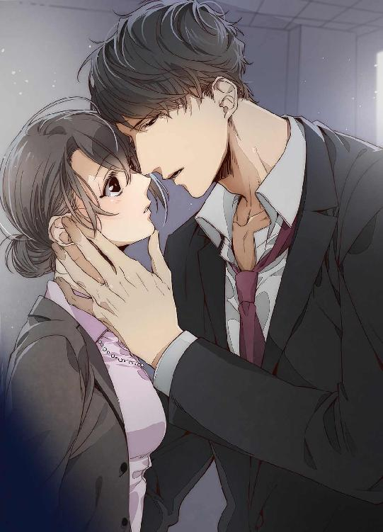

| キスはワルツを弾いてから (蜜愛セレナーデ文庫) | |
| 寒竹泉美 & 逆月酒乱 | |
| (2016) | |

本作品の全部または一部を無断で複製、転載、配信、送信したり、ホームページ上に転載することを禁止します。また、本作品の内容を無断で改変、改ざん等を行うことも禁止します。
有償・無償にかかわらず本作品を第三者に譲渡することはできません。
本作品を示すサムネイルなどのイメージ画像は、再ダウンロード時に予告なく変更される場合があります。
本作品は縦書きでレイアウトされています。
また、ご覧になるリーディングシステムにより、表示の差が認められることがあります。
キスはワルツを弾いてから
寒竹泉美
イラスト：逆月酒乱
プロローグ
十二月二十四日になると、真島雪乃は心からほっとする。一か月以上続いていたお祭り騒ぎがようやくこれで終わるからだ。人がどんなふうにクリスマスイブを祝おうが雪乃の知ったことではないが、世の中が、恋人持ちでなければ人に非ずという勢いで、恋人モード一色に染まってしまうのが息苦しい。恋人がいる人には、何か特別なことを計画しろと急き立て、いない人には、いないとさみしいから早く作れとおせっかいを焼く。
研究室とマンションを自転車で往復するだけの日々を送っている雪乃でさえ、コンビニのハートだらけの装飾や、クリスマス特集と言う文字がおどる雑誌の表紙に、二十六歳にもなって恋人がいないなんて、人としてどうかしていると言われているような気がして肩身が狭い。
いや、今日から二十七歳だ。
十二月二十四日は、雪乃の誕生日でもあった。
母親の華に言わせると、二月十四日のバレンタインデーに愛し合って、クリスマスイブに生まれた、運命の子なのだそうだ。子としては父と母のそんな事情を聞かされても運命よりも生々しさが先に立つので、事実であっても聞きたくなかった。
華の運命の相手である雪乃の父は、雪乃が二歳のときに死んでしまった。以来、華は次々と恋人を変えているが、雪乃の父ほどの人はいないと嘆いている。
きっと今日も何人目か分からない恋人と、イブの夜を過ごしているのだろう。
カードキーで動物実験施設の入り口を開ける。入退出名簿に名前と時間を記入する。さすがに今日は、夕方以降の出入りは少ない。いつもは雪乃と同様に遅くまで実験をしている上司の秋吉准教授も、孫とクリスマスパーティーをしなくちゃいけないからと早々と帰って行った。
使い捨ての防塵服を着て、手袋をはめる。実験に使うネズミのケージをチェックして、妊娠しているメスを別のケージに分けていく。チュウチュウとか弱い声が聞こえるケージをのぞくと、子ネズミが生まれていた。まだ毛がはえていないし、目も開いていないのに、ちゃんと母ネズミのおっぱいを探しあてて一生懸命吸っている。
ケージにいるのは、マウスと呼ばれる種類の小さいネズミだった。大人になっても体の大きさは指の長さより小さいくらいだ。その代わり尻尾は長い。マウスはもともとハツカネズミを実験用に改良したものなので、妊娠して二十日すれば子供が生まれる。
妊娠したメスを出したケージの中に、新しい若いメスを入れてやると、さっそくオスのマウスがメスを追いかけはじめる。
「恋人たちの聖夜か」
と、雪乃はつぶやいた。
マウスも人間も、恋のために膨大なエネルギーを使う。マウスはまだシンプルだが、人間は恋を成就させるために、あらゆる努力を惜しまない。お金も時間も心も削られてしまう。恋さえしなければ、その労力をもっとほかの有意義なことに使うことが出来る。
雪乃はそれを、母の華の生き様を見て悟ったのだ。
女手一つで雪乃を育ててくれた華は恋多き女だった。多いだけならまだよかった。恋をしている時の華は、別の惑星の生き物になってしまったかのように愚かになる。そのために雪乃は何度も引越しをし、転校を余儀なくされ、生存の危機にあうほど貧乏になったり、お金持ちになったり、波乱万丈の人生を送らされてきたのだ。自分の夢を追いかける暇なんてなかった。与えられた環境をどう生き抜くかが、少女時代の雪乃の第一優先事項だった。だからこそ、雪乃は二十七歳にして世の中を半分諦めたような老成した人間になってしまった。
動物室から外に出ると、黒い夜空にちらちらと白いものが舞っていた。
「ホワイトクリスマス、イブ」
雪乃の名前の由来になった雪が、今年も降った。
体についた雪を振り払って、研究室に戻る。実験室にも研究室にも誰も残っていなかった。その静けさに雪乃は心からほっとした。さすがにここまでは恋人たちの聖夜は攻めてこない。研究室は雪乃にとっての聖域だった。
が、ピアノのメロディーがその静寂をやぶった。雪乃のスマートフォンの着信音だ。華からの着信だった。
『雪乃、誕生日おめでとう』
「あ、ありがとう」
『何、しんきくさい声してるのよ。今年もまたひとりで過ごしてるんじゃないでしょうね』
マウスとデートをしてきたところだ、と言いたかったけれど雪乃は黙った。クリスマスイブのこんな時間に華から電話があるなんて、嫌な予感しかしない。毎年、恋人とのデートに忙しい時間だ。誕生日当日に電話をくれることはあっても、昼間だったり、朝だったりで、夜に電話が来ることは今まで一度もなかった。
「もしかして、松田さんと別れたの？」
『正解。どうして分かったの？ 雪乃、天才。エスパー。それとも予言者なの？』
ずいぶん酔っているらしい。ろれつも回っていないが、言っていることもおかしい。
『今度こそ運命の人だと思ったのに』
電話の向こうで華が激しく泣きだした。いつものことながら、雪乃はあきれてため息をついた。
二十歳のときに雪乃を生んだ華は、現在四十七歳だが、見た目は三十代にしか見えない。だが、いくら若く見えようとも、人生経験は四十七年分積んでいるはずだった。しかも人一倍恋の失敗を重ねているのに、どうしていい加減学ばないのだろう。何度同じことを繰り返してきたのか分からないのに。
しかも華の職業は小説家だ。たくさんの人間の人生を想定して物語を書くのに、自分のことは分からないのだろうか。
雪乃はスピーカーボタンを押して、スマートフォンを実験台に置いた。他の人がいないからできる技だった。これで手が空くので、実験を続けられる。
泣き終わってさらに愚痴を言い終わって、大体三十分くらいしたらしゃべりつかれて寝るだろう。
棚を開けて試薬に手を伸ばした雪乃は、ふと、違和感を覚えて動きを止めた。
（松田さんと別れたということは......）
──女の子なのに理系の研究者になりたいなんて、雪乃ちゃんはかっこいいなあ。おっちゃんが応援したるからな。安心しな。任せとけ。がんばれよ。
松田の関西弁の混じりの豪快な笑い声が耳に残っている。
「あれ、お母さん。わたしの大学院の授業料......」
『何よ。雪乃ったら。わたしが恋の苦しみで泣いてるのに、突然お金の話なんかして』
「こっちも人生かかってるんだから」
『大ゲンカして、決裂したから、全部白紙にしたわよ。あんな人から、援助なんて一円も受け取りたくないんだから』
雪乃は試薬を棚に戻して、力なく椅子に座りこんだ。
『大丈夫よ。雪乃の授業料くらい、お母さんが新作書いて、印税でぽーんと払ってあげるわよ』
「いつ書きあがるの？ 何文字書いた？」
『ゼロ......？』
──終わった......。
奨学金を限度額いっぱいまで借りて、ただでさえ借金生活をしているのに、バイトをする暇もなく実験をしているので授業料を捻出できない。もう働くしかないとあきらめていたところを、松田の言葉を真に受けて、大学院に進学した。もちろん、収入を得られるようになったらお金は返すつもりでいたが、あと二年は大学院にいないと博士号が取れない。博士号が取れないと大学で研究し続ける道は閉ざされてしまう。
『ごめんね、雪乃。お母さん、あともうちょっとしてから別れたらよかったわ』
「いいよ。当てにしたわたしが馬鹿だったから」
もう二十七なのだ。母親の恋人の援助を当てにしている場合ではない。
「就職する」
『えー、うそ。ノーベル賞は？』
「お母さんが獲りなよ。ノーベル文学賞」
『あ、そっか。その手があったか』
雪乃はもう一度ため息をついた。でも、もう悩んではいなかった。大学を離れるのは残念だったが、続けられないなら仕方がない。小さい頃から、華の波乱万丈な恋模様につきあわされて引っ越しや転校を余儀なくされた雪乃は、あきらめることは慣れていた。
大学院に進学してからも能天気に母の恋人の援助をあてにしていたわけではない。別れてしまう可能性も考えて、学べることは学んでおこうと、猛勉強した。
『メリークリスマス』
唐突に華が言った。
時計を見ると、深夜十二時を過ぎていた。
『わたしも新しい恋人探しがんばるから、雪乃もがんばってね』
さっきまで泣いていたのに......と、雪乃はため息をついた。そのエネルギーはどこから湧いて出るのだろう。
スマートフォンを白衣のポケットにしまうと、雪乃は実験室を片付け始めた。窓の外では雪が吹雪になっていた。雪乃の未来を祝福しているのか、それとも大嵐の前兆なのか。どんな運命が待ち受けていようと、とにかく雪乃は前に進むしかなかった。
第一章
「真島さんの履歴書を拝見させていただきましたが、志望動機がとてもシンプルですね」
「ありがとうございます」
と、雪乃は言ったが、面接官はにこりともせずに、
「別にほめてないが」
と、言い捨てた。
（やっぱりまずかったか......）
雪乃は緊張した面持ちで、面接官を見た。
面接官は五人いたが、口火を切ったのは中央に座った初老の男だった。俳優だと言われても納得してしまうくらい、整った顔に鋭い眼光の持ち主だった。
雪乃が就職活動を始めて一番困ったのは、この志望動機だった。お金が必要だから就職する。それ以外に何を書けばいいのだろう、と雪乃は散々悩んだが、答えは出なかった。
敢えて書くなら、自分の学んできたことと募集している職種がマッチしているので、役に立つことができるということくらいだろうか。
他の就活生が相手をほめたたえる美辞麗句を並べ、自己のやる気をアピールして未来の計画を語るこの欄に、雪乃はシンプルな二文を書いただけだった。
・生存を維持するためのお金が必要だから。
・自己の能力が御社の事業に貢献できると考えたから。
「この志望動機ならどの会社でもよいと思っているように受け取れるがね」
「そんなことはありません。もちろん貴社がわたしの第一志望です」
噓をつけない雪乃だったが、このことは自信もって言うことができた。なぜなら、雪乃が今、最終面接を受けているつばき製薬から不採用を突きつけられたら、もうあとがないからだ。もう何社も落ちてきた。雪乃が大学院で専攻している生命科学分野の研究職を募集している会社は無限にあるわけではない。
雪乃も自分なりに就職活動というものを研究したつもりだった。しかし、異性に口説かれているわけでもあるまいし、あなたが一番、なんて言われたがる気持ちがよくわからない。
雪乃はお金が欲しかった。その代わりに能力を提供する。あとは、相手が雪乃の能力にお金を出すかどうか。これ以上の何があるだろうか。
「わたしは与えられた環境で最善を尽くします」
「なるほど。真島さん自身はやりたいことはないのかな？」
「今はありません。外部からの要請に応えていく中で、自然に見つかると思います」
「なるほど」
もう一度初老の男は言った。表情が変わらない。いい印象をもたなかったように見える。でも、どう思われようと仕方がなかった。噓をついて自分を演じて採用されても、きっと長続きしないだろう。
「それは研究以外の仕事でも同じですか？」
端に座っていた若い面接官が言った。雪乃より少し年上だ。まだ三十代だろう。眼鏡のせいで表情がよく分からないが、義理で聞いたというような雰囲気だった。
就職活動を始めた頃は、相手の質問にいちいち一喜一憂していた。こんなことを聞かれたから採用されるに違いないと期待で胸をいっぱいにしていたのに、あっさり落とされるという経験を積むうちに、雪乃はもうどんな質問にも淡々と答えるようになっていた。
質問する方も仕事なのだ。何も言わないわけにはいかないのだろう。
「他の仕事でも同じです。その仕事がわたしに向いているとどなたかが判断したなら、その人の期待に応えて最善を尽くします」
『大学ではどんな研究をしていたのですか？』
英語での質問だった。若い面接官とは反対側の端にいて気づかなかったが、面接官五人の中に、青い目のロマンスグレーの初老の男性が混じっていた。日本語は解さないのだろう。今までの会話の流れを汲まない質問だった。それとも彼はこの質問を全員にしているのかもしれない。
雪乃は青い目の面接官を見ると、英語で研究内容を話し始めた。英語の方がむしろ流暢にしゃべることができた。使い慣れない敬語に気を使う必要もないし、研究の話なら何度も学会で話してきた。
今が採用試験の最中だということを忘れるくらい、雪乃が熱中してしゃべってると、
「もういいですよ」
と、唐突に日本語で打ち切られた。外国人の面接官の隣に座っている太った男だった。
雪乃が驚いて口をつぐむと、男は退屈そうにあくびをした。
「すみません。長々と」
雪乃が謝ると、男は目を細めた。
「真島さんは、英語がうまいけど、外国人の恋人でもいたのかな？」
雪乃の思考は一瞬停止した。人間は予想外の出来事が起きた時に、その本性を見せるものだ。雪乃はまんまとそれにひっかかって、冷静な表情を崩して顔を赤らめた。
「恋人は今までいたことがありませんし、恋をしたこともありません。これからもする予定はありません」
余計なことを言ったと後悔したが、もう遅かった。恋は雪乃のもっとも苦手とするものだった。このせいで、どれだけ人生を狂わされたか分からない。ただし、自分の恋ではなく母親の恋だ。
雪乃の反応が面白かったのだろう。男はさらににやにやしながら言葉を続けた。
「それは困るなあ。我が社は最近化粧品部門に力を入れているのを君も知ってるだろう。うちのブランドのポリシーは恋のかがやきだ。恋が分からないと開発のしようがない。女性の研究者にはぜひとも化粧品部門で活躍してほしいと思っているんだがね」
「恋なら分かります」
抑えろ、微笑んで、これから学びますなんて言って受け流せ。もうひとりの雪乃がささやいているが、止まらなかった。
「恋は遺伝子が子孫をのこすために仕組んだ巧妙な麻薬です。子を成し育てるという個体としてリスクを負う苦役を、恋という状態で思考を麻痺させ先のことを考えられないようにし、命を掛けた愚かな行動に駆り立てるのです。これだけ知性が発達した人類も恋のためならあらゆる愚行を冒し、それを何度も繰り返します。御社の化粧品ブランドの戦略は実にビジネスに適しています。人は恋を思い浮かべると冷静な判断を失います。夢を与え判断力を鈍らせることで高級な化粧品が売れていくのです。ラブ・イズ・マネーです。もっと煽って恋の麻薬をふりまきましょう」
「ラブ・イズ・マネーか」
男は肩を揺らして笑っているが、他の人たちは苦い顔で雪乃をにらんでいる。特に真ん中に座っている初老の男は、雪乃と目を合わせようともしなかった。
「次のつばき堂のコピーにどうだ？」
誰も反応しない。雪乃はいたたまれなくなって、目を伏せた。
「他に誰か真島さんに聞きたいことはないか？」
男がうながしたが、誰も口を開かなかった。白衣を着た研究担当の責任者らしき面接官も、首を横に振っただけだった。
「では、おつかれさま。ありがとう。結果は後日連絡します」
「ありがとうございました」
立ち上がっておじぎをする。部屋を出ていく雪乃の足取りは重かった。
慣れないパンプスを履いて歩いたせいで靴擦れができて、ストッキングに血がにじんでいた。目の前をたくさんの人が忙しそうに歩きすぎていく。誰も雪乃に目を止めない。
コートを着ていないせいで凍えそうだった。就職活動のためにリクルートスーツは、何とか買ったが、スーツに合うコートを持っていなかった。新たに買う余裕もなかった。普段はしない化粧もしなくてはいけない。当然、靴もカバンも必要だった。あとは交通費。お金がないから就職活動をしているのに、貧乏神と一緒に豪遊している気分だった。
脚を引きずりながら、寒さから逃れるために目についた百貨店の中に入った。暖房の効いた室内にほっとして、雪乃はようやく体の力をゆるめた。
百貨店の中はきらきらした光と色にあふれていて、今まで雪乃がいたモノクロのオフィスビルとは大違いだった。
（確実に、落ちた......）
つばき製薬は日本の製薬会社のトップ三に入る大企業だ。そう簡単に採用されるわけはないし、最終面接までたどりつけたのが奇跡だったから、落ちても仕方がない。だけど、普通に落ちるならいい。最終面接であんなことを言うなんて、社会人志望失格だった。
大理石の柱に貼られたポスターには、フルメイクした女優がつややかな微笑を浮かべ、恋のかがやきというキャッチコピーとともに、つばき堂の新作ルージュが紹介されていた。雪乃はポスターをにらみつける。その女優にも化粧品にもつばき製薬の子会社であるつばき堂にも恨みはない。雪乃の恨みは「恋」という文字一点に注がれていた。
（あのとき、恋という言葉が出てこなければ自分を保っていられたのに。）
恋に落ちて我を失う人生は避けたかったが、そうやって必死に避けているせいで逆に恋に振り回されている。
大学生になって奨学金とバイトで独立して一人暮らしを始めて九年。二十七歳になって、さすがにもう関係ないと思っていたのに、いまだに自分が母の恋のトラウマにとらわれ続けていることがショックだった。
若くてきれいなお母さんだと言われて喜んでいたのは幼いときだけで、恋のたびに我を見失い、バカな恋愛を繰り返しては何度も男にだまされ痛い目に合っている母親を見ながら、少女だった雪乃は恋をせずにひとりで生きようと固く決意した。
（ラブ・イズ・マネー、か）
ポスターに自分の考えたコピーをあてはめてみる。悪くない。でも多くの善良な男女が我に返って愚かな行動をやめることになるだろう。恋はお金に余裕がある人がするものだ。生きるために必死な今はそんなことに時間もお金も割く余裕がない。
「新作のルージュです。よかったらサンプルをお渡ししています。お試しください」
鈴が転がるようなかわいらしい声で話しかけられ、雪乃は我に返った。販売ブースに突っ立ってポスターをにらんでいた雪乃は、どう見ても化粧品に興味があって買おうかどうか迷っているようにしか見えないだろう。
「もしお時間ありましたら、今、お試しになりませんか？」
ひっ、と小さな悲鳴が出た。
「わたし、そういうの、似合わないんで」
「そんなことないですよ。肌が白くておきれいですから、ルージュの色もよく映えてお似合いだと思います」
雪乃はじりじりと後ずさりしたが、赤いワンピースの制服を着た美容部員は、ぱちぱちと長いまつげをまばたかせながら、にっこりと笑って雪乃の腕をそっとつかんだ。花の香りがただよう。
「お色を使うのが苦手でしたら、ナチュラルなメイクをお試ししませんか。就職活動もメイクで第一印象は結構変わりますよ」
就職活動という言葉にぐらりと来た。普段、雪乃はすっぴんだった。実験中は化粧が邪魔になる。粉がサンプルの中に落ちたら大変だ。だけど、すっぴんのままリクルートスーツを着たら、野暮ったい田舎の高校生みたいで似合わなかった。仕方なく見よう見まねでメイクをやってみてはいるが、たぶん成功していない。街を歩いていても自分だけが何だか浮いているのが分かる。
「じゃあ、お願いします」
と、雪乃は言った。高い化粧品を買うことになっても授業料だと覚悟した。
「それではこちらに座って下さい。わたし、瀬良といいます。よろしくお願いします」
オクターブ高い声で名乗った瀬良に向かって、雪乃は神妙にうなずき、よろしくお願いします、と答えた。
「じゃあ、まずは、お顔を化粧水で拭き取らせていただきますね。こちらの化粧水はコラーゲンがたっぷり入っていますので、お肌がぷるぷるになりますよ」
「コラーゲンが入ってたら、なんでぷるぷるになるんですか？」
雪乃が聞くと、瀬良は聞かれるのを待っていたかのように、嬉しそうに口を開いた。
「コラーゲンは、お肌の張りを作っているんです。お肌に塗ると、コラーゲンが皮膚の中に入って内側から張りを保ってくれるんです」
「中に入るんですか？」
「ええ、そうなんです」
「でも、コラーゲンは分子が大きいので皮膚からは吸収されないと思うんですけど、何か特殊な技術を使っているんでしょうか」
「ぶんし......ですか...？」
相手の顔が引きつって手が止まったのを見て、雪乃はしまったと思った。
「別に効果がないとか、疑っているわけじゃないんです。本当にお肌がぷるぷるになるのなら、どういった作用機序で起こるのかが気になって」
「サヨウキジョ......？」
瀬良が泣きそうな顔になったので、雪乃は、ますますあわてた。
「あ、いいです。別に、構いません。後で調べます」
「少々お待ちください」
「あ、待って」
雪乃が止める間もなく、瀬良はあわてて逃げていった。
そして、雪乃はすっぴんのさらし首で放置されるはめになった。
ばっちりメイクの女優のポスターに囲まれて何とも間抜けな姿だった。
そのとき、バッグが震えた。スマートフォンが着信した合図だった。メールが一通、パソコンから転送されていた。雪乃の心臓がギュッと縮む。
（まさかこんなに早く？）
差出人は、つばき製薬ではなく、先日面接に行った別の製薬会社からだった。メールを開いて文面に目を走らせる。長々とあいさつが書いてあるが、雪乃が知りたい情報は採用か不採用か、それだけだった。
『残念ながら今回は採用を見送らせて......』
決定的な文句を見つけたときだった。
「お待たせして申し訳ありません。瀬良に代わって椿堂ビューティーアドバイザーの江口です。メイクを担当させていただきます」
すらりとした年上の女性が現れて、雪乃にあいさつをした。
が、スマートフォンの画面から目を離せないでいる雪乃に気がつくと、
「どうぞ、構わず返信してください」
と、言った。
「返信はしなくていいんです。不採用なので」
思わず言葉がこぼれた。
「ご縁がなかったんですね」
優しい声だった。
「実力がなかったんです」
「いいえ、ご縁がなかっただけです」
きっぱりと言い切る江口を、雪乃はあきれて見つめた。
「縁ですか」
「非科学的だと思っているでしょう？」
「いえ、そんなことは......」
雪乃は言葉を濁したが、図星だった。縁とか、運命とか、雪乃は幼い頃から飽きるほど聞かされてきたのだ。それは雪乃の母親が自分の考えなしの行動を正当化するときの常套句だった。
「縁ってのは、偶然と必然が混ざったものだと思うんです」
江口は楽しそうに笑っている。
「だって、この地球上に七十二億も人間がいるのに、それらがみんな能力や適性だけでベストな場所にマッチングできると思います？」
「いえ」
「じゃあ、偶然だけで全部が決まると思います？」
「それもないかも」
雪乃はうなった。縁が偶然と必然の混ざったものならば、縁なんて存在しないというほうがむしろ非科学的かもしれない。
「たぶんね、似たような環境で育ったり、歳や距離がたまたま近かったり、という偶然が、いくつかの必然を呼ぶんじゃないかな」
「はあ、確かに」
雪乃は呆然として江口を見つめた。
「これ、江口理論。人生の頻出事項だから覚えといてくださいね」
「はあ」
「というわけで、ご縁をつなぐメイクをしましょう」
「メイクと縁が関係あるんですか？」
「ありますよ。メイクは、自分をちゃんと見てほしいというメッセージですから」
江口はにこにこしながら、慣れた手つきで用意を整えていく。その様子と江口の落ち着いた声に雪乃はほっとした。雪乃の前髪をかきわけてピンで止めた。顔をのぞきこまれる。
ひんやりとしたものがおでこにあてられる。化粧水を浸したコットンだった。雪乃は目をつむった。化粧水が肌に気持ちいい。
すぐそばに江口の視線を感じる。こんなふうに誰かにじっと顔を見られたのは初めての経験だった。それどころか、自分でもこんなふうにじっくりと自分の顔を見たことはなかった。
「コラーゲンが皮膚の中に入っていくっていうのは間違った説明です。お客様の言うとおり、コラーゲン分子は皮膚から浸透したりはしません。瀬良にはきちんとした知識を教えておきますから。ごめんなさい」
「いえ、こちらこそ、すみません。ただ興味があって」
「興味を持ってくれて嬉しい。はい、化粧水終わり」
江口がかがめていた上半身を起こし、ほかのアイテムを取るために後ろを向いた。雪乃はそっと自分の顔を触ってみた。しっとりとした手触りと、ぷるんとした弾力を感じる。
「本当にぷるぷるだ」
「中には入らないけど、コラーゲンがゲル状になって保湿作用を発揮するんです。夜、寝る前なんかにつけたら、朝、お肌が全然違いますよ」
「へえ」
面白くて鏡をのぞきこんでいると、雪乃はチューブのようなものを手渡された。
「はい。これ、下地クリーム。覚えて欲しいから自分でやってみてね。本当はベース作りだけでいろいろ行程があるんですけど、自分でもできるようになってほしいから、今日はなるべくシンプルにやっていきます」
「わたしがやるんですか？」
「だって、せっかく興味持ってくれたのに、今日だけで終わったらもったいないじゃない」
「はい、お願いします」
雪乃は、神妙にうなずくと、江口の指導どおりぎこちない手つきで手の甲に下地クリームを取り出す。パフで顔に伸ばしていく。するすると伸びていって、あっという間に薄く均等に顔をカバーしていく。肌の色が一段階明るくなった気がした。
「面白い」
「面白い？」
江口が笑いを含んだ声で聞き返した。
「わたし、この仕事ずいぶん長いけど、そんな感想は初めてかも」
雪乃は、あわててつけ加える。
「よくできてるなと思って、興味を持ったんです。摩擦をなるべく少なくしつつ、肌から落ちないようにしなくちゃいけないし、元の肌の赤みをカバーしながらも透明感のある仕上がりにする必要もあって、矛盾する目的をどうやって達成しているのか、不思議で」
「それだけじゃないわ、汗で落ちにくいのに、肌への刺激や負担も少ないの」
江口の説明に、雪乃は外箱に書かれた成分をまじまじと見た。恐らく一部しか書かれていないだろう。ここに書いてある情報だけではメカニズムが予想できない。
「下地で止まってたら、どれだけ時間があっても終わらないですよ」
うながされて、雪乃は手を動かし始めた。ファンデーション、粉、シャドウでベースを作り、ペンシルで眉を描き、アイメイクに取りかかる。
あっという間に雪乃はよそゆきの顔になった。仕事もでき、女性らしい魅力もたたえている。スーツにも合っていた。
「どう？」
「素敵です」
「気に入ってくれてよかった」
今まで化粧は異性にアピールするためにやるものだと思っていた。でもこの、メイクは違った。スーツを着て、丁寧な言葉づかいをするのと同じだった。メイクで仕事モードになっている。
「でもなんか落ち着かない。わたしじゃないみたいで」
「そう？ メイク前も、メイクした後も、どちらも魅力的ですよ」
「そんなことないです。わたし、こんなに美人じゃないのに。メイクで噓をついているような気がして。詐欺師みたい」
江口が、思わず笑い出す。でも雪乃は大真面目だった。
「噓をついているわけではないわ。ただ、隠しているだけで。その服の下も、大切な人にしか見せないでしょう？」
胸元を指さされて、雪乃は顔が赤くなった。江口のたとえが、雪乃にとっては過激すぎた。服の下なんて、誰にも見せたことがないし、今後も見せる予定はない。
「それと一緒。本当の顔も、本当の心も、いつも全部見せる必要はないわ。見せたい人が現れるまでは隠しておけばいい」
雪乃はうなずいた。心のたとえはよく分かった。ずっとそうやって生きてきた。でも、見せたくなる相手なんて現れなかった。いや、かつて、ただ一度だけ......。
「だから、服もメイクももっと楽しんだらいいの。あれと一緒、ほら、虫が花のふりして獲物を待ち伏せしたり、魚が毒のある種類とよく似た柄で敵を警戒させたり」
「擬態ですか？」
今度は雪乃が笑う番だった。化粧品コーナーで、虫や魚の話を聞くとは思わなかった。
「そう。擬態。わたしも今、擬態しているの」
「江口さんは本当の姿を見せられる人がいるんですか？」
「いるわ」
すがすがしいくらい即答だった。恋に対してネガティブなイメージしかなかった雪乃は、初めて、少しだけうらやましいと思った。
「すぐできるわよ」
「わたしは、いいんです。恋はしないと決めたんで」
「そう？」
意味深に笑って、江口が首を傾げた。
「あの、リップを買います」
「あら、いいのに。気にしないで。試供品あげるから」
「買いたいんです。これも縁だから」
「そう、ありがとう」
江口は微笑んだ。
「縁は自分で切ることもつなぐこともできる」
椿の花があしらわれた真紅の小さな紙袋にリップを入れながら、
「これも大事。よく覚えといて」
と、言った。
殺風景の見慣れた自分の部屋に、深い紅色の小さな紙袋が一輪の花のように咲いていた。スーツを脱いで部屋着に着替えると、雪乃はバッグをそっと開けてみた。購入したリップのほかにたくさんのサンプルが入っている。ひととおりメイクできそうなくらい豊富な種類だった。クレンジングのサンプルで、メイクを落としてみる。せっかくのメイクを落としてしまうのはもったいないけれど、家に帰ってきたらもう見せる相手もいない。
乾いた状態で肌に伸ばしていき、最後はお湯で流すタイプだ。かすかに花の香りがした。肌によくなじむ。洗い終わって洗面台から顔を上げる。タオルで顔をふくと、鏡に自分の顔が映っていた。そこに映っている自分は、頭の中で考えているイメージよりもたよりなく気が弱そうだった。
（自分の顔をこんなにちゃんと見たのも初めてかも）
美人でもない。とりえもない。こんな自分、誰にも見られたくないと思っていた。でも、鏡の中の雪乃は、誰かに見つけてほしそうだった。このままひとりぼっちでは嫌だと言っているみたいだった。
──メイクは、自分をちゃんと見てほしいというメッセージなんじゃないかな。
江口の言葉がよみがえる。
（もし、就職が決まったら、江口さんのところでファンデーションを買おう。ほかにもいろいろ選んでもらって......）
そのときのことを想像すると気持ちが弾んだが、すぐに雪乃はため息をついた。ベッドに倒れこむ。何もかも、就職が決まったらという仮定の話だ。
全身がつかれていて、目をつむったら今にも寝てしまいそうだった。せっかくもらったサンプルのスキンケアセットを試してみようと思うのに体が動かない。
人に選ばれるためにがんばるというのは、こんなにも大変だ。
お金のためだからがんばるけれど、お金にもならないのに、好きな人を振り向かせるためにせっせと努力している世の中の人たちを尊敬してしまう。
結局雪乃は、そのまま眠りに落ちていった。
第二章
電子天秤で試薬を量り、ビーカーの中に入れていく。精製水が渦を巻き、粉がくるくると舞って溶けていく。毎日毎日繰り返してきた作業だったが、いまの雪乃には何でもないこの動作さえいとおしかった。
（あと、何回実験できるんだろう......）
実験室には他に誰もいなかった。夜はゾンビのように院生が徘徊しているこの場所も、朝は静かだった。
大学に残らず、企業に就職することを決めたのだから、さっさと研究を終わらせるか、やめてしまうべきなのに、いつまでも未練たらしく雪乃は実験をしている。
夢もやりたいこともないと思って生きてきたけれど、研究は好きだった。いくらでもひとりでいられたし、正しくないことを正しいと言ったり、うわべだけで取り繕ったりする必要はなかった。科学は雪乃をだましたりはしない。もしだまされたと思ったときは、雪乃が思い違いをしていただけで、根気強くデータを積み重ね、先入観を抱かず観察していれば必ずいつか真実にたどりつけると信じられた。
修士課程の二年間はあっという間だった。そして博士課程も二年経っていた。全部でもう四年間、大学院にいたことになる。雪乃は夢中になって科学を学んだ。そうやって学んでいるうちに、いつか自分の研究室を持ち、世界中の科学者と議論をするような研究者になりたいと願うようになっていた。自分の進むべき道を見つけたと思っていた。
（夢なんて見なければよかった）
そうすれば、今ごろどこかの会社で働いていただろう。大学三年生のときに就職活動を始めていれば、もう少し楽にどこかの職につけたかもしれない。
「真島さん、コーヒーを飲みませんか？ 少し作りすぎました」
眠そうなバリトンボイスが聞こえて顔を上げると、雪乃の指導教官である秋吉准教授が両手にひとつずつマグカップを持って、横に立っていた。
「ありがとうございます、いただきます」
雪乃はマグカップを受け取った。黒い液体がなみなみと入っている。一人分をうっかり入れすぎたにしては明らかに多い量だった。コーヒーは口実で、就職活動ですり減っている雪乃をねぎらおうとしているのだろう。
（人を気遣うなんて似合わない）
雪乃は苦笑した。でも有り難かった。
秋吉はいつも眉を寄せて不機嫌そうな顔をしている。そのせいで、学生たちからは恐がられているが、そんな顔をしているのは不機嫌だからではなく、常に研究のことを考えているせいだった。出会って最初のうちは話しかけてもなかなか返事をしないので雪乃は何か怒らせたのかとずいぶん戸惑ったが、思考の世界から現実に戻ってくるのに時間がかかるのだと分かってからは、恐い顔も沈黙も尊敬の対象になった。
秋吉が実験室の椅子に腰を下ろしたので、雪乃も手を止めて、椅子に座った。
「冷えますね」
秋吉が窓の外を見たので、つられて雪乃も見る。外はちらちらと小さな粉雪が舞っていた。研究室の中は常に一定の温度に保たれているので、季節が移り変わる実感がない。それでも季節は移り変わり、二十三歳だった雪乃は二十七歳になった。残ったのは論文一本と、やりかけの研究と、奨学金という名の借金だけだった。修士号は取れたけれど、博士号を取るには時間が足りない。
多くのことを学んだはずだった。だけど、研究職につけなければ、それを生かすこともできない。
「しかし惜しいですね。来年なら学振が取れたかもしれないのに」
と、秋吉が言った。
学振とは日本学術振興会が行っている特別研究員の制度のことだ。これまでの成果と今後の研究計画が認められれば、給与をもらって研究を続けることができる。しかし、応募の時期までに論文の採用が間に合わず、雪乃は今年の学振を逃していた。
「仕方がないです。もともと大学院に進学できるような経済状況じゃなかったのに、ここに四年間もいられたことだけで幸運でした」
あきらめはいいほうだった。何度も何度もそうやってあきらめて生きてきたのだ。仲良くなった友達も、好きになりかけた男の子もみんな突然の別れに切り裂かれ、それっきりになった。子供だった雪乃は母についていくしか生きる道がなかった。その生き方は染みついていて、大人になった今でも雪乃を支配している。
何かを強く欲しいと思ったり、周囲に迷惑をかけてまでやりたいことを貫いたり、そんな行動は雪乃にもっとも遠かった。
だから、自分のやりたいことがあって、それにしたがって生きている人に憧れがあった。うらやましかった。目の前にいる秋吉も、その一人だった。大学内の出世争いに加わらず、教授からのプレッシャーを無視し続け、自分の道を貫き通している。おかげで彼のラボはいつまでたっても零細ラボで、定年間近なのに教授になれる見込みはなく、院生は雪乃しかいなかった。世界的には評価されている研究者だが、教授たちや企業のお偉方に嫌われているので、次の進路や就職に不利になるから学生たちは秋吉の下につきたがらない。秋吉研に行くと先がない。それがただの噂ではないことは、今、不本意ながら、雪乃が身をもって証明してしまっている。
「大学だけが研究の場ではありません。企業の研究開発も大学とは違った刺激があってなかなか面白いですよ」
なぐさめるつもりで言ってくれたのだろう。雪乃は苦笑した。
「実は、研究職は全部落ちてしまいました」
今朝、つばき製薬の結果をメールで確認した。そこには見慣れた文句、「ご希望に応えることができず」が記されていた。あんなに派手なケンカを売って採用されるわけがないと思っていたけれど、結果を突き付けられると予想以上に落ち込んだ。
「普通の職を探します。せっかく先生に教えていただいたことが生かせなくてすみません」
「そんなことないですよ。研究者のスキルはどこでも意外に役立つんです。英語が読めて話せて、実験の計画をたてて実行し、結果を分析してプレゼンする。これはどこの企業でも必要な力です」
黙っている雪乃に、
「疑ってるでしょう？」
と、秋吉が聞いた。
「はい。そうやって気休めを言ってなぐさめてくれているだけでしょう？」
「何を隠そうこれは僕の経験なので、事実です」
「先生の？」
「僕は、大学院を出てから研究を続けるお金がなくなって、企業に勤めていたことがあります。医者や研究者としてではありません。普通にサラリーマンです。ずいぶん重宝されましたよ。結局、こっちの世界に戻ってきましたけど」
雪乃は秋吉を上から下まで改めて眺めた。よれよれの白衣を着て、誰の目も気にせず、自由に生きているこの人が、若かりし頃とはいえ、スーツに身を固めて会社に勤めていたなんて想像ができなかった。
「真島さんはどこでもやっていけますよ。どんな仕事をしようと、あなたは、きっと誰かの役に立つ」
よっこらせ、と言って秋吉は立ち上がった。
「あなたの好きなようにやってみなさい」
秋吉が去ると、また実験室はビーカーをかきまぜるスターラーがガラスにぶつかる音と、巨大な冷蔵庫のモーターがうなる音だけになった。
雪乃はほおづえをついて考えた。
（好きなようにやるといっても、そもそもわたしは何が好きなのだろう）
いくら考えてもそれが分からなかった。
ほかの人はどうやって自分の好きなものを見つけるのだろう。そして、見つけたそれをどうやって守っていくのだろう。
（あの人はきっと今も好きなものを追いかけ続けているに違いない）
目をつむると、いつでも、雪乃の耳には「彼」が弾いていたピアノのメロディーが聞こえてくる。
高校生だった彼は、一心にピアノを弾いていた。その姿には迷いがなかった。将来はピアニストになるつもりなのだ。そのことが遠くからそっと見ているだけの雪乃にも伝わってきた。
彼の名前も、今どうしているかも雪乃は知らなかった。でも、いまだに彼は雪乃の心の中に居座り続けている。
彼と出会ったのは、高校一年生の二学期が始まったばかりの頃だった。
昼休みに教室でお弁当を食べていると、窓の外からピアノの音色が流れてきたのだ。ほかの女の子たちはおしゃべりに夢中で、その音が聞こえていたのは、雪乃だけのようだった。それは雪乃が特別に耳がよかったわけではなかった。話題に入れずにぼんやりしていたから、ほかの音が聞こえたのだ。
女の子たちの話題は、雪乃には興味のない話ばかりだった。テレビドラマもファッションも恋の話も雪乃はまったく関心が持てなかった。それでも、輪の中からはみ出さないためには、興味のある振りをしてにこにこ笑っていなくてはならなかった。その時間が苦痛でたまらなかった。
ピアノの音色は、その見えない牢獄から雪乃を連れ出してくれるように思えた。ただきれいなだけじゃなく、凛として強く、どこか孤独な音色だった。その音を聞いていると、雪乃はざわついていた心がおさまっていった。グループの端っこで、愛想笑いを顔に張り付けて、必死で気に入られようとしている自分を冷静に眺めることができた。
その音が聞こえ始めて一週間目に、雪乃はグループをひとりで抜け出す決心をした。
食べ終わったお弁当をしまって、そっと立ち上がった。教室を出て行く雪乃に声をかける人間はいなかった。誰にも気にされていないのに、何をびくびくしていたんだろう、と雪乃は思った。さみしかったけれど、心が軽かった。
廊下に出ると音が聞こえなくなった。窓際で聞いた記憶をたよりに音の生まれている場所を探していく。音楽室の方角ではなかった。制服のまま土をまきあげてサッカーをしている男の子たちの横をすり抜けていく。
音は、木造の小さな古い講堂の中から聞こえていた。音が振ってくる。恵みの雨のように雪乃の体を洗い流していく。音楽の先生が弾いているのだろうか。でも音楽の先生なら音楽室で堂々と弾くだろう。どんな女の子が弾いているんだろう。
扉は少し開いていた。そのせいで外に音が聞こえたのだろう。
耳をつけた。それだけじゃ物足りなくなって、隙間から覗いてみた。ピアノは舞台の端にあるらしく、狭い隙間からは見ることができない。雪乃は、どうしても弾いている人を見たくなって、そっと扉を開けた。
とたんに、音があふれ出た。押し寄せる音の中で、雪乃は息を吞んだ。壇上でピアノを弾いているのは手足の長いすらりとした男の子だった。
手を顔の上にかざして目を細める。天井近くの窓から陽光が差し込んで逆光で舞台がよく見えなかったが、確かにうちの制服の男子だった。
雪乃はそれまで、ピアノを弾く男子というのを見たことがなかった。こんなにうまく弾く人も見たことがなかった。彼はたったひとりでそこに存在していた。誰にも頼らず、誰の目も気にせず、孤独に練習をしていた。そのことに雪乃は感動していた。
ピアノを弾いている彼は、ひとりでいるのに心から楽しそうだった。いつも周りの目を気にしながら、びくびくとおびえて暮らしてる自分とは大違いだ、と雪乃は思った。
ひとりでいてもいいんだと、雪乃はその時初めて思った。
偽りの自分で他人たちの中に混じって孤独を感じるより、ひとりで、自分らしい自分でいられるほうがよかった。
気がつくと、音が止んで、「彼」が雪乃の方に顔を向けていた。
（じゃまをしてしまった）
雪乃はあわてて帰ろうとした。雪乃が背を向けたとき、まるで雪乃を呼び止めるような高らかな音が鳴った。ファンファーレのような華々しい単音だった。
振り返ると、彼が雪乃を見ていた。彼の目を見たとたん、雪乃はなぜか、脚が止まった。
壇上を見つめる。
（わたしはいてもいいのだろうか。ここで聞いていてもいいのだろうか）
雪乃の無言の問いに、彼が大きくうなずいてこたえてくれた。
そして曲が始まった。
少しずつ階段を駆け上がるような、メロディーが続き、ふわりと空気が変わった。軽やかなワルツが始まる。
夢のような時間だった。自分が制服を着ていることも、ここが古びた講堂であることも忘れた。音が心を弾ませる。気がつくと雪乃は微笑んでいた。愛想笑いではない、本当に心の底から自然に浮き上がってきた笑顔だった。
十本の指だけで鳴らしているのが信じられないほど複雑な音楽がピアノから響いている。シルエットが優しく跳ねる。鍵盤をたたいているというよりは、大きな優しい生き物とじゃれあってるような、光景だった。
いつまでも終わって欲しくなかった。でもメロディーが高らかに昇っていって華やかな和音で曲が終わった。ちょうどそのタイミングで昼休みの終わるチャイムが鳴った。
戻らなくては、と雪乃は思った。壇上の彼は動く気配がなかった。まだ練習を続けるのだろうか。
「あの、また聞きに来ていいですか？」
どうしてそんな大胆なことを言えたのか、今になっても分からない。必死だった。いつもの雪乃なら、断られたり迷惑がられて傷つくことが恐くて、こんなことは言えなかっただろう。でもそのときは、気持ちが高揚していた。ピアノのメロディーのおかげで素直になっていたのかもしれない。
「いいよ」
壇上の男の子が笑った。
「誰にも言わなければ」
「絶対に言いません。誰にも見つからないようにここへ来ます」
嬉しくて興奮しながら雪乃は言った。
その日以来、雪乃は毎日のように講堂へ行って彼の演奏をそっと遠くから聴くようになった。
今思えば、あれが唯一の雪乃の恋だった。他の女の子たちのように告白したり恋人になったりしたいなんてことは考えもしなかった。ただ、一方的に見つめられていればそれでよかった。彼の名前も知らないままだった。
数か月後、雪乃は母親の都合で引っ越しをすることになった。雪乃の初めての恋は、誰にも知られることなくひっそりと終わった。
突然ピアノのメロディーが流れてきた。雪乃はあわてて立ち上がる。記憶の中からメロディーが飛び出てきたのかと思った。実験台の上に置きっ放しにしていた携帯電話が鳴っていた。着信音は「華麗な大円舞曲」。ショパンの作曲だ。あのとき彼が雪乃のために弾いてくれた曲を、雪乃は着信音に設定していた。雪乃にとって大切な曲だった。
だけど、雪乃の電話が鳴ることはほとんどないせいで、たまに鳴ると飛び跳ねるくらい驚いた。鳴るとしたら、母親が離婚か結婚の報告をしてくるときか、就職活動に関連した連絡か。どちらにしても、雪乃にとって喜ばしい報告はあまりなかった。
（知らない番号だ......）
後者だった。
「真島雪乃です」
なるべく落ち着いた声で第一声を発した。
「つばき製薬取締役の椿大志です。先日の面接試験の件でお電話差し上げました」
雪乃は動揺する。メールで不採用を告げるだけでは飽き足らず、電話で駄目押しをしようというのだろうか。
頭をフル回転させて考えられる可能性を導き出す。
「わたし、何か忘れ物しましたか？」
「いえ、そのような話は聞いていませんが。何か忘れ物したんですか？」
逆に聞き返される。雪乃は恥ずかしくなった。
「ほかに、電話がわざわざかかってくる用事が思いつかなかったので」
「じゃあ、メールはまだ読んでいただいていない？」
「メールですか？」
不採用のメールのことだろうか。
「私の秘書としてうちに働きに来ていただくご提案、考えていただけましたか？」
「え？ 秘書ですか？」
雪乃の頭は混乱する。何の話だろう。誰かと間違っているんじゃないだろうか。
「メールに書かせていただいたのですが」
そういえば、何か文章が続いていた気がする。
「すみません。不採用という文字は見たのですが、それ以上は読むのがつらくて読んでいませんでした。今から確認します」
「いいですよ、見ていないなら。この電話で言いますから。研究職の採用枠は希望者が大変多くて、真島さんのご希望に添える形にならなかったのですが、ちょうど私が専門知識のある人に業務のアシストをしてもらいたいと考えていたところだったので、私の秘書をしていただきたいんです」
「やります」
と、雪乃は即答していた。縁という言葉が浮かんだ。
「嬉しい返事をありがとうございます。ですが、もう少し説明させてくれませんか」
苦笑交じりのあきれた声だった。雪乃は恐縮した。
「すみません」
「真島さんに受けていただいたのは、つばき製薬の研究職の採用試験でしたが、今回来ていただきたいと思っているのは、つばき製薬の子会社のつばき堂の方なのです。主に女性向けの化粧品を取り扱っています」
「もちろん知っています」
雪乃が江口からメイクを教えてもらったブランドだ。
「私はつばき製薬の役員と、つばき堂の代表を兼ねているので、面接にも同席していたのですが、そこで真島さんを見て、私が求めている人材にぴったりだと感じたんです」
雪乃は、記憶をひっぱり出す。どの面接官が今の電話の相手なのか分からない。そして、あの面接のどこに、秘書にぴったりであると感じられる要素があったのか、雪乃にはまったく見当もつかなかった。
「代表の秘書......つまり社長秘書ということですよね？」
「そうです」
「社長秘書というのは、ほかに何人かいらっしゃるんですか？」
「残念ながら、うちは、つばき製薬と違って、そんなに大きな会社じゃないので、社長秘書はひとりだけです。パソコンが使えて英語が話せれば充分ですし、どちらかといえば、先ほども言いましたが、真島さんには専門知識面でサポートをしてほしいんです。臨機応変な雑多な仕事になりますが、特許とか開発とか新商品の説明や薬事法なんかで、あれこれ相談したいことは山積みなんです。博士課程まで行った真島さんには役不足だと思いますが」
心臓がどきどきしていた。電話の向こうの声は誠実で落ち着いていて、聞いているだけで安心した。適当に選んだわけではなく、ちゃんと見てもらえたのだということが伝わってきた。
「あの、ぜひやらせてください。やりがいのある仕事だと思います。精いっぱいやらせていただきます。選んでいただいて、ありがとうございました」
「よかった」
相手がほっとしたように笑った。喜んでもらえて、雪乃も嬉しかった。
「来ていただけるのは卒業後だと思うのですが、もしよければ短時間のアルバイトという形でもいいので少しずつ働きに来ていただけると助かります」
「明日からでも行きます。もともと、就職が決まっても大学をやめて入社までアルバイトで食いつなごうと思っていたので、そのほうがこちらも助かります」
迷いのない雪乃の口調に、電話先で戸惑っているのが分かった。
「それでは週明けから来てください。中途採用ということで進めさせていただきます。雇用条件などはメールに記載していますが、あくまで参考として考えていただいて、不足などありましたら遠慮なく相談してください」
「よろしくお願いします」
通話を終えてからも、雪乃は信じられない気持ちだった。実験室を出て院生部屋のデスクに戻る。休止状態のパソコンを起こし、メールをもう一度読み直す。御希望には添えなかったが、秘書として採用したいので検討してくださいと確かに書いてあった。雇用条件は研究職よりは劣っていたが、さすが大手企業の正社員だ。ひとりで生きていくには充分すぎる額だった。
（初めて選ばれた......）
目の前が明るくなって胸のつかえがとれた気分だった。秘書なんて、やったこともないのに、うまくやっていけるかどうか不安だったが、このまま誰にも選ばれないんじゃないかという先の見えない不安に比べたら何でもないと雪乃は思った。恐いのは見えない敵だけだ。見える相手なら対策できる。にやにやする顔を引き締めると、秋吉に報告するために雪乃は立ち上がった。
第三章
つばき堂の本社ビルはつばき製薬から数駅離れたところにあった。つばき製薬よりはこじんまりとしたビルだったが、その代わり、外装も内装も何もかも洗練されている。
忙しなく行き来する人たちも、華やかだった。特に女性は色をふんだんに使った服をまとい、野暮ったい黒のリクルートスーツを着ているのは雪乃だけだった。
警備員の疑わしそうな視線を受けながら、受付の女性に名前と用件を告げる。女性は微笑んで、おかけになってお待ちくださいと言ったので、雪乃はほっとした。ようやく自分が正式に受け入れられた気がした。いまだに社長秘書になるなんて信じられなかったが、もしそれが間違いだったとしたら、受付で門前払いを食らっているはずだ。
エントランスにあるソファーに座る。ここで待っていれば誰かが迎えに来てくれるのだろう。
（つばき堂の社長ってどんな人だろう）
確か、面接に同席していたと言っていた。雪乃は面接にいた五人の顔を思い浮かべる。電話では流暢な日本語だったから外国人の面接官は候補から外す。ひとこともしゃべらなかった白衣の男も、外す。恐らく研究部門の偉い人間だろう。あとは、ずっと恐い顔をしていた彫りの深い整った顔の初老の紳士と、雪乃に恋人がいるのかと聞いた中年の男。
指を折って数えてみる。
これで四人だ。もうひとりはどんな人だっただろうか。思い出せない。
面接をもう一度脳内で再生するために、雪乃が脳を振り絞っていると、
「真島雪乃さん？」
と、男性の声で呼ばれた。
「はい」
反射的に答えてから、顔を上げた。声をかけてきた男性は、ダークグレーのスリーピーススーツが、ぴたりと決まって、まるでモデルのようなスタイルのよさだった。視線を上に移動させていった雪乃は男性の顔を見て、そのまま動けなくなった。雪乃より少し年上だろうか。意志の強そうな眉の下に切れ長の目。深い瞳の色は誘うように揺れている。くっきりと目立つ形のよい鼻も薄い唇もバランスが絶妙だった。テレビや雑誌の中以外で、こんなにかっこいい人を見たのは初めてだった。つばき堂の専属モデルか何かだろうか。
「あの、何か？」
「遺伝子の芸術品......」
つぶやいたあとに、雪乃は我に返った。日頃、あまり人間と接していないせいでみとれてしまった。あわててソファーから立ち上がり、姿勢を正す。
「初めまして。真島雪乃と言います」
「初めまして、か。実は、初めましてじゃないんだけどな」
男性がそう言ったので、雪乃はじっと相手の顔を見た。見覚えがなかった。こんなにかっこいい人なら一度見たら忘れられない。
「......あ、面接で」
確か、端っこに若い男性がいた。雪乃が思い出せなかった五人目の面接官だ。
「すみません。面接のときは眼鏡をかけていらしたから、気づきませんでした」
雪乃は謝った。眼鏡の違いだけではない。面接のときは緊張していて、不機嫌そうだった中央の初老の男以外、顔をあまり見ていなかった。
「そう、面接で会ってる。つばき堂代表の椿大志です」
驚いて、雪乃の心臓は止まりそうになった。
（この人が社長？）
ひとりだけ若かったから、役員ではなく人事担当の社員だと思っていた。
急いで深々と礼をする。
「一生懸命やりますので、どうぞ、よろしくお願いします」
顔を上げると、大志は表情を動かさず、黙ったまま雪乃を観察していた。今のあいさつがどこかまずかったのだろうか、それとも知らなかったとはいえ失礼な態度を取ってしまったから怒っているのだろうか。雪乃は硬直したまま、大志の視線に耐えた。
「うーん、なんか秘書に見えないな」
「勉強不足ですみません。社会人のマナーは、これからきちんと覚えますので」
「そうじゃなくて、その格好なんだよな」
確かに......と思いながら雪乃は自分の野暮ったいリクルートスーツを見た。
「家にはある？ ああいうのとか」
大志の視線の先を、ヒールをカツカツ鳴らしながら女性が歩いていった。シンプルだけど高級そうなブラウスにタイトなスカートを合わせていて、女性らしいけれど凛としていて仕事ができそうだった。
「ないです」
「ひとつも？」
「はい。すみません」
実験の邪魔にならず、汚れてもいい服しか雪乃は持っていなかった。人前に出られるまともな服は、この就職活動のために買ったスーツくらいだった。
「今日仕事が終わったら買ってきます」
「それじゃ遅い」
「すみません」
雪乃は恐縮して身を縮めた。電話で連絡をもらったときには採用されて舞い上がっていた。服装や必要なものなどをきちんと確認するべきだった。
「よし、今から一緒に買いに行こう」
「一緒にですか？」
雪乃は驚いて大志を見た。社長が新入社員の服選びにつきあうなんて、そんなバカなことがあるだろうか。
大志はすでに雪乃の前にいなかった。受付嬢と何かを話している。
「タクシー、呼んでもらったから」
状況が飲みこめないまま、雪乃は大志のあとについて一緒にタクシーに乗り込んだ。
早く乗って、と先に押し込められたので、雪乃がドアから遠い奥のシート、手前に大志が乗り込んだ。確か社会人のマナーの教科書では、奥が上手で、社長の大志が座らなくてはいけないのに。
タクシーの進路がカーブすると、大志の長い脚に触れそうになる。雪乃は、一生懸命身を縮めながら、生きた心地がしなかった。
「面接のとき、渋い顔してたおじさんいたのを覚えているか？ 真ん中に座っていた」
「はい」
初老の紳士のことだ。
「あれ、つばき製薬の代表だ」
雪乃の顔が引きつった。
「で、俺の父親。椿弘明」
言われてみると、ふたりとも整った顔をしている。不機嫌そうな雰囲気も似ている。確かに親子に間違いなかった。
「真島さんは親父が反対して不採用になった」
雪乃はますます体を縮めた。やっぱりあの渋い顔は、自分を快く思っていなかったのだろう。
「不採用っていうだけならいいが、顔も見たくないっていうくらいに嫌っている」
「そうですか......」
自業自得ではあるが、そこまでとは思わなかった。
「だから、真島さんをうちで採用したって、言っていない」
「え？」
雪乃は驚いて大志の顔を見た。
「言ってないんですか？」
「そう、言ってない」
百貨店の前で、タクシーが止まった。うながされて降りながら、雪乃の頭は混乱していた。
「もちろんつばき堂の採用は、俺に任されているし、俺が誰を採用したかなんていちいちチェックしないだろうから問題ないが、その格好のままで代表と出くわしたら、まずい」
雪乃が着ているのは面接のときと同じスーツだった。つばき堂のオフィスの中で明らかに浮いていて、しかもこの格好だったら、嫌でも思い出すだろう。
「今日の夕方うちに来るんだ」
「まずいって、どのくらいまずいんですか？」
「親子ゲンカが始まる」
雪乃は思わず笑いそうになった。親子ゲンカという言葉が、大志に似合わなかった。笑いをこらえている雪乃をちらりと見て、大志は続けた。
「真島さんはクビにさせられるだろうな」
「それは困ります」
思わず大きな声が出た。事態は思ったより深刻だった。
「だから、着替えるんだ。格好さえ何とかしておけば、大丈夫。あの人はいちいち面接相手の名前や顔を覚えていないだろう」
雪乃は神妙にうなずいた。せっかく手に入れた仕事から追い出されないためなら、どんなふうにでも化けてやると決心した。
百貨店に入ると、大志は迷わずエレベーターに乗りこんだ。平日なのにそれなりに混んでいて、次々人が乗りこんでくる。雪乃は大志のすぐ近くまで押しこめられた。すぐ隣に立つと、大志の背は高かった。斜め上に見上げないと顔が見えない。ちらちらと他の女の子たちが大志を盗み見しているのが分かった。本人はまったく気にしていないようだったが、こんなに魅力的な男が一緒の空間にいたら、思わず見ずにはいられないだろう。
「ここで降りる」
大志に続いて降りたところは、キャリア女性のファッションばかりを集めたフロアだった。他のフロアの服と違って、クールな色遣いで、大人っぽかった。デザインの端々から働いていますというオーラが漂っている。雪乃が脚を踏み入れたこともない場所だった。見るものすべてがめずらしい。
「こういうところ、よく来るんですか？」
と、雪乃は大志に聞いた。恋人の買い物につきあう大志の姿が思い浮かんだ。きっと彼の恋人は、ここにある服が似合う大人で知的な女性なのだろう。
「来るわけがないだろう。俺が、キャリア女性に見えるか？」
「いえ、見えません」
「さっき受付の女性社員に聞いたんだ。ふだんどこで服を買ってるのかって。あ、あんな感じか？」
気がつくと大志は売り場の中に入りこんで、店員と会話を始めている。雪乃もあわてて駆け寄った。
着るのは雪乃なのに、大志は熱心に次々と服を見続けている。値段を確かめたり、店員に流行をたずねたりしている。大志が真顔で問い詰めている様子は、傍から見たら何かクレームでもつけているように見えるが、観察しているうちに雪乃は大志が別に怒ったり不機嫌なわけではないことが分かってきた。単に興味があるのだ。熱心すぎて、周りが見えていないだけだ。
「あの、市場調査......ですか？」
雪乃が小さな声で言うと、大志が、服から目を離して雪乃を見た。
「そんな大げさなものじゃない。うちの化粧品を買ってくれる女性たちは、こういう服をこんな値段で買っているのかと思ったら、面白くなって止まらない」
雪乃は思わず微笑んだ。背の高い大志が腰をかがめて、ひらひらした服を一生懸命見ている姿は少々異様だった。店員も少し引いている。でも、そんなことも気にならないくらい、仕事が好きなのだろう。
「これと、これと、これかな？」
手渡された服を試着する。何回かの駄目出しのあとにようやく買う服が決まった。
後ろから大志が鏡をのぞきこみ、
「うん、まあまあ化けたか。それを着て帰れ。次行くぞ」
と、言って、歩き始めた。
「次って......」
もう雪乃の格好は秘書らしくなっていた。目的は達したはずだった。
「一着じゃ困るだろ？ それに、せっかくだからほかの店も見たい」
大志は別のブランドの店にずんずん入っていくと、手慣れた様子で雪乃に合いそうな服をピックアップして、突っ立っている雪乃に当てていく。
「これとこれとこれ」
「はい」
言われるがまま、試着する。いくつかの店を回るうちに、雪乃の手はショッピングバッグでいっぱいになった。その中の一つには、さっきまで雪乃が着ていたリクルートスーツがたたんで入れてある。
「よし、服はこんなものか」
大志は満足そうに言うと、今度はエスカレーターに向かって歩き出した。
雪乃は速足で追いつくと、
「あの、立て替えていただいてありがとうございました」
と、言った。雪乃は一度も支払いをしていない。次々急かされるので、言い出すタイミングもなかった。時間もないだろうから、後でまとめて払おうと思っていた。
......が、さすがにこれは予算オーバーだった。
「あの、すぐお支払したいんですが......言いにくいんですが......いま、手持ちがなくて」
「いいよ。あげる。おかげで市場調査ができたから」
「そういうわけにはいきません」
雪乃はあわてた。飴やチョコレートじゃあるまいし、そんなに簡単にもらうわけにはいかない。
「お給料をいただいたらすぐ払います。差し引いていただいてもいいです」
「そう？」
大志は雪乃を見て、表情も変えずに、
「じゃあ、六十回払いで」
と、言った。
「なんで六十回なんですか？」
そんなに細かく分けなくても、給料さえもらえれば三回くらいで返せるはずだった。
「五年は働いてほしいから」
「五年ですか？」
雪乃は大志の真意が分からなくて聞き返した。アルバイトならともかく、正社員で雇われて五年というのはずいぶん短い気がした。
「もちろん五年以上は大歓迎だ。十年でも二十年でも、長い方がいい。でもみんな一年も経たずにやめていく」
（みんなやめていく？）
雪乃は恐る恐る大志を見た。単に愛想がないだけではなく、見かけどおり、冷酷な暴君なのだろうか。
だが、何があろうと雪乃はやめるわけにはいかなかった。せっかく手に入れた職だった。これから何が起こるのか分からないが、予想外の出来事に振り回されることには慣れている。きっと、ほかの人たちより耐性があるはずだ。だからこそ、秘書らしい女性じゃなくて、自分のような奇妙な人材が秘書として選ばれたのだろう。
「社長、おひさしぶりです」
どこかで聞いた声のような気がして、雪乃は顔を上げた。
「あ、江口さん」
「あら、あなたは」
大志が目指していたのは、雪乃が面接試験のあとに立ち寄ったつばき堂の化粧品売り場だった。
「知り合い？」
「先日、リップをご購入いただきました」
江口が言うと、
「それはそれは。お買い上げ、ありがとうございました」
と、大志が改まって雪乃に言った。江口の前では、大志の表情は穏やかだった。笑顔を見せている。
「彼女にメイクしてくれないかな。社長秘書に似合うイメージで」
「かしこまりました。社長秘書ですね」
江口が雪乃を見て微笑んだ。
「この間教えたのは就職活動用のメイクだったから、今日は、もう少し華やかな感じでいきましょう」
こんなに早く再会できるとは思ってもいなかった。以前、ここで会ったときは先が見えない不安に押しつぶされそうだったのに。
「よろしくお願いします」
答えながら雪乃は縁という言葉を思い出していた。
「今日は初日だから、特にしてもらう仕事はなくて、会社に慣れてもらえばいい」
大志はオフィスを見渡すと、雪乃を連れて歩きはじめた。
「宮沢さん」
大志が声をかけられて一人の女性がパソコン作業をやめて顔を上げた。ふわふわにまかれた巻き毛に、ばっちりメイク。ネイルには小さなストーンも埋め込まれ、上から下まで女として隙がない。近寄るとかすかに香水の匂いがした。
「こちら、今日から秘書をしてもらう真島雪乃さん。うちのこと、いろいろ教えてあげて」
大志は雪乃を残して、さっそうとオフィスを出ていった。
「真島雪乃です。よろしくお願いします」
改めて自己紹介する。宮沢は品定めするように雪乃の格好をじろじろと見ている。
似合っていないのだろうか。それとも、着方がおかしいのだろうか。雪乃はどきどきしながら宮沢の視線に耐えた。
しばらくして、ようやく宮沢が口を開いた。
「短時間でよく化けたと思うわ。でもまだまだね」
「え？」
「朝、受付のところのソファーにいたでしょう？ 野暮ったい黒いスーツ着て」
見られていた。そして、せっかく着替えてメイクまで変えたのに一瞬で見破られてしまった。
「まあ、男の人は服とかメイクとかに鈍感だから分からないと思うけど、わたしなんかが見たら、一発で真島さんが普段こんな服を着ない人だって分かっちゃう」
雪乃は落ち込んだ。
「わたしには、こういうかわいらしい服は似合わないですよね」
「そうじゃないの。これは精神性の問題よ」
宮沢は立ち上がると、雪乃の手を取った。
「おいで。研修してあげる」
「今ですか？」
「そう、今」
手をつながれて引っ張られる。またしても突然の展開だった。会社の社員というのは、社長の性格に似てしまうのだろうか。
「何だかすみません。朝も社長に服のダメ出しされて。本当は仕事をしなくちゃいけない時間なのに、こんなことで時間を取らせてしまって」
「仕方がないわよ。だって、よりによって今日、あっちの社長が来るんですもの。悠長なことは言ってられない。それに、こんなことくらいで、あなたが辞めなくて済むのなら、いくらでもわたしは協力する」
「はあ......」
雪乃には従うという選択肢しか与えられていない。それにしても、また「辞める」という物騒な言葉が飛び出てきた。カツカツとヒールを鳴らしながら歩いていく宮沢に、詳しいことを聞いてみたかったが、今はそれどころではないだろう。つばき製薬の代表に、あのとき面接にいた生意気な女だと思われてクビにされてしまわないよう、全力を尽くすのみだった。
宮沢は小さな会議室に入った。雪乃も後に続く。ドアを閉めると、宮沢は言った。
「今日は一日、真島さんには、害のない女性社員に擬態してもらいます」
「害のない女性社員ですか......」
「そう。わたしみたいなの」
言いながら、宮沢は自分を指さして微笑んだ。
「真島さんみたいなのは絶対アウトね。代表は、小賢しい理系女子がお嫌いみたいだから」
「それ、まさにわたしのことですね」
雪乃は、小賢しい理系女子以外の何者でもない自分の面接の態度を思い出してめまいがしそうになった。椿弘明の険しい顔は、嫌悪の表情だったのだろう。
「どうして嫌いなんでしょう？」
「さあ。好きすぎて嫌いなんじゃないの？」
「言ってる意味がよく分かりませんが......」
「いつか、機会があったら直接聞いてみて」
「いえ、遠慮しておきます」
雪乃は首を振った。そんな機会は一生訪れなくてよい。
「さあ、やりましょう」
宮沢は、雪乃の前に仁王立ちになった。
「いい？ 復唱して。会社がどうなろうとわたしには関係ない」
「え？」
「はい、どうぞ」
宮沢に微笑まれて、雪乃は復唱する。
「会社がどうなろうと、わたしには関係ない」
「仕事より、自分の幸せ。はい」
「仕事より、自分の幸せ」
にこにこしている宮沢の顔を見て、雪乃も微笑んだ。
「おはようございまーす」
「おはようございまーす」
「いいね。ばっちり」
宮沢からオッケーが出たものの、雪乃は頭痛がした。
「つばき製薬の代表はこんなのが好きなんですか？」
大志のほうはそうではないことを願いたかった。
「さすがにこんな社員は要らないと思うけど、あなたの場合、このくらいやらないと中和されないから」
「中和ですか......」
雪乃にとっては日常的な用語だが、ふわふわした巻き髪の宮沢が言うと、何だか不思議な気分になる。
宮沢は髪の毛をかきあげると、すとんと席に座った。
「笑って」
雪乃はぎこちなく頰を持ち上げてみた。
「固い」
もう一度、今度は思いっきり笑ってみる。
「ダメダメ。力抜きすぎて顔が崩れてる。もっと優雅に」
まるで百面相のように顔を動かしながら、わたしは一体何の職業に就職したのだろう、と雪乃は思った。
雪乃は給湯室の影から、大志と並んでしゃべっている初老の男を見つめていた。つばき製薬の代表の椿弘明だった。確かに覚えている。面接のときとは違い、大きなチェック柄の変わったデザインのスーツを着ていた。ものはよさそうだが、ずいぶんカジュアルだ。大志とほぼ同じくらいの背丈で、わざと一筋の白髪を残して染めた髪も決まっている。男性モデルのような大志と俳優のような弘明。ふたりが並ぶとまるで映画のワンシーンのように絵になってしまう。まとっている雰囲気は違うが、顔のつくりを見ると、確かに親子だ。遺伝子は面白い、と雪乃は感心した。
声が近づいてきて、雪乃はとっさに隠れた。ふたりが目の前を通り過ぎていく。そのまま隣の会議室に入っていった。
「お茶、入ってる？」
宮沢が給湯室に現れて、雪乃に聞いた。
「はい、用意できています」
湯吞をふたつ載せたお盆を宮沢に託す。
「ありがとう」
宮沢は、女らしい微笑を浮べて給湯室を出て行った。本来は、秘書である雪乃の役割だったが、結局、付け焼刃の研修では少しも秘書らしくならなかった。途方に暮れかけた宮沢に、
「今日は宮沢さんに代わりに応対してもらうというのはどうでしょう」
と、恐る恐る雪乃が提案すると、宮沢は顔を輝かせて、
「なんだ、その手があったか。真島さん、頭いいわ」
と、言ったのだった。
しばらくすると、ただいまーと気の抜けた声で宮沢が空のお盆をもって帰ってきた。
「大丈夫でしたか？」
「ばっちり。もし何かきかれたら、新しく採用した秘書は来月からの勤務だって言おうと思ってたけれど、何も言われなかった。最初からこうすればよかった」
「何とかなって、よかったです」
雪乃は思わずため息が出た。何も仕事をしていないのに、今日の一大ミッションが終了した気分だった。
「ごめんね。服もメイクも研修も、せっかくがんばったのにね」
「いいんです。今日は間に合いませんでしたが、どちらにしても必要ですから。勉強になりました」
もし、こんな事態が起こらなければ、徐々に秘書らしくなればよかったから、初日にいきなり大志と一緒に買い物に行くこともなかっただろう。
（楽しかったな）
思い出すと、ほおがゆるんだ。それを宮沢がめざとく見つけて、ため息をついた。
「その服、社長とふたりで買いに行ったのよね？」
「あ、はい」
雪乃はあわてて顔を引き締めた。ひやりとした。本来、あり得ない扱いだった。へらへらして喜んでいる場合じゃなかった。
「すみません。御好意に甘えて、つきあって選んでいただきました。でもこんなことは例外中の例外だと分かっていますので、これからは、社長に迷惑をかけないようにきちんとやります」
「いや、そういうことを責めてるんじゃなくて。うーん。何て言ったらいいのかな」
宮沢が、目をぱちぱちとまばたかせながら、言葉を探すように口をゆがめた。
「一緒に買いものに行って、楽しかった？」
「え？」
雪乃の目が泳いだ。さっきまで考えていたことを見透かされたような気持ちだった。ここは何て答えるのが正解なんだろう。
「何て答えるのが正解なんだろうとか考えず、正直に言いなさい」
「あ」
雪乃は言葉につまった。宮沢はエスパーかもしれない。
「あの......楽しかったです」
「そう。やっぱり」
雪乃の答えに宮沢はふたたび悩ましげに眉頭を寄せて、ため息をついた。
「何でそういうことするのかな......」
「すみません......」
「あなたじゃなくて社長の方よ。真島さんは悪くないわ。健康な女子なら当然よ。あんな見目麗しい男が一緒にショッピングにつきあってくれて自分の服を選んでくれたら、ときめくに決まってるじゃない。なんでそれが分からないんだろう。あのバカ」
「バカ......？」
恐る恐る雪乃は宮沢の顔色をうかがう。宮沢は本気で怒っている。
「そう、仕事のことしか頭にない、仕事バカ。わたしに言えば、買い物くらい行ったのに、市場調査ができるチャンスだから自分で行ったんでしょう」
そのとおりだった。しかし、雪乃には宮沢が怒っている理由がさっぱり分からなかった。それに給湯室の中とはいえ、いつ誰が通りかかるか分からなくてひやひやする。入り口に目を走らせて、人が通りかからないか気にしている雪乃の肩に、宮沢はぽんと両手を置いた。宮沢の真剣な顔が雪乃の目の前に迫った。
「真島さん。最初に言っとくけど、社長を好きになっちゃダメよ」
「え？」
驚いて変な声が出た。
「いい？ これは先輩としての忠告だから」
雪乃は宮沢の真剣な様子に気おされていたが、彼女が心配していることが分かって、体の力を抜いた。それにしても、どうしてそんな心配をするのだろうか。もしかして、彼女は社長の恋人なのだろうか。
「そんな心配必要ないですよ。好きになったりしませんよ。第一、社長とわたしじゃ全然釣り合わないし」
「釣り合うとか、釣り合わないとかの問題じゃないの。好きになってしまったら、そんなの関係なくなるから」
「大丈夫です。わたし、恋なんてしたことないし、これからもするつもりがありませんから」
雪乃はそうきっぱりと断言した。が、宮沢はまだ食い下がってきた。
「たとえ、今までがそうだったとしても、これからは分からないわ。今まで恋をしなかったのは、たまたま、好きになるような相手に出会わなかっただけかもしれないでしょう？」
とっさに否定できなかった。確かに宮沢の言うとおりだった。たとえ好きになりかけた相手がいても、引っ越しばかりしていたせいで、恋に落ちてしまう暇がなかった。
「はあ、心配だわ」
「大丈夫ですよ」
雪乃は今度こそ宮沢を論破できると自信があった。
「たとえわたしが社長を好きになってしまったとしても、わたしなんかが相手にされるはずがありませんから」
「片思いもダメだからね」
返す言葉がなくなって、雪乃は呆然と宮沢を見た。宮沢は給湯室の壁にかかっている時計を見ると、もう行かなくちゃ、と、つぶやき、
「いい？ とにかく社長に恋したら絶対、ダメ」
そう言い残すと、ヒールの音を響かせて去っていった。
あとには香水の匂いだけが残った。
（そんなに念を押さなくても、しないのに）
お盆を持って、誰もいなくなった会議室に入る。空の湯吞をさげて給湯室で洗いながら、雪乃は宮沢の言葉を反芻してみた。
（なんでダメなのか、理由を聞きそびれた）
でも、冷静に考えたら理由は山ほどあった。社長に恋人や妻がいたら当然駄目だが、そうじゃなくても、ふたりで行動することが多い相手に望みのない恋をしたら、仕事に支障が出るだろう。
雪乃は自分の母親を思い浮かべた。恋をしたら判断力が鈍くなる。バカなことを平気でする。先のことが考えられなくなる。行きつく先は、会社を辞めるしかなくなるだろう。
（あれ？ みんなが長続きしないのって、もしかして？）
「さっきはおつかれ」
振り返ると、大志が立っていた。
「すみません。わたしはお茶を入れただけでした」
雪乃は恐縮して言った。せっかく服まで買いに行ってもらったのに、役に立てることができなかった。
「会議室に入って来たときは、びっくりした。真島さんがあんな短期間であんなに化けたかと思った」
「さすがに今日一日では化けられませんでしたが、いつかはちゃんと化けてみせます」
雪乃が言うと、大志は首を傾げて笑った。
「別に化けなくていいよ。真島さんはそのままでいいよ」
笑うと、とたんに優しい顔になった。
「今日はもういいよ。それ洗ったら、適当に帰って。明日からよろしく」
大志が去ると、雪乃はその場に座りこんだ。
にっこりと笑う彼の顔が頭から離れない。彼の声や顔を思い出すと、胸の中がふわりと明るくなってはしゃぎたい気持ちになる。
──今まで、好きになるような相手に出会わなかっただけかもしれないでしょう？
宮沢の言葉がよみがえる。宮沢の言うとおりだった。雪乃の周りにはあんなに格好いい人はいなかったし、年の近い男性とふたりきりで行動することも今までなかった。
（でも、ここで仕事を失うわけにはいかない）
雪乃は返済する奨学金の額を数えて、冷静さを取り戻そうと努力した。
第四章
昨日買った服の中から、シンプルなライトグレーのニットのワンピースを選んで着てみる。きっちりしたジャケットを合わせると仕事ができそうな女性に変身した。メイクも少し時間がかかったけれど、ちゃんとできた。
大志からはそのままでいいよと言われたけれど、秘書が野暮ったかったら社長までイメージがダウンしてしまう。それに自分には似合わないと思いこんで避けていたファッションも、大志が選んだのだと着るのが嬉しかった。少しでも、似合う自分になりたかった。
「おはようございます」
仮の社員証を首からさげ、入り口の受付嬢に会釈する。そのまま何となくエレベーターに乗りこんでしまったが、そういえば、自分の勤務場所がどこなのか、何も聞いていない。とりあえず、社長秘書なのだから社長のいるところに行けばいいのだろうか。
エレベーターの表示をにらんでいると、扉の近くにいた男性が、
「何階ですか？」
と聞いてくれた。白衣を着ていた。四十代半ばだろうか。眼鏡の奥の目が優しい。発泡スチロールの箱を抱えている。試薬か何かだろうか。
「あの、何回なのかがちょっと分からないんです......」
「それは困りましたね」
男がおっとりと笑った。分からないなんて言っている間にもエレベーターはぐんぐん昇り続けている。
「たぶん、社長室だと思うんですけど」
「そうですか。じゃあ、もう一往復ですね」
「え？」
「通り過ぎてしまいました。社長室は五階なんです」
表示を見ると、もう六階だった。十階のボタンが押されている。そのまま昇ってしまうのだろう。
「研究開発部門のグループリーダーをやっています、中岡と言います」
研究開発部門という言葉に反応して、雪乃は中岡の顔をじっと見た。背筋がすっと伸びている。物静かで、誠実そうなたたずまいだった。本当なら彼の下で研究をしていたかもしれないという感傷が一瞬よぎったが、それを打ち消して、
「わたし、社長秘書の真島雪乃です」
と、雪乃は名乗った。
「あなたが真島さんですか。社長から聞いています。今度の秘書さんは、理系出身だから、任せられることも多いと言っていました。私もいろいろお世話になると思います。よろしくお願いします」
にこにこしながら差し出された名刺を、両手でうやうやしく受け取る。内線と携帯番号が書いてあった。
「仕事のことでも会社のことでも、分からないことがあったら何でも聞いてください。大学とはまた全然違う人種がいろいろいて、戸惑うこともあると思いますが、これはこれでなかなか楽しいですよ」
エレベーターが十階に到着した。中岡が降りて、雪乃はひとりでエレベーターの中に取り残された。五階のボタンを押すと、エレベーターが降下しはじめる。
（名刺入れを買わなくては）
もらった名刺を手帳に挟みながら、雪乃は思った。自分の存在をすでに知られていたことが嬉しかった。
（ようし、がんばるぞ）
五階に降りて気合いを入れる。二日目にして、もうふたりも知り合いができた。雪乃は社長室というプレートが貼りつけてあるドアをノックした。
「はい」
と、声がして、ドアが開いた。現れたのは、大志だった。大志が自ら出てくるとは思っていなかったので、雪乃は驚いて後ずさりした。
「......なに、驚いてるの？」
「すみません。いきなり社長が出てくるとは思わなくて。こういう偉い人のところは、まず秘書か誰かが出てくるものかと思ってました」
「そうありたいね。次からよろしく」
大志が苦笑している。
そういえば、秘書は自分だった、と雪乃は気づいて顔が赤くなった。
「まあ、広い部屋でもないし、たまには席を立たないと体に悪いから、別に俺が出ても構わないんだけど」
昨日はほとんど宮沢と一緒にいたので、社長室に入るのは初めてだった。大志の言うとおり、それほど大きくなかった。ドアを開けると一目ですべて見渡せるくらいの部屋だ。客人をもてなす応接室や会議室はべつのところにあるのでここは大志の書斎のようなものなのだろう。本棚に取り囲まれて、社長用のデスクがあった。デスクの奥には窓がある。そこから少し離れた入り口から近いところにもうひとつデスクがある。
「そこが、真島さんのデスクね」
（近い......）
雪乃は青ざめた。顔を上げればすぐに大志の姿が視界に入ってしまう。しかも密室だった。今まで四年間、これに近い環境で秋吉准教授と研究をしてきたが、老境の域に達している秋吉と大志では鮮度が全然違う。
「真島さんにお願いしたい仕事は山ほどある。いい人が見つからなくて、しばらく秘書を雇っていなかったんだ。おかげでこのありさまだ」
大志がお手上げだというように両手を広げた。デスクだけじゃ足りないのか、床にも資料が積み重なっている。
雪乃は壁一面を占めている天井まで届く棚を見渡した。今にもなだれ落ちそうなほど、ぎっしりと資料や本が詰まっている。本棚は整理されていないし、開封済みの箱もそのまま転がっている。
「あきれただろう？ ずっと、こんな状態なんだ」
「大丈夫です。片付けは得意です」
雪乃は言った。
「それはよかった。でもまあ、片付けの優先順位は低い。秘書として毎日やってもらいたい仕事もあるし、急ぎの仕事もいろいろ頼むと思うから、片付けは空いた時間で少しずつやってくれればいいから」
「はい」
「今日は、この資料、整理して。うちに関係ありそうなものや真島さんが興味持ったものがあれば、訳して要約を作成しておいてくれると有り難い」
渡された書類の山を確認する。印刷された論文の束と、付箋が貼られた雑誌だった。
「あと、この物質の副作用が出たというニュースだが」
ウェブページが印刷された紙を渡される。手書きの文字でいろいろ書きこんである。
「これ、元の論文あたってレポート作成しておいて。あと、この棚にある資料、全部電子化して、インデックスつけて。終わった資料は、廃棄。それとこれが、俺のメールのパスワード。開いて、チェックしといて。俺の返事が必要なものはあとで口頭で返事するからまとめといて」
雪乃はいちいちうなずくと、簡単にメモをとった。それから、メモを見つめたまま、じっと動かなくなった。ぼんやりしている雪乃を見て、大志はため息をついた。
「悪かった。一度にいろいろ言いすぎた。ゆっくりでいいから」
「違います。たくさん仕事があって嬉しいです。何からやれば一番効率がいいか、ちょっと作戦を考えているんです。この時間が一番楽しいんです」
研究の計画を立てるときと同じだった。嬉しそうな雪乃を見て、大志は苦笑した。
「それはよかった。やり方は任せる。最初は分からないことが多いだろうから、何でも聞いて。今日は俺もデスクワークだからずっといる」
仕事が山ほどあるのは雪乃にとって救いだった。仕事があればよけいなことを考えなくて済む。社長に恋をしたらどうしようなんてことを考えていた自分が恥ずかしくなる。
（わたしは恋をしにきたのではなく、仕事をしに来たのだ）
せっかく選んでくれたのだから、少しでも役に立たなくては、と雪乃はせっせと働いた。
「そろそろ終わろうか」
大志に言われて初めて、雪乃はもう外が暗くなっていることに気がついた。集中していたので、時間が経つのがあっという間だった。
「大丈夫です。遅くなるのは、研究者時代から慣れてるので、気にしないでください」
雪乃が言うと、大志がはあきれたように笑った。
「気にするよ。俺は残業代を出さなくちゃいけないからね。経費削減。うちは残業をなるべく少なく、効率よく仕事してもらう方針なんだ」
「あ、すみません」
雪乃は手を止めた。もう学生時代とは違うのだ。
「それにうちは、アイデアとかイメージが勝負のところがあるから、プライベートを充実させて、その活力を仕事に生かしてほしい」
恐縮して、雪乃はうなずいた。そのとおりだ。
「......って、社員には言うんだけど、俺は全然守れてない」
大志は立ち上がって伸びをした。
「放っといたらいつまでも仕事をしてしまうから、真島さんには、そろそろやめなさいって言う係をお願いしたかったんだけど、逆になった」
「すみません」
「いや、でも、真島さん見てたら、少しは休まなきゃって思うから逆にいいのか」
「すみません」
謝ってばかりの雪乃をちらりと見て、大志はまた笑った。
何時間一緒にいたのだろう。ふたりきりでいたけれど、少しも苦にならなかった。似た者同士なのかもしれない。仕事もやりがいがあって楽しい。これなら十分やっていけそうだった。あとは期待に応えるだけだ。
そのときだった。雪乃の携帯電話が鳴った。ピアノのメロディーが流れてくる。マナーモードにするのを忘れていた。
「すみません。明日からはちゃんとマナーモードにしておきます」
あわててバッグを開けて中を手で探るが見つからない。
（あれ？ どこ？）
でも確かにメロディーが聞こえている。
「あっちから聞こえる」
大志が壁際を指さした。
「そうだ、コートのポケットの中」
雪乃はあわてて立ち上がったが、
「ショパンの華麗なる大円舞曲だ」
と、大志が言ったので、そのまま驚いて立ち尽くした。
「違う？」
大志が雪乃を見て、首をかしげた。
「正解です」
雪乃は弾けるように明るい声をあげた。曲名を言い当てる人はめったにいないから、うれしかった。
「思い出の曲なんです。昔、ある人に弾いてもらいました。これはその人の演奏ではないですが。でも、この曲を聴くと、弾いてもらったときのことを思い出して元気が出るんです」
「ある人って、どんな人？」
「憧れの人です。わたしに勇気をくれた人。今のわたしを作ってくれた人」
そこまでしゃべって、雪乃ははっと我に返った。着信音を止めるのも忘れて、しかもこんなプライベートな話をしてしまった。
「すみません。変な話をして。止めます。すみません」
コートに駆け寄ると、ポケットに突っこんで携帯電話を取り出した。止めようとした雪乃の手を大志がそっとおさえた。
「もう少し聞かせて」
雪乃はうなずいた。電話は切れたらまたかけたらいい。こんなふうに誰かと一緒にこの曲を聴くことができるのが嬉しかった。
軽やかなワルツのリズムの中にかわいらしけれどどこか切ないメロディーが舞う。
雪乃はそっと目をつむった。目をつむればいつでもピアノを弾く「彼」の姿が浮かんでくる。光につつまれ、音と楽しそうに戯れていた、天から祝福された姿。
そのとき、くちびるに柔らかいものが触れた。
一瞬、何が起こったのか分からなかった。目を開けると大志の顔がすぐ近くにある。柔らかく触れているものは、間違いなく彼のくちびるだった。
雪乃は目を見開いたまま、大志の頰や耳や髪や首筋を見つめた。吐息がほおにかかる。
軽やかなワルツは次第に音を増やし、高く高く舞い踊り、和音を鳴らして、静かに消えた。
どうやって家に帰ったのか覚えていなかった。社長室をどうやって出たのかも覚えていない。気がつけば、家のベッドに寝転んでいた。
（あれは、なんだったのだろう）
雪乃は自分の指でくちびるにそっと触れてみた。確かにここに、大志のくちびるが触れた。左手にも彼の感触が残っている。
どうしてそんなことになったのか、一生懸命考えようとするのだが、キスした瞬間の光景が何度も浮かんでそのたびに思考停止してしまう。
初めてのキスだった。触れられた瞬間、自分の中で守っていた何かがはらはらと花びらが散るように落ちていった。そのまま無防備に倒れてしまいそうで、恐かった。
（どうしてキスされたんだろう......）
何度考えても答えが出ない問いを、雪乃はまた繰り返した。
（試されているのだろうか。面接であんなことを言ったから）
やめるなら早いほうが傷が浅いから、わざと雪乃の心が揺れるようなことをしているのだろうか。そうだとしたら、あのキスには特に何の意味もない。
心臓がぎゅっと縮まった。胸が痛いというのは、比喩ではなく、神経が働いて本当に心臓が収縮しているのだと聞いたことがある。
そうだとしたら、人間はどうしてこんなときに心臓を痛くさせるような機構を残して進化したのだろうか。
心臓だけじゃなかった。胃も痛かった。胸も苦しくて食欲がない。
明日、会社に行くのが恐かった。どんな顔で大志に会えばいいのか分からない。
（今日のことは忘れよう。あれはわたしが作りだした妄想だ。現実の出来事ではない。現実のはずがない。社長がわたしにキスするなんてあり得ない）
熱心に自分に言い聞かせていると、何だかだんだん、本当にそんな気がしてきた。
もう寝なくては......と時計を見た雪乃は、驚きのあまり硬直した。朝の五時だった。もうすぐ目覚ましアラームが鳴る。
（わたし、一睡もせずに延々とバカなことを考え続けていたわけ？）
家に帰ってから勉強しようと思っていた会社の資料も、秘書についてのマナー本も一ページも読めなかった。
（恋って、恐い）
と、雪乃は心から思った。
キスをされた次の日、雪乃は何事もなかったかのように振る舞った。大志の方も特に何も態度を変えなかった。そのおかげで、雪乃は数日も経たないうちに、あんな出来事はなかったと思い込むことにほぼ成功していた。
それなのに、雪乃の心はどんどん大志に惹かれていく。止めようとしても止まらない。仕事に熱心に打ち込む姿をちらちらと見てしまう。社会人慣れしていない雪乃をさりげなく気遣ったりフォローしてくれるたびに、ときめいてしまうのを止められない。
思いつめた雪乃はついに一大決心をして、宮沢のデスクに行った。
「今日、お昼、ご一緒していいですか？」
雪乃が話しかけると、宮沢はニコリと笑って、
「なるほど、やっぱり真島さんはそういうタイプなのね」
「どういうタイプに見えますか」
「本当は一人で食べるほうが好きだけど、今日はどうしても聞きたいことがあるから、その口実のためにお昼を誘おうと一大決心した、ってタイプ」
一字一句、宮沢の言うとおりだった。雪乃は返す言葉がなかった。
「そういうタイプ、わたし、好きよ。さ、行きましょう」
宮沢はにっこりと微笑むと財布を持って立ち上がった。雪乃は小走りでついていく。宮沢はヒールで歩いているのに足が速い。エレベーターホールでようやく追いついた。
「わたしって、そんなに分かりやすいですか？」
雪乃がたずねると、
「わたしにはね」
と、宮沢は言った。
「昔、よく似たタイプの友達がいたの」
ということは、宮沢が単に鋭いだけで、考えていることが万人に漏れているわけではないのだろうか。
雪乃は一人考え込んだ。
もし、だだ漏れになっていたら、非常に困る。日に日に大きくなる大志への想いを必死で隠しているつもりだったが、もうとっくに大志にもばれているかもしれない。
「ここでいいかな？」
宮沢が指さしたところは古い店構えのトンカツ屋だった。男性の会社員たちであふれている。店員と顔見知りらしく、宮沢はどんどん奥へ進むと座敷に上がって隅っこの座卓を陣取った。
「日替わり」
「あ、わたしも」
イタリアンかカフェに行くのかと思った。ふわふわの髪とひらひらの服に、トンカツの組み合わせが似合わない。
「ここ、密談にちょうどいいのよ。うちの人たちは来ないから」
ふたりが座っている場所は柱の影になって他の席から死角になっている。それに、客の多くは腹を空かせた男たちで、忙しそうにカツをかきこんでいる。他人の話などまったく興味がなさそうだった。
「で、好きになっちゃったの？ 社長のこと」
いきなり単刀直入に言われて、雪乃はお茶をふきそうになった。告白するべきかどうか、迷ったが、ここで言わないと話が先に進まない。うなずくと、それだけで恥ずかしくて耳まで赤くなった。
「あの、そんなに分かりやすいですか？」
「いや、全然分からなかった」
もう一度お茶をふきそうになる。
「分からなかったんですか？」
「でも真面目な顔して呼び出すから、用件はそれくらいしかないと思って。安心して。わたしもだまされてたから、たぶん、社長には絶対ばれてないと思う。でも、時間の問題よね」
雪乃はうなずいた。服のローンを返し終わる五年後までもちそうにない。
「今までやめた人たちって、もしかして......」
「みんな社長に恋したせいで、やめてった」
「やめさせられるんですか？」
「たいていは社長がまったく取り合わないからつらくなって自分からやめていくけど、やめさせられたケースもあったわね。仕事にならないって社長が怒って」
「そうですか」
雪乃はため息をついた。
「でも、別にまとわりついたり何かを要求したりせず、ちゃんと仕事していれば問題ないですよね」
「どうかなあ？ なんかもう恋愛アレルギーって感じ？ もともと恋とか愛とか目の敵にしているような感じがしてたけど、次々起こる秘書事件でトラウマになっちゃったのかも。あんまり人にはそんなふうに見せないけどね。なにせ、つばき堂の代表が恋を目の敵に、まずいでしょう」
「ええ、まずいですね」
どこかの誰かと似ている......と雪乃は思って、ひきつった笑いを浮かべた。
「なんで社長は恋愛を目の敵にするんでしょう？」
「さあ。誰かにこっぴどく振られたんじゃない？」
「社長が？ 振られませんよ。あんなに格好いい人。きっともてすぎて嫌になっちゃったんですよ」
「まあね、あれだけいい男で若くて独身だからしょうがないとは思うけど、そんなに次々ほれなくてもいいのに。やめた後に仕事のフォローをさせられるこっちの身にもなってほしいわ」
「そんなにみんな惚れるんですか？」
「そうね。もれなくみんな惚れたわね」
「それは、もしかして」
どきどきしながら雪乃は宮沢をちらりと見た。
「社長のほうから手を出したりするんですか？」
「それはない。あの仕事ロボットがそんなことするわけがない。いや、できるわけがない」
「ロボットですか......」
バカの次はロボット......。そこまで言うか、と雪乃は苦笑した。確かにこんな話は会社の人がいるところではできない。
「そんな甲斐性があれば、もう少しうまいこと、交わすなり、ほれられないように気を使えるはずでしょう。次々やめられて一番困ってるのは社長自身なのに」
「若い女性を雇うのが悪いんだって反省して既婚者を雇ったら、やっぱりほれられてしまって、相手の旦那が乗り込んできて修羅場になったり。そもそも女性を雇うから悪いんだって言って、男の人を雇ったこともあったけど、それも失敗」
「まさか、男の人まで」
「そう、そのまさか。性別も年齢も関係なし。向かうところ敵なしね」
雪乃はうなった。何か特殊なフェロモンでも出ているのだろうか。そんな相手に自分なんかが太刀打ちできるはずはなかった。
お待たせしました、と日替わりのおろしカツ定食が運ばれてくる。
カツはこんがりきつね色に上がっていて、まだじゅうじゅう音を立てていた。おいしそうだったが、今の話を聞いた後では喉に通りそうになかった。
「どうしたらいいでしょうか」
「そうね。まずは目の前のトンカツを食べることね」
宮沢は割り箸を割りながら言った。
「恋わずらいでやせちゃったら、思いつめてろくなことにならないわよ」
「そうですね」
雪乃も割り箸を割った。まともにご飯を食べるのが久しぶりな気がした。このままだと恋わずらいが本当の病気になってしまうところだった。
「しかし、不思議。どうして社長は、真島さんを雇ったのかしら。もう秘書はこりごりだって言ってずっとひとりでやっていたのに。よりによって、恋愛適齢期の免疫なさそうな子を雇わなくてもいいのに」
「心当たりがあるんです」
カツをほおばりながら、雪乃は言った。
「なに？」
「わたし、面接で、恋なんてしたことないし、今後もするつもりがありませんって言いきりました」
「それだ」
マニキュアでコーティングされた指を付き出して、宮沢が叫んだ。
「そのときは本当にそのつもりだったんですけど」
「自分ではどうにもならないのが恋なのよ」
そのとおりだった。しかも生まれて初めてキスまでされてしまったのだ......ということはさすがに告白できなかった。
「あれ？ そう言えば、宮沢さんはどうして平気なんですか？」
口ぶりからはずいぶん長い間、社長と一緒に仕事をしているようだった。秘書のいない間は秘書代わりの業務もこなしている。それでどうして平気なのだろう。
「秘密」
「教えてくださいよ」
雪乃はすがるような目で宮沢を見た。その秘密を知れば雪乃も平気になれるかもしれないのに。そんな雪乃の考えを見透かすように、
「知っても無駄よ。真島さんには真似できないわ」
と、宮沢は言った。
第五章
絶対恋しないと決意したはずなのに、大志の整った顔を見ると気持ちが揺らぎそうだった。こんなもの、たまたま目と鼻と口がちょうどよく配置されただけじゃないか、と自分に言い聞かせる。
宮沢からもらったアドバイスは、なるべく近くに寄らないことと、ほかの人を好きになることだった。近くに寄らないといっても一緒に仕事をしている限り無理だったし、ほかの人と言ってもそんな相手もいない。
望みのない恋でも落ちてしまうなんて、雪乃には計算外だった。だからこそ、世の中にはたくさんの悲劇が起こり、恋愛にまつわる物語が無数に生まれていくのだろう。
「この書類、ちょっと訳してほしいんだけど、急ぎだから、いま直接説明してくれる？」
大志が雪乃のデスクに書類を置いて、顔を近づけた。
ふたりで同じ書類を見ているせいで、体温を感じるくらいに接近している。心臓が速くなる。くちびるがすぐ近くにある。勝手に体がキスの記憶を再生する。
動揺をおさえて、書類の文字に目を落とす。そこから顔を上げずに雪乃はひたすら英語を訳していった。
「ありがとう。本当、真島さんがいてくれて助かるよ」
大志が無邪気に言った。
「そう言ってもらえると、わたしも嬉しいです」
淡々と返したつもりだったが、もう完全降伏だった。
（仕事をほめられたのに、いちいちときめくなんて、本当にわたしはバカになっている）
最初はその容姿の美しさに目を奪われたけれど、一緒にいるうちに、心から尊敬できる人に変わっていった。ずっと、ここにいたかった。仕事も楽しかったが、何より、この仕事を辞めたら、二度と彼と話したり、こんなふうに近くで姿を見たりすることはできないだろう。
（大丈夫。隠せばいい。隠し通せる）
二度と会えなくなるつらさに比べたら、気持ちを隠し続けることくらい何でもない。
「真島さんは恋をしない人なんだったっけ？」
大志はまだ自分のデスクに戻っていなかった。雪乃を見ている。
「次のシーズンのキャッチコピー、一新しようと思ってるんだけど。今のキャッチは恋の輝きだけど。恋をしない真島さんにはぴんと来ないだろうな」
「......はい」
正直に雪乃は答えた。もう恋なんて一生しないと言える自信はなかった。すでに落ちてしまっている。でも、落ちてしまった恋は、苦しくて胸がかきむしられるような想いで、輝きという言葉には程遠かった。
「恋をしない人なんているのか？」
「います。ここに」
モニターから目を離さずに雪乃は答えた。目を合わせて噓をつく自信がなかった。横顔を大志に見られている。噓をついている後ろめたさと、大志がすぐそばにいる緊張で、心臓が激しい運動をしたあとのように脈打っていた。
早くこの空気から解放されたかった。これ以上近くにいたら、隠せなくなる。雪乃はすばやく逃げ道を探したが、大志が進路をふさいでいる。すぐそばにいるので立ち上がることもできない。
動揺して大志を見てしまった。秋の日の木陰のような憂いを含んだ瞳に、形のよい鼻。くちびる。
キスされたことを思い出して、雪乃の体は熱くなった。あわてて目をそらす。
「顔が赤い」
と、大志が言った。
「そんなことないです」
「そんなことあるよ。真っ赤だ。鏡を見てみるか？」
雪乃は自分の頰に手をあてた。確かに熱かった。どうしてこんなにてきめんに体が反応してしまうのだろう。正直すぎる。しかも制御できない。
「あの......疲れて、熱が出たのかもしれません。今日は帰って休みます」
「そうかな」
大志の手のひらが雪乃のおでこにあてられた。あたたかい手のひらだった。触れられて雪乃の体は小さく跳ねた。大志がかがんで雪乃の顔をのぞきこんだ。
「熱はないみたいだけど」
大志に聞こえてしまうんじゃないかと思うくらい、雪乃の鼓動が高鳴った。もう自分では抑えられなかった。
大志がどうしてこんなことをするのか分からなかった。以前、宮沢が言っていたように、女心に鈍感だからなのだろうか。それとも、雪乃が恋に落ちているのをとっくに見抜いていて、からかっているのだろうか。
おでこに触れていた手のひらが、今度は雪乃のほおにあてられた。
「ここは熱いな」
一刻も早くこんな状況から逃れるべきだと分かっているのに、雪乃は大志の手を振り払うことも、拒絶の言葉を吐くこともできなかった。はっきりと拒絶しなくても、何か気の利いた冗談でごまかしてこの場の空気を変えることもできるはずなのに、頭が働かない。理性がきかない。もっと触れられたかった。大志と離れたくなかった。
「でも、熱はないけど風邪かもしれないな。目がうるんでいる」
大志の指が雪乃のくちびるをなぞっていく。
「息も荒い」
雪乃はほっとして体の緊張を解いた。
「はい。たぶん風邪だと思います」
「どうやって証明する？」
「風邪ですか？」
雪乃は考えこんだ。風邪の証明は難しいかもしれない。さまざまな原因によって起きた免疫反応による困った症状をまとめて呼んでいるだけで、原因を特定して検出すれば証明できるほかの病気とは違う。
「そうじゃない。真島さんが恋をしない人間だということ」
動揺を必死で抑えて、雪乃は大志を見た。どうやって逃れようかと考えるが、空回りするだけで何も思いつかない。
「そんな証明が必要ですか？」
「普通はそんなものは必要ないが、今の俺には必要だ」
雪乃の体が小さく震えた。普通なら、ここで、なぜ必要なのかと大志に聞くだろう。だけど、雪乃は聞けなかった。恋をするならやめさせるとはっきり大志の口から言われたら、きっとつらくて耐えられないだろう。
雪乃は大志をまっすぐに見つめると、
「試してください」
と、言った。
「社長の気が済むまで」
「なるほど」
大志が微笑んだ。目が挑発的に光った気がした。
初めてのキスとは全然違う、甘いとろけるようなくちづけだった。やわらかなくちびるが雪乃のくちびるを覆う。何度か押し付けられるたびに雪乃のくちびるは自然に開いていく。雪乃は目を閉じた。目から想いがこぼれてしまいそうだったからだ。
「目を開けて」
大志がささやいた。
「閉じたら分からない」
目を開くと、目の前に大志の顔があった。
いとしい。
雪乃は反射的にそう思った。体の中を何かが駆け抜けていく。
バカな提案をしたことを後悔していた。ただでさえ、自分の想いを制御できないのに、こんな甘いキスをされて、隠し通せるはずがなかった。
あたたかい舌が雪乃のくちびるをなめた。そのまま口の中に入ってくる。
甘く狂おしい気持ちを味わったことがなかった。もっと近づきたかった。もっと触れられたかった。
我慢できなくて雪乃は目を閉じた。
（わたしは今、試されているだけなのに）
勘違いするなと自分に言い聞かせる。愛されているわけではないのに、愛に似た行為に体はたやすくだまされていく。
大志のくちびるがゆっくりと離れた。
「これでも真島さんは恋をしない？」
「しません」
と、雪乃は噓をついた。心が引き裂かれそうだった。でも、顔には出さないように努力をした。
「そう。よく分かった」
そう言って、大志は微笑んだ。
「それは風邪だ。もう切り上げて帰って休め」
大志は雪乃に背を向けてデスクに戻った。やがて、キーボードをたたく音が聞こえ始めた。
証明できたのだろうか。雪乃は動揺して頭が混乱したまま、デスクを片付ける。
「お先に失礼します」
「真島さん」
振り返ると、大志が真剣な顔で雪乃を見ていた。
「ごめん。俺が悪かった。謝る」
声が優しくて、心から後悔していることが伝わってきた。
「もう二度と、こんなことしないから。安心して」
雪乃は大志を見つめた。何かを言わなくてはと思うのに、頭の中が混乱して動揺していた。口を開くと泣いてしまいそうだった。こんなタイミングで泣いたら、きっと変な誤解をされてしまう。
大志に頭を下げて、雪乃は無言で社長室を出た。エレベーターを降りると、うつむいて速足で会社の外に出る。
歩いていると、涙がぼろぼろあふれてきた。
（なぜわたしは泣いているんだろう）
あんなふうに試されるようにキスされて、何でもないと思っていたけれど、本当はショックだったのだろうか。謝られてほっとしたのだろうか。
（違う......）
雪乃は立ち止まってくちびるをかんだ。
（わたしは、二度としないと言われたことに傷ついているんだ......）
自分が動揺している理由が分かって、雪乃の胸はますます苦しくなった。二度としないと言わせたのは自分のせいなのに苦しかった。取り返しのつかないものを失った気がした。
酔っ払いの笑い声があちこちから聞こえる。金曜日の夜だった。店から光がこぼれ、人がかたまりになって歩いてくる。泣いている顔を見られたくなくて、暗い路地に移動したそのときだった。
突然誰かに腕をつかまれ、引っ張られた。首を後ろに向けると、ニット帽を目深にかぶった知らない男と目があった。逃げようとする雪乃に無理矢理抱きついてくる。
「泣いていただろう。俺がなぐさめてやるよ」
荒い息で耳元でささやかれる。酒臭い息だった。
「やめてください」
泣いていたせいで声がうまく出ない。男の手が乳房を覆って、全身に鳥肌がたった。バッグに手を入れて、つかんだものを相手の顔に向かって投げる。ファンデーションのコンパクトだった。粉が目に入ったのか、相手が一瞬ひるんで、腕が外れた。
夢中で雪乃は走り出した。つばき堂のビルが見えた。社員証を取り出すと夜間入り口から中に入る。音を立ててドアがしまった。
外から見えない暗がりに行って床に座りこんだ。体の震えが止まらなかった。
ただの酔っ払いの悪ふざけだ。抱きつかれただけで、危害を加えられたわけではない。そう自分に言い聞かせるのに体が言うことをきかなかった。
──少しくらいいいだろう？
べっとりとまとわりつくような声が耳の中で鳴った。吐き気がこみあげてくる。昔、これに似た経験をしたことがあった。高校一年生のときだった。優しくて父親のようだと思っていた母親の恋人に抱きつかれて、無理矢理、服を脱がされそうになった。
（どうして忘れていたのだろう）
あまりに忌まわしくて思い出したくなかった。母親にはそのことを言わなかったけれど、気づかれたようだった。母はその男ときっぱりと別れた。しつこくつきまとう男から逃げるために雪乃を連れて引っ越しをした。母とその男はずいぶん幸せそうに暮らしていた。そんなことをする男だと思わなかった。自分のせいで、母の恋が壊れたと雪乃は自分を責めた。
恋も性欲も人を豹変させる。雪乃にはそれが恐かった。
しんとしたフロアにエレベーターが動く音が響いた。一階で止まる。こんなところにいたら驚かれてしまうと思うのに、動けなかった。扉が開く。中から現れたのは大志だった。
「真島さん？」
こんなふうに呆然と床に座りこんでいたら何があったのか、心配をかけるだろう。動かなくてはと思うのに、雪乃の体は震えたままだった。
「どうした？」
大志の顔を見たとたん、ほっとして、涙があふれた。泣いたらますます心配されるのに、涙が止まらなかった。
「ごめん。俺のせい？ 俺......」
「違います。これは」
説明しようとしたら、また体の震えが止まらなくなった。
「さっき、外で、帰ろうとしたら」
雪乃の手首にあざがあるのを見て、大志は真顔になった。
「大したことはされてないです。ただ、抱きつかれただけで」
「警察には？」
雪乃は首を振った。
「もうとっくに逃げていると思います」
大志に支えられて立ち上がる。
「ゆっくり深呼吸して」
言われたとおり、息を吸う。ゆっくりと吐いても震えが止まらない。今襲われたことと、高校生のときの記憶が混ざって何度も雪乃に襲いかかる。でも、大志に触れられるのは平気だった。触れられている腕だけが、暗い夜の中で光る灯台のように雪乃を正気に保っていた。
「すみません。変なこと、お願いしていいですか？」
雪乃は必死だった。このままでは頭がおかしくなってしまいそうだった。
「抱きしめてください。ずっと震えが止まらなくて。でも、社長がさわってくれたら落ち着く気がするんです。解毒剤みたいで」
大志の両腕にふわりとつつみこまれる。毛布をかぶったみたいに、雪乃は気持ちが落ち着いていった。あたたかかった。そのあたたかさは大志の体温から伝わるものだけじゃなく、雪乃の体の中からも生まれて体中に満ちていった。
きっと恋をして、その恋が成就したら、こんな気持ちになるのだろう。
「これでいいんだな？」
静かに大志が言った。その声が大志の体から直接伝わってくる。
「はい」
うなずきながら、雪乃は答えた。雪乃の声は大志の胸の中に吸い込まれた。
「解毒剤になってる？」
「はい。とても」
雪乃は答えた。震えも止まっていた。嫌な記憶も溶けて消えていく。今は、安らかで甘い気持ちにつつまれていた。
気持ちが落ち着いてくると、自分のしたことが恥ずかしくなる。なんてことを社長にお願いしてしまったのだろう、と、雪乃は焦った。
「すみません。もう大丈夫です」
雪乃は腕の中で顔を上げて、大志を見た。
「本当に迷惑をおかけしました。ありがとうございました」
雪乃がそう言っても、大志の腕は外れなかった。
「あの......もう大丈夫です。外してください」
「俺の質問に答えてくれたら外す」
「質問って」
「なぜだと思う？」
「なぜって......」
「なぜ俺が真島さんの解毒剤になるんだ？」
そんなことは答えられなかった。
雪乃は体をよじってみた。もがけばもがくほど、大志の腕の力は強くなって、ふたりの体が密着する。
「逃げないで。ちゃんと答えて」
雪乃は大志の胸に顔をうずめた。もう逃げられなかった。噓もつけなかった。心臓が激しく脈打っていた。これを口にしたらどうなるのか恐かった。
もう二度と会えなくなるのかもしれない。
でも、それも自業自得だった。
「わたしが社長に恋しているからです」
言い終わっても雪乃は顔を上げられなかった。大志がどんな顔をするのか見たくなかった。やっぱりそうかと失望しているだろうか。迷惑そうに歪んでいるだろうか。
「そう」
大志の静かな声が聞こえて、腕が解かれる。
「家まで送ろう。こっちに車止めてるから」
ひとりで帰れると遠慮する気力もなかった。大志の後についてビルの裏の駐車場に出ると、雪乃は素直に車の助手席に乗りこんだが、運転席の大志の顔を見ることができなくて、窓の外をずっと見つめていた。
大志も黙っていた。
大志が何を考えているのか雪乃には分からなかった。このまま別れて、月曜日からまた職場で会えるのだろうか。それを聞きたかったけれど、恐くて聞けなかった。
「部屋、どこ？」
雪乃のマンションの前に車を止めて、大志が聞いた。
「三階の角部屋です」
「ここから見えるね。部屋に入るまで見てるから」
「そんなことしなくても大丈夫ですよ」
「ストーカーに待ち伏せされていたら困るだろう？」
「大げさです」
「じゃあ、月曜日に」
月曜日という言葉を聞いて、雪乃はほっと表情をゆるめた。
（月曜日に会える......）
泣きそうになるくらい、嬉しかった。また今までどおり一緒にいられる。
「そんなにあからさまにほっとされたら、傷つくな」
（傷つく......？）
雪乃は驚いてシートベルトを外す手を止めて、大志を見た。
「本当は家まで一緒に行きたいけど」
雪乃の手が大志につかまれ、強引に運転席に引き寄せられる。
「二度としないって言ったの、取り消していいか？」
雪乃の瞳は揺れた。戸惑いと嬉しさと恥ずかしさが一度に湧き出て混乱する。
「はっきり聞きたい」
大志が強い目で雪乃を見据えている。強くつかまれた手から大志の体温が伝わってくる。すぐ近くに大志の顔があった。雪乃は大志のくちびるを見つめた。そして、震える声で、
「取り消してください」
と、言った。
その言葉をすくい取るように、大志はくちびるを雪乃のくちびるに重ねた。
くちびるとくちびるが触れあった瞬間、雪乃の胸の中がじわりとあたたかくなった。
（うれしい）
はっきりと雪乃は自覚した。どんな理由であれ、うれしかった。理屈も道徳も、じゃまをすることができない、無条件に湧いた感情だった。
「真島さんが恋をしない人じゃなくてよかった」
くちびるを離した大志が言った。
雪乃は大志を見つめた。
いま、確かに、よかったと、大志は言った。
（じゃあ、わたしは恋をしていてもいいんだろうか？）
その問いに応えるようにふたたびくちびるが重なる。今度は長いキスだった。くちびるを割ってあたたかな舌が入ってくる。
雪乃は混乱していた。触れられてうれしいのに、喜んでいいのかどうか分からなかった。
「どうして、こんなことを......」
「どうしてだと思う？」
雪乃は首を振った。
「分かりません」
「そう。じゃあ、分かるまでやめない」
「そんな......」
キスをされながら抱きしめられる。キスはくちびるだけじゃなかった。ほおにも首筋にも大志のくちびるが触れた。
雪乃は大志にされるがままになっていた。力を入れようとしても、キスされた瞬間に気持ちが溶けてしまう。理性もきかなくなってしまう。
「早く正解しないと止められなくなる」
キスが首から鎖骨へ降りてくる。雪乃のは自分の息が運動したあとのように荒くなっていることに気がついた。体も熱い。満ち足りた気持ちに支配され、その代わり、冷静に考えることが出来ない。
「止められなくなるって......」
「知りたいなら説明しようか？」
大志の目が意地悪く光る。
「服の上から真島さんの体を全部触ったあとに、服を脱がせて......」
「もういいです。分かりました」
顔が真っ赤になった。大志の言葉だとは信じられなかった。
「分かったのに答えないということは、そうされたいということだな」
「違います」
「あっ......」
服の上から乳房をつかまれ、指で固くなったつぼみをもてあそばれる。体が震えるのをおさえられない。息が荒くなる。手のひらでゆっくりとなでまわされる。ブラジャーの中で先端が硬くとがっているのが自分でも分かった。
「嫌ならやめる」
とっさに、やめないでほしいと雪乃は思った。そして、そう思ってしまった自分がたまらなく恥ずかしかった。
「服の上からじゃなく、直接触っていい？」
「ダメです......」
「嫌、じゃなくてダメ、か。ここではダメということか」
「そんなこと言ってません」
雪乃の顔はどんどん赤くなる。
「俺に触られて嫌じゃない？」
雪乃はくちびるをかんだ。そんなこと答えられない。触られて、うれしいだなんて。
「誰にでもこんなこと許すの？」
「違います」
手のひらが腰のくびれをなぞり、下へ降り、ふとももの上で止まった。
「じゃあ、どうして嫌じゃないんだ？」
「社長のことが......好きだからです」
真っ赤になりながら雪乃はようやく言った。
「よくできました。あとひといきだ」
「ひといきって？」
微笑んだ大志が、雪乃を見つめた。
「じゃあ、もう答えが分かるだろう？ 俺がどうしてこんなことをするのか」
雪乃を見つめる大志の目は優しかった。胸の中にふわりと浮かんだ答えを、雪乃はあわてて否定した。
そんなことはありえなかった。
「それとも、誰にでもこんなことをする変態だと思われているのか」
「そんなことは思ってません。でも」
「でも、何？」
雪乃は首を振った。ありえない。
「強情だなあ」
大志がため息をついた。
「もういい。正解自分で言うから。正解は、俺が真島さんを好きだから」
「噓です。そんなこと......あるわけがない」
大志はさらに深々とため息をついた。
「ああ、もうめんどくさい」
あごをつかまれ、じっと顔を見つめられる。
「体の方が素直だから、先にこっちに信じてもらう」
そのとき、車の中が一瞬照らされた。通りすがりのヘッドライトだった。
大志はとっさに我に返ったように、運転席に体を戻した。それから、ハンドルにうつぶせになって、長い息を吐いた。
「ダメだ。痴漢から守るために送ってるのに、俺が痴漢になってる」
雪乃はぼんやりしたまま、大志を見つめていた。
何が起こっているのか、まったく消化できなかった。
大志は、雪乃の乱れた服と髪の毛を指で丁寧に直した。愛情のこもった手つきだった。雪乃はされるがままになっていた。
「明日うちへおいで。そうしたら、たぶんちゃんと信じてもらえると思うから」
（社長の家へ......）
休日なのに会えるのが嬉しくて、雪乃の胸の中は明るくなった。頭をなでられて、軽いキスをされる。恋人同士みたいな、自然な動作だった。
「明日また迎えに来る。十時くらいでいい？」
「はい」
雪乃がうなずくと、大志はくすりと笑った。
「キスすると素直になるな」
「そんなことありません」
雪乃は我に返った。大志の言う通りかもしれない。触れられたりキスされたりすると、もう抑えがきかなくなって本当の気持ちが出てしまう。
「じゃあ、ここで見てるから。あぶないから車から降りたら振り返らずにさっさと部屋に入って。おやすみ」
研究室に通ってたときは、深夜に帰宅することなどめずらしくなかったが、こんなふうに過保護にされるのはくすぐったくて嬉しかった。
「おやすみなさい」
と、雪乃は言って車の外へ出た。風がつめたかったが、体も心もすっかりあたたまっていたせいで、少しも寒さを感じなかった。
第六章
緊張して朝の五時に目が覚めた雪乃には、準備の時間はたくさんあったはずだった。が、待ち合わせ時間の三十分前になっても服が決まらない。土曜日に、会社の上司にプライベートで会いに行く服は、いつも会社に着ていく服と同じでは変だろう。
悩んだ末に、ニットのワンピースを選んだ。髪もいつものようにまとめずにおろし、慣れないコテをつかって毛先を巻いた。まるでデートみたいだったけれど、それでいいと雪乃は開き直った。もう恋をしていると告白したんだし、好きな人に会うんだからせいいっぱいおしゃれをして、少しでもかわいく見せたかった。
もう四月だった。コートは大げさだ。ロングカーディガンを羽織って、昨夜車を止めた場所に行く。大志の車はもう来ていた。運転席の側には、いつもとは違う雰囲気の大志が立っていた。シンプルなタートルのセーターに柔らかい生地のパンツ。髪型も違う。会社にいるときのように整髪料で固めていないから、髪がさらさらだった。スーツを着ているときよりも、若く見えた。
車に乗ってからも、雪乃は大志の格好から目が離せなかった。
「そんなにめずらしい？」
「すみません。社長の私服姿、初めて見たので」
雪乃は言った。
「感想は？」
「若いです」
「若いっていうか、真島さんの二歳上だけど」
驚いて雪乃は大志を改めて見た。若い社長だと思ってはいたけれど、まさかそこまで年が近いとは思わなかった。二歳上ということは二十九歳だ。二十九歳の会社経営者だって、世の中にはたくさんいるだろうが、ついこの間まで学生だった雪乃には、大志がずいぶん大人に見えた。
「もっと上だと思ってた？」
「はい。すみません」
「いや、それならよかった。俺の努力の成果が出ているということだから。若いってだけで話を聞いてくれない人とかいるから、何とか老けさせようとして、眼鏡をかけたり、髪型変えたりして、がんばってる」
「そんな努力をしていたなんて、知らなかったです」
「まあ、真島さんが秘書っぽい格好をするのと同じだな」
擬態だ。女性が状況に合わせてメイクや服を変えるように、男性も立場や仕事内容に合わせてそれぞれ工夫を凝らしているのだ。
（どっちもかっこいい）
雪乃は、私服姿の大志をそっと盗み見た。新鮮だった。でも、スーツ姿はスーツ姿でかっこよかった。きっと大志なら何を着ても似合うのだろう。服装を変えると新たな魅力が現れる。
雪乃の頭の中で、ファッションモデルのように大志にいろんな服を着せてにやにやしていると、
大志が車を止めて、
「着いたよ」
と、言った。
打ちっぱなしのコンクリートの壁に囲まれた部屋は、仕切りがなく広々としていた。ロフトがあり、天井が高かった。窓も高い位置にあった。そこからやわらかな午前中の光が差し込んでいる。
部屋の真ん中には一台のグランドピアノが置いてあった。楽器屋で見るようなピカピカのものではなく、よく使いこまれている感じがした。
「ピアノ弾くんですか？」
「弾くよ」
意外だったが、雪乃は大志が着信音の曲名をあてたことを思い出した。ピアノをやっているから、クラッシックの曲名にも詳しかったのだ。
ピアノに向き直って雪乃に横顔を見せると、大志は慣れた手つきでふたを持ち上げた。白い鍵盤が現れる。何かを弾いてくれるのだろうか。
「ずいぶん弾いていなかったけど、久しぶりに練習した。適当に座って」
ソファーに腰を下ろす。椅子に座って鍵盤に指をふわりとおろす大志を眺めながら、雪乃は高校生のときを思い出して微笑んだ。あのときは遠くから眺めていただけのはずだった。こんなふうにすぐ近くで弾く姿を眺めたことなどないはずだった。なのに、なぜか、なつかしかった。
大志の指が動いてファンファーレを模した高らかな音が鳴った。軽やかなワルツが始まる。
（華麗なる大円舞曲......）
着信音にしている曲だった。雪乃がこの曲を好きだと言ったことを覚えていてくれたのだろう。嬉しかった。
大志の演奏は着信音とは全然違った。軽やかで自由で指が鍵盤に触れていないのに、勝手に音が鳴っているようだった。
雪乃はまばたきひとつできないまま、ピアノを弾く大志を見つめていた。こうやってピアノを弾いているすぐそばで演奏を聞いていると、時が戻ったような気がした。自分がどこにいるのか分からなくなる。大志の奏でるメロディーは雪乃の心をつつみこんで、ひどく切ない気持ちにさせた。優しくて軽やかで甘い。
──この曲を聴くと、わたし、元気が出ます。
──そう。じゃあ、元気がないときは俺がいつでも弾いてあげる。
ふいにそんな声が聞こえた気がして雪乃は硬直した。自分に笑いかける少年の顔が浮かんでくる。
（わたしはただ、遠くから見ていただけだった）
──先輩って呼ばなくていいよ。別に同じ部活とかじゃないんだから。
──でも、他に何て呼んでいいか分からないので......
雪乃の耳に聞こえるはずのない「彼」の声が聞こえてくる。
──将来は、ピアニストになるんですか？
──なるよ。真島さんの言葉で迷いが吹っ切れた。
気がつくと演奏は終わっていた。大志は、椅子に浅く腰掛けて、長い脚を投げ出し、雪乃を見ていた。
「椿先輩......」
「ようやく思い出してくれた。顔はともかく、名前まで忘れられていたのはショックだったな。結構めずらしい名前なのに」
笑っている大志の顔が、記憶の中の学生服の少年にだぶっていく。
「ピアニストになってなくてがっかりした？ でも、ちゃんと自分で選んだことだから。父親を嫌いになったりはしていないよ。真島さんの忠告はちゃんと守ってる」
「わたしの忠告？」
「自分でちゃんと選ばないと、お父さんのこと嫌いになるって、言っただろう？ びっくりするくらい激しい調子で。家族を嫌いになるのは一番悲しいからって」
大志の言葉で雪乃ははっきりとそのときの光景を思い出した。音楽の道へ進みたい大志は大学に行かずに留学してピアノを学びたいと考えていた。でも、会社を継いでほしい父親はピアノは趣味にとどめておいて、大学に入り経営を学び会社に入って欲しいと考えていた。
芸術を究めて生きていくのは険しい道だということを雪乃は母親を見て知っていた。浮き沈みの激しい雪乃の人生は母親の恋愛と作家という職業に関連していた。だから無責任なことは言えなかったが、ただ、ひとつだけ、自分が選ばないといけないということだけは分かっていた。雪乃自身が、自分の人生を自分で選ぶことから逃げ続け、母親に振り回され、母親を憎むようになっていて、苦しかったからだ。自分にはできないことを、大志に託したかった。
「わたし、どうして忘れていたのかな」
雪乃が言うと、大志はさみしそうに笑った。
「その答えなら分かるけど、それを俺に言わせるの？」
遠くから見ていただけじゃなかった。すぐ近くで、鍵盤の上で舞う指を見ていた。ふたりでいろいろな話をした。
──弾いてみたら？ 誰が押しても音が出るのがこの楽器のいいところだから。
大志の代わりにピアノに腰かけて、恐る恐る白い鍵盤を押してみた。自信がなさそうな、音が鳴った。
──ここ押してみて。
指さされた鍵盤を押してみる。今度はもう少し強くて明るい音が出る。華麗なる大円舞曲の最初の音だった。
──ターン、タララッタッター。
大志が口ずさんだリズムに合わせて同じ鍵盤を押してみる。
──弾けた。
雪乃が嬉しくて声をあげると、大志が隣に座って続きを弾いてくれた。
雪乃の目は大志の指の動きに釘付けられていた。演奏者と同じ目線でこの曲を聞いたのは初めてだった。横から見ていただけでは分からないほど、大志の指が複雑に動いている。でも、雪乃が大志の指を見つめていたのは、こんなに近くに座ったことにドキドキして、演奏に集中していないと心臓が爆発してしまいそうだからだ。
突然、演奏がぴたりと止まった。ピアノの鍵盤の上にあった指先が、いつの間にか雪乃のほおに触れていた。
目が合った。雪乃のくちびるに引き寄せられるように、大志の顔が近づいた。生まれて初めてのキスだった。
雪乃のファーストキスの相手は、高校生の椿大志だった。
「恋をしたこともありません......か」
大人になった大志がつぶやいた。雪乃が面接で言ったセリフだった。
「面接の書類を見たときは同姓同名の別人かと思った。でも、顔を見たらすぐに分かった。急に転校してどこに行ったか分からなくなった真島さんが、突然目の前に現れて嬉しかった。まあ、嬉しかったのは、そのセリフを聞くまでの間だったけどね」
「わたし......」
「あれ、結構こたえた。俺の方は勝手に恋が成就した気でいたから。突然転校して連絡が取れなくなったのも、何か事情があるんだと思ってたけど、恋してたのは俺だけで、全部なかったことにされてしまう程度の存在だったんだなと思った」
雪乃は動揺した。そんなことはないはずだった。遠くから見ていただけだと思い込んでいたにもかかわらず、ずっといまだに忘れられなかったのだ。彼の存在を忘れられるはずがなかった。
「すみません、わたし......」
「謝られたら、俺が振られたことを責めてる情けない男みたい。俺の魅力が足りなかったんだからしょうがない。その代わり、悔しかったから今度は絶対に惚れさせてやるって思って、見事リベンジを果たした」
冗談めかして言うと大志は笑ったが、雪乃は笑えなかった。
「どうしてわたし、忘れていたんだろう」
「恋してなかったからだよ」
「違います。わたし、大好きだったのに。浮かれて、ずっと頭の中、椿先輩のことでいっぱいだったのに」
「いいよ、もう昔のことだから」
大志はピアノから立ち上がると、ソファーに座っている雪乃の前に立った。
「俺がいま言いたいのは、今の真島さんを好きだっていうことだから。真島さんが恋をしない人間じゃなくてよかった」
「信じられない......」
大志が笑いながらため息をついた。
「困ったな。これでも信じられないなら、もう手がない」
大志はピアノの椅子から立ち上がると、ソファーに座っている雪乃の隣に腰を下ろした。
「言葉で言っても無駄なら仕方がない」
くちびるがふさがれる。甘い優しいキスだった。
「キスしたら素直になるから」
もう何度目のキスだろうか。体が以前より敏感になっている気がした。キスされただけで全身がとろけそうになる。
「......んっ......」
「信じるまでやめない」
体の力が抜けて座っていられなくなる。
体が熱くなっていく。いとしいということ以外、何も考えられなくなっていく。
抱きしめられて、ソファーに倒れてしまう。覆いかぶさられても、恐くはなかった。大志のキスも手も優しかった。雪乃の顔をのぞきこむまなざしも、愛情にあふれていた。
大志のこの行為が愛なのか性欲なのか、経験のない雪乃には分からない。でも、いくら経験があったとしても分かる日なんて来ないのだ、と雪乃は思った。
信じるか、信じないかそれだけだ。
たとえ傷つく日がやってきたとしても、それでもおぼれたい誘惑があることを雪乃は生まれて初めて知った。
「......信じました」
荒い息で雪乃が言うと、大志は動きを止めて、雪乃の目をのぞきこんだ。
「本当に？」
「はい」
「そう。よかった」
にっこりと笑うと、大志はふたたび雪乃にキスを始めた。首筋を大志のくちびるが這っていく。ぞくりとして雪乃は身震いした。おかしな気持ちになりそうだった。話が違う。
「......あの......信じるまでやめないって......信じたって言ったのに......」
「信じたなら、もう、やめる理由がない」
背中に回された大志の手が、雪乃のワンピースのファスナーを降ろしていく。どうなってしまうのか分からなかったが、雪乃は抵抗できなかった。この先を知りたいという気持ちと恐いという気持ちが混じって、動けなかった。
ワンピースの袖を腕から引き抜かれ、上半身に身に着けているものがブラジャーだけになる。大志のくちびるが雪乃の鎖骨をなぞり、そのまま胸に降りてくる。その間にも、タイツが脱がされ、ワンピースが脚から引き抜かれる。あっという間に雪乃は下着姿になっていた。
「抱いていい？」
耳元でささやかれて、雪乃は全身が熱くなった。
「聞かないでください」
「どうして？」
大志の目が笑っている。
「困ります」
「どうして困るの？」
雪乃はますます困って、くちびるを結んだ。大志がくすくす笑っている。
「ごめん。困っている真島さんがかわいくて、つい質問してしまう」
雪乃の顔は真っ赤になる。質問されたら律儀に答えようとしてしまう自分の性格がうらめしかった。
「いいか、悪いか、よく分かりません」
恋というものを念入りに避けて生きてきた雪乃にも、今の状況が特殊であることはよく分かっていた。会社の上司で、初恋の相手で、昨日初めて思いを告白されたばかりで、こんなことになっていいのか分からない。
「でも......」
「でも、何？」
「社長になら何をされてもいいです。わたし、いま、バカになって、何も考えられません」
大志が、雪乃から離れて立ち上がった。次の瞬間、雪乃は大志に抱えあげられていた。
「あの、降ろしてください。わたし、結構、重たいんです」
「何をされてもいいって言っただろ？」
ベッドに降ろされた雪乃は、大志が服を脱いでいくのを、夢でも見ているような気持ちで見つめていた。
「やっぱり信じられません」
「もう遅い」
肌と肌が直接触れ合うと、やけどをするかと思うくらい熱かった。雪乃の下着もいつの間にか脱がされていた。
「だって、社長とわたしがこんなふうに......」
キスをされて言葉が続けられなくなる。言葉だけじゃなく、何も考えられなくなる。
「あっ......」
乳房をつかまれて、雪乃は思わず声をあげた。今まで自分が出したこともない、甘く淫らな声だった。
「だめ......」
大志のくちびるが乳房の先端に触れたとたん、びりびりと電気のような感覚が全身を走っていった。
「感じるの？」
また質問をされている。雪乃は潤んだ目で、分かりません、と答えるのが精いっぱいだった。
「どうして？ 自分の体なのに」
「こんな感覚も気持ちも初めてだから......」
「そう。じゃあもっと感じて」
大志の舌が雪乃の敏感な突起をもてあそんでいく。そのまま優しく吸われて、雪乃は身をよじらせて、声をあげた。わずかに触れられるだけでも、何も考えられなくなるのに、それが連続して次々やってくる。
「だめです。わたし、このままじゃ、おかしくなる......」
「大丈夫。すごくかわいいから。その声も。感じている顔も」
大志の顔が枕のところに戻ってきた。抱きしめられてキスをされる。
「すごく興奮する。だからもっと感じて見せて」
ふとももの間に大志の手のひらが割って入ってくる。
「脚を開いて。ここも触りたい」
雪乃は恐る恐る脚を開いていった。大志の指が秘部に触れた瞬間に、今までとは比べ物にならないくらい強烈な快感が脳に届いた。
「ああっ」
恐ろしくなって、ぎゅっと脚を閉じた雪乃の顔を、大志は苦笑してのぞきこんだ。
「それじゃ触れない」
「......だって」
「これも初めてなの？ こんなに蜜をあふれさせて、やわらかくて、かわいいのに。自分で触ったことないの」
「ありません」
恥ずかしくて顔をそむける。が、大志の指が触れるたびに体が跳ねて、甘い声をあげてしまう。
「かわいい声」
「そんなことありません」
淫らではしたないだけだ。
「そんなことあるよ。俺の指で奏でられる声だから、よけいにかわいい」
さっきまでピアノを弾いていた大志の指を思い出して、体が熱くなる。雪乃の体はますます敏感になった。
「もうダメです。お願い。やめてください」
大志の腕をぎゅっとにぎる。
「どうして？」
「おかしくなりそうです。どんどん頭が真っ白になって。何も考えられなくなって」
「そう。もっとおかしくなっていいよ」
指が中に入ってくる。同時に蜜にまみれた先端が刺激されている。
「あ、いや......」
もう雪乃の口からは言葉が出てこなかった。自分の意志と関係なく甘い悲鳴が勝手にあふれ出てくる。
「大丈夫だから。俺に全部ゆだねて。いって」
雪乃は最後まで理性にしがみついていた手を離した。高いところから飛び降りるような気分だった。でも、雪乃の体に訪れたのは死でも痛みでもなく、生まれ変わってしまうような強烈な快感だった。何度も体を震わせながら、あたたかな深海へ沈んでいくような気持ちがした。
もちろん、抱くというのはこれで終わりではないことくらい雪乃は知っている。荒い息で胸を上下しながら、ぼんやりと大志を見た。
「もう無理。真島さんがかわいすぎて我慢できない。入れてもいい？」
雪乃は朦朧としながらうなずいた。快楽にまみれて、こんなにおかしくなっている自分に大志が興奮しているということが不思議だった。でも、とても幸福だった。
「ああっ」
入り口に大志のものが入ってきて、雪乃はのけ反った。強烈な快楽と痛みが同時にやってくる。指とは全然違う。
苦しそうに歪んだ雪乃の顔を大志がそっとなでた。
「痛そう。でも、もっと中に入りたい」
雪乃はうなずいたが、体が裂けそうだった。
「すごい。きつくてしめつけられる」
大志がつぶやいた。息が荒い。いつもの冷静な彼ではなかった。それが雪乃には嬉しかった。
「あたたかくて気持ちいい。このまま動かないから。大丈夫？」
雪乃はうなずいた。微笑む余裕もようやく出た。ゆっくりと抱きしめられる。体中に幸せが満ちていく。
「そういう顔をするかな」
雪乃は顔を手で覆った。
「変な顔してますか？」
「そうじゃない」
手首を摑まれ、顔から手をどけられる。
「かわいくていとしくて、めちゃくちゃにしたくなるような顔」
とろけるような甘い言葉に、雪乃はくちびるをかんだ。大志の顔がすぐ近くにある。じっと見られて恥ずかしいのに、手を押さえられて逃げられない。
「かわいくないです。そんなにじっと見ないでください」
「でも、かわいいって言ったら、雪乃の中がぴくって動いたけど。嬉しがってる。身体の方が素直だな」
「そんなことないです」
「あるよ。ほら、また動いた」
両手でぎゅっと抱きしめられる。
「ごめん、俺。理性が飛びそう」
「......社長でも理性が飛ぶことがあるんですか？」
「今この瞬間までは、ないと思ってたけれど、もう自信がない」
雪乃の耳のすぐ近くに大志の顔があった。
「奥まで入れていい？」
ささやかれて雪乃はぞくりとした。まだこれ以上、入るのだろうか。
「ああっ......」
のけ反った雪乃の体を大志が優しく抱きしめた。
「力を抜いて。全部ゆだねて」
奥へ大志のものが入ってくる。それがずっと甘くうずいていた場所を突き上げた。痛みと同時に鈍くしびれるような快感があった。
「これ......何か......変です」
喘ぎながら雪乃は大志に訴えた。大志は目を細めて、腰を少し引くともう一度奥まで突き上げた。
「ああ......」
口から勝手に声があふれてくる。体が大志の動きに反応して、痙攣する。
「声が勝手に......」
「気持ちいい？」
大志の指が雪乃のひたいの汗をぬぐった。
「恥ずかしいです」
「そんなことない。感じてくれて嬉しい」
大志が上体を起こしてベッドに両腕をついた。
「俺はもう自分を抑えるの、限界だから」
さっきまでの優しい大志とは別人のような暗い微笑みに雪乃はぞくりとした。雪乃の細い腰が大志の手でつかまれて持ち上げられる。
「いやあっ」
大志の手加減しない突き上げに、雪乃は悲鳴を放った。でもその悲鳴は甘かった。痛みが吹き飛んでしまうほどの強烈な快感に翻弄される。
「だめ、そんなに動いたら......」
「だめって言われると、ますます燃えて、止まらなくなる。終わるまではやめないから」
雪乃は喘ぎながら涙目で大志を見た。いくら懇願しても、許してくれそうにない。
「早く終わらせたかったら、俺をもっと興奮させればいい」
「どうやって......」
「かわいい声をもっと聞かせて」
「......ん。いやっ...」
大志の動きが早まった。雪乃は思わず切ない声をあげた。
「その調子」
恥ずかしかったけれど、雪乃は声を我慢するのをやめた。いや、我慢しようと思ってももうできなくなっていた。
「いいね。すごくかわいい。興奮する」
大志は雪乃を微笑みながら見下ろしている。余裕の表情だ。
「......噓つき」
雪乃は喘ぎながら、大志をにらんだ。
「噓じゃない。興奮してる。ずっとこうしたかった。十年前からね」
つながったままふわりと頭を抱きかかえられる。かすかに汗の匂いがした。
「嬉しい」
と、大志がつぶやいた。
そこからは本当に止まらなかった。雪乃はどんどんのぼりつめて恐ろしいと思う間もなく越えると同時に、雪乃を抱きしめながら大志も果てた。
眠っていた自覚もないくらい、ぐっすりと寝ていたらしい。目を開けた雪乃は、自分がどこにいるのか一瞬分からなかった。いつもとは違うベッドと天井。そして隣には裸の椿大志がいた。
大志はひじをつき、体を横にして雪乃を見ている。
「うらやましいくらい、よく寝てたな」
「すみません。わたし......」
「このまま目覚めなかったら、どうしようかと思った」
雪乃は大志を見つめた。大志は優しいまなざしで応えてくれる。自分の身に起きたことが信じられなかった。大志の手が雪乃の顔をそっとつつんで微笑んだ。
「好きだ」
抱かれて無防備になった雪乃の心に、大志の言葉が直接入ってくる。
「......嬉しいです」
顔を真っ赤にして雪乃が言うと、大志が笑った。
「かわいい」
「そんなことはないです」
かわいいなんて誰かに言われたことはなかったから、どうしていいのか分からない。
「こんなかわいい真島さん、見たことない。会社では見せるなよ。他の人に見られたらもったいないから」
会社、という言葉で雪乃は我に返った。月曜日からどんな顔で会社に行けばいいのだろう。大志の顔を見るだけで、思い出しておかしくなりそうだ。
「だからといって、もうなかったことにはさせないからな」
「でも、仕事中に思い出したら、おかしくなるから、考えないようにしないと......」
大志の目が少し意地悪く光った気がした。くちびるがふさがれる。肌が触れあっているせいか、抱かれた後だからか、キスだけで体はすぐに熱くなった。
「一瞬も忘れられないくらい、この体に俺を刻みたい」
「......そうしたら仕事ができません」
雪乃は甘い悲鳴をあげて体を震わせた。大志のくちびるが耳に触れる。
「仕事はしてもらわないと。クビにするよ」
息が荒くなる。舌が耳を這っていく。耳たぶを軽く嚙まれて雪乃は思わず悲鳴をあげてのけ反った。
「耳だけでこんなに感じるって知ってた？」
「そんなこと......知りません」
熱い息が耳から中に入ってきて、ぞくぞくと体が震える。ちりちりとした焦燥感と突き上げるような甘い快感に襲われて、また頭が真っ白になる。
「こんなに感じる部分を俺に見せたまま仕事をしていたんだ」
「あっ......」
言葉が全部いやらしい喘ぎ声に変わってしまう。あらがえない。大志に触れられただけで、スイッチが入ってしまう。
「ちゃんと仕事してなかったら、こんなふうにおしおきするから」
「そんな......」
そうしたらますます仕事ができなくなる。絶望して大志を見る。大志は雪乃を嬉しそうに見ている。
「困ってる真島さん、かわいい」
「いやっ......だめ......」
ひどい、と抗議したかったのに、なまめかしい声に変わってしまう。大志の手がふとももまで降りてきて、雪乃の秘肉を責め始めたからだ。
「そんなかわいい声を出したら、また火がつく」
ふとももに大志の硬くなったものが当たる。
「もっと聞きたい」
「やだ......恥ずかしい......あっ」
声をおさえようとしても理性が働かない。大志の指の動きが予想できない。雪乃のくちびるから恥ずかしい声が次々飛び出してくる。自分の体なのに、大志に自在にあやつられている。
「......我慢できない。ごめん」
「ああっ...」
膨張したものにいつの間にか避妊具がつけられていた。まだ熱を持ってじんじんしていた中心にふたたび大志が入ってくる。
「痛い？」
優しい声で大志が聞いた。雪乃はうなずいた。
「でも......」
「でも、何？」
「それだけじゃなくて、何か別の」
奥までつらぬかれて、雪乃は悲鳴をあげてのけ反った。脳の中に何かが放出される。体がマヒして、甘い衝動がこみあげてくる。
「麻薬みたいな」
「感じる？」
雪乃はうなずいた。
「たぶん......」
「嬉しい」
ゆっくりと大志が動き始める。雪乃はシーツをにぎりしめた。指で触れられるのとは全然違う快感だった。体が勝手に痙攣する。本当に理性が飛んでおかしくなってしまいそうだった。
「死んじゃいます......」
涙目で大志に訴える。
「大丈夫。安心しろ。健康な人間はこんなことでは死なない。そんなのでいちいち死んでたら種が滅ぶ。真島さんは健康診断の結果も良好だったしね」
大志がわざと冷静に言う。言いながら動くのをやめない。快感がつみあがっていく。このままつみあがっていったら破裂してしまう。
「頭がおかしくなってしまう......」
「おかしくなっていいよ。見てるから」
雪乃は首を振った。そんなの駄目だ。制御できない自分を見せるなんて、そんなことはでいない。お酒を飲んではめをはずしたことも、誰かの前で泣いたことも、誰かに頼ったこともないのに。
「全部見せて」
耳元で大志がささやいた。
「大丈夫。好きだから」
びくりと大きく雪乃の体が跳ねた。もう声も我慢できなかった。全部手放してケモノのようになってしまう。
「いいね。すごく興奮する」
大志の動きが激しくなる。
「ごめん。ゆっくりしてあげたかったけど止められない」
自分もおかしいけれど、大志もいつもの大志ではなかった。そんなふうに変わってしまうほど興奮していることが嬉しかった。
「俺もいくよ？」
うなずいたとたん、雪乃は息もつけないほどの快楽に飲みこまれた。おぼれてしまう。
「もうだめ......」
雪乃がそう言って、体を激しく震わせたのと同時に、熱い塊をはきだしたような大志のくぐもった声がした。
「雪乃......」
大志の熱い体が震えるのを感じながら、雪乃は快楽と幸せの絶頂に達していた。
第七章
「わ、見て。十六時なんだけど......」
ぐったりしていた体を起こして、大志が言った。
「うそ......」
雪乃も体を起こして、枕元の時計をのぞきこんだ。確かに十六時だった。十時過ぎに来たはずだったから、半日近くベッドにいたことになる。お昼ご飯も食べていない。頭がふらふらするのは、初めての経験で混乱しているだけじゃなくて、お腹が空いているせいだ。
「俺、こんなにだらだらしたの、生まれて初めてかも」
「......わたしもです」
ふたりは顔を見合わせて苦笑した。
「俺、働き過ぎだって医者からも父親からもしょっちゅう怒られてるけど、そんなこと言ったって、他にすることなかったし」
雪乃も同じだった。土日も研究室に行って実験をしていた。休めと言われても休み方が分からなかった。
「真島さんのおかげで、俺もちゃんと休めるようになるかもね」
（真島さんに戻った......）
ちょっと残念な気持ちで、雪乃は大志を見た。
「ん？ 雪乃って呼んだほうがいい？」
見透かされたように聞かれて、雪乃は顔が赤くなった。
「別にどちらでもいいです。社長の好きなように呼んでください」
「社長ねえ......」
大志が雪乃をじろじろ見た。
「その格好で言われるとなかなかエロくていいね」
まだ裸だった。あわててシーツにくるまる。
「でもデートのときには、ちょっと人聞きが悪いな」
「デート......するんですか？」
「するよ。なんで？」
「なんか、本当に恋人同士みたいで......」
「みたい......？」
大志の目がまた意地悪く光ったので雪乃は自分の口を押さえた。
「まだ信じてもらえないなんて、あれだけじゃ足りなかったか」
「信じました。大丈夫です」
焦る雪乃の頭をぽんとなでて、大志はくすくす笑った。
「じゃあ、飯でも食いに行こう。シャワー浴びておいで。ここにいたら、かわいくてまた襲ってしまう」
「そうします」
雪乃はベッドからバスルームの扉までの距離を目で測った。十歩はかかる。脱いだ服は別の方向にあるソファーの下だ。服を取りに行ってもバスルームに向かっても大志に裸を一方的に見られてしまう。
「あの、わたしがバスルームに行くまで、後ろ向いててくれませんか？」
「どうして？ もう全部見たのに」
「ベッドに寝てるのを見られるのと立ってるのを見られるのは、また違うというか......」
顔を真っ赤にして口ごもる雪乃を見て、大志は小さくため息をついた。
「わざとやってるのか？」
雪乃は動揺する。
「何の話ですか？」
「学ばないな。困ってる雪乃がかわいいって言わなかったっけ。そんなこと言ったらもっと困らせたくなる。お腹空いて死にそうなのに」
「すみません。あの、よけいなことを気にせずにさっさとシャワー浴びてきます」
雪乃が立ち上がると、同時に大志も立ち上がった。
「俺も入ろう」
「じゃあ、お先にどうぞ」
「どうして？ 一緒に入ればいい。うちのバスルーム、でかいから大丈夫」
ため息をついた雪乃の頭を、ぽんと大志は軽くたたいた。
「あきらめろ。今日は一日離れる気はないから」
大人しくうなずくしか雪乃には残された道はなかった。
銭湯以外で誰かと一緒にお風呂に入るなんて、いつぶりだろう。雪乃には血のつながった兄弟はいない。父親も早くに亡くなった。母親と一緒にお風呂に入ったのは、思い出せないほど遠い昔だ。
バスタブの中に顔を半分沈めて、雪乃はシャンプーの泡をシャワーで洗い流している大志を眺めた。こんなふうに誰かとお風呂に入ったり、裸を見せ合ったりする日が自分に来るなんて今でも信じられなかった。
しかも、もっと恥ずかしい姿をたくさん見られている。
洗い終わった大志が浴槽に入ってきた。二人が入ってもきゅうくつさを感じないくらい広い浴槽だった。膝を曲げて抱えこんで、お尻をずらして斜めにならないと肩までつかることが出来ない雪乃の部屋のバスタブとは大違いだった。
「やっぱりお風呂は、気持ちいいな」
リラックスした表情がいとおしくて、雪乃はくすりと笑った。
「いま、おっさんくさいって思っただろ？」
「そんなことないです」
「いいよ。事実だから。普通はこういうとき、シャワーだろ？」
「はい」
雪乃は笑いながらうなずいた。初めて行った好きな人の部屋で、こんなふうにゆっくりとお風呂に入るなんて、思ってもみなかった。
「俺、子どものときからお風呂が好きで、いつも長風呂だった。だから、一人暮らしの部屋を探すときも、ピアノを弾いてもいいという条件と、浴槽が広いっていうこの二つが絶対条件。なかなか見つからなくて、苦労した」
おいで、と手をつかまれて、雪乃はお湯の中で後ろから抱きしめられる。
「でも、雪乃に会うまで、そんなこと、ずっと忘れてた。忙しくてシャワーしか使っていなかったし、ピアノも弾いていなかった」
自分の鎖骨の上に置かれた大志の指に、雪乃はそっと触れた。形の良い長い指だった。この華奢な指が鍵盤の上では力強く舞い踊る。優雅に軽やかに美しい音を奏でる。
（どうしてピアニストになるのをやめてしまったのだろうか）
雪乃は口に出さずに考えていた。
大志の父親は、大志がピアニストになることを反対していた。ピアノは趣味で続けて、大学では経営学を学び、自分のあとを継いでくれることを希望していた。だけど、大志は高校を卒業したら、ピアノを学ぶために海外に留学をしたいと言っていた。さすがにそれは、自分の貯金や奨学金だけでは無理で、父親の協力なしではできなかった。
──今度のコンクールで優勝すれば、留学してもいいって父さんが言ったから。
どうして、講堂で練習しているのかと聞いたとき、大志はそんなことを雪乃に話してくれた。
コンクールの日を迎える前に、雪乃は転校してしまった。だから、その後、どうなったのかを知らない。
優勝できなかったのだろうか。
雪乃はそっと振り返って大志の顔を盗み見た。大志が、ん？ と、目だけで雪乃に応じた。雪乃は微笑んで首を振った。たずねるのはまた機会が訪れてからにしよう、と雪乃は思った。今はまだ大志に聞かない方がいい気がした。
「こんなこと言ったら引かれるかもしれないけど、俺、今、今まで生きてきた中で一番幸せ」
腕に力がこめられる。大志の顔は雪乃のうなじに埋められていて、表情を見ることはできなかった。
大志の言葉は嬉しかった。でも、雪乃を落ち着かない思いにさせた。今まで勉強ばかりしてきて、生まれて初めて恋愛をしてそれが成就した雪乃ならともかく、地位も仕事も容姿もお金も何もかも備えているような大志が、そんなことを言うのは何だか悲しかった。
高校生のとき、ピアノを弾いていた大志は心から幸せそうだった。きっと、あれからたくさんいろんな人の前で演奏してきただろう。そんな時間よりも、今の方が幸せなのだろうか。
密着している背中から、大志のさみしさが伝わってくるような気がして、雪乃は大志の腕をぎゅっとにぎった。大志の方がずっとしっかりしていて、力も強くて、何もかも持っているはずなのに、守ってあげたいという気持ちが湧き上がった。
「引いたりしません。わたしも同じですから」
「それならよかった」
「お風呂好きだったら、今度温泉行きましょう。一緒に。あの、わたし、旅行、したことないんですけど」
「噓。したことないの？ 修学旅行も？」
「はい。転校したタイミングが悪くて。中学のときも高校のときも、修学旅行の前に転校してしまって、転校先の学校ではもう終わってたんです」
修学旅行に行かなくて済んだことにほっとしたことだけは、よく覚えている。毎日の授業だけなら、誰かと特別な関係を結ばなくても勉強をしていればやり過ごせるからだ。
「なんかほっとした。雪乃が修学旅行に行ったことなくて」
「え？」
「ほら、修学旅行といえば、夜に呼び出して告白したりとか、カップルが待ち合わせて抜け出して街を歩いたりとか。俺、雪乃と学年が違ったし、そういうのできなかったから。雪乃が別のやつとそう言うことをやっていたら嫌だなあと思ってた」
「修学旅行に行ってたとしても、そんなことはあり得ません。椿先輩こそ......」
あ、と、つぶやいて雪乃は口を押さえた。高校生のときの話をしたら、高校生のときの呼び方になってしまう。
「この格好で先輩って呼ばれるとエロいな」
大志は湯船の中で揺れるふたりの裸をまじまじと見た。
「そんなこと言わないでください」
社長と呼んでも、先輩と呼んでも、こんなシチュエーションにはふさわしくない。みんなどうしているのだろう......と、雪乃は湯船に半分顔を沈ませながら考えた。
あざやかに、『雪乃』と『真島』を呼び分ける大志がちょっと憎らしかった。
「俺も修学旅行は行かなかったよ」
「そうなんですか」
大志のことだから、彼女と一緒に街を歩いたのだろうと思っていた雪乃は、それを聞いてほっとした。
「あのときの俺に今の俺を見せてやりたいな」
（わたしも......）
雪乃は大志に抱きかかえられながら、声に出さずに思った。
自分の体が細胞ごと入れ替わって新品になってしまったような気持ちがした。
母の恋人に襲われたあのとき以来、雪乃は自分が女であることがけがらわしかった。顔も乳房も腰もお尻も男を欲情させるものは全てけがらわしかった。こんな体さえなければ嫌な思いをしなくても済んだのに、と思っていた。
全部忘れたかった。女の部分を。
だから、あの講堂で、大志とキスしたことも、恋心を打ちあけあったことも、もっと触れられたいと思ったことも封印してしまったのだ。
（だけど、けがらわしいのはわたしじゃない）
今この体はいとしいひとを喜ばせるものに変わった。
「わたし、恋をしてよかったです」
と、雪乃は言った。唐突なセリフだったが、大志は黙って雪乃の髪にキスをした。
洗面台の棚にはメイク落としも基礎化粧品もそろっていた。すべてつばき堂の最新商品だった。さすがつばき堂の社長の家だった。
何でも自由に使ってと大志は言っていた。
雪乃はバスタオルを体に巻きつけたまま、メイク落としを手に取った。キャップをひねる。簡単に開いた。キャップの中には小さな水滴がついていた。
（使いかけだ......）
よく見ると化粧水や乳液も使いかけだった。メイク落としのキャップからしずくが垂れた。つい最近使った感じだった。
（他に誰かいるんだろうか）
雪乃の気持ちは落ち込んでいく。胸が苦しかった。
自分にしたのと同じように大志が誰か他の女の子に笑いかけたり欲情したりする姿を想像すると、気がおかしくなりそうだった。独り占めしたいという感情が自分の中にあるとは知らなかった。
「置いてある場所分かった？」
バスルームから出てきた大志が言った。
「分かりました。でも......」
「ん？」
「使いかけだから、わたしが使ったら悪いです......」
雪乃が使えば、これをいつも使ってる誰かはきっと雪乃の存在に気づいてしまうだろう。
「なんか勘違いしてない？」
大志が暗い顔をしている雪乃のおでこをぴんと指で弾いた。
「それ、俺の使いかけだから」
「え、社長の？」
雪乃は驚いて棚と大志を見比べた。
「全部ですか？」
「そう、全部」
そこには基礎化粧品だけでなく、液体ファンデーションや口紅のようなメイク道具も並んでいる。
「言っとくけど、趣味じゃなくて仕事のためだからな。大事なお客さまの肌に使うものだから、自分でも使ってみないと」
「よかった」
雪乃はほっとして笑った。
「何を想像してたのか知らないけど、本当に信じてもらうには、まだまだ時間がかかりそうだな」
「すみません」
「楽しみが増えていいけど」
大志がにやりと笑った。
「男の肌と女の肌は性質が違うし、感じ方も違うから、本当は彼女か奥さんがいたら使ってもらって感想聞くのがいいんだろうけど、そういう人がいなかったから」
顔を洗っている雪乃の横で、大志はしゃべりながらメイク用品を雪乃が使いやすいように並べていく。
「でもおかげでメイクしてる人の気持ちが分かった。夏にファンデーション塗ったとき、気分悪くて死ぬかと思った。それで軽く軽くってしつこく言って今のができた」
ハンドタオルを手渡されて、顔を拭く。大志の話は面白かった。
「そのおかげでメイクをし慣れてないわたしでも、それほど違和感なく使えました。メイクに対して苦手意識があったのに、つばき堂の化粧品はそれを払拭してくれたんです」
「それはよかった」
嬉しそうな大志を見て、この人は本当に仕事が好きなんだなと雪乃は感心した。
気がつくと雪乃の顔を大志がのぞきこんでいた。
「あ、すみません。わたし、すっぴんで......」
手で隠そうとしたのに手首を握られ阻止される。
「なるほど、恋の輝きねえ」
「あの、あんまり見ないでください」
「大丈夫。かわいい」
今まですっぴんで研究室に行っていたけれど、きちんとメイクをし始めてからは、すっぴんを人にさらすのが恥ずかしかった。特に大志の前では恥ずかしい。
「なるほど。これはどうかな」
真面目な顔で大志は雪乃のおでこにキスをした。雪乃の目はうるんで黒目がちになり、ほおはピンクになり、唇は赤くなる。
「この顔、企画会議で見せたいけど、そういうわけにはいかないしなあ」
「当たり前です」
「俺以外に見せたくない」
ようやく大志が解放してくれたので、雪乃はバスタオルを巻きつけたまま部屋に行き、落ちている服を拾ってソファーの後ろで着替える。
ちらりと振り返ると、大志がバスタオル姿のままブツブツつぶやいて歩いている。仕事スイッチが入ったのだろう。
（いまのうち......）
「あれ？ いつの間に着替えたの？」
大志が気がついたときには、雪乃はすっかり外に出る姿に変わっていた。
ランチタイムはとっくに終わっていたが、晩御飯には早い時間だった。あまり街を歩かない雪乃はもちろん、大志もカフェには詳しくなかった。目についたお店に入って、お腹が膨らみそうなものを注文する。雪乃は何段にも重なって生クリームがたっぷりと乗ったホットケーキを注文し、大志はハンバーガーを注文した。
「ごめん、初デートなのに学生が来るようなとこで」
大志が言った。確かに周りは学生らしき若い男女ばかりだった。
「学生時代、こういうところに来る機会がなかったんで、嬉しいです」
「そう。それならよかった」
かしこまったディナーだと緊張して食事が喉を通りそうにない。ホットケーキでよかったと思いながら、たっぷりとメイプルシロップをかけていると、
「雪乃！」
と、自分の名前を呼ぶ女性の声が聞こえて、雪乃はびくりと体を震わせた。
雪乃を名前で呼ぶのは、今目の前に座っている大志を除いたら世界に一人しかいない。雪乃はうつむいて聞こえないふりをした。
「雪乃！ おーい、雪乃ちゃーん！」
声はますます大きくなる。
「お店の外からこっち見て雪乃って呼んでるよ？」
大志が言った。
「別のユキノさんが呼ばれてるんです」
「でも君を指差してる」
「たまたまわたしの近くにユキノさんがいるんでしょう。そんなにめずらしい名前じゃないですから」
「あ、いなくなった」
大志が言ったので雪乃はほっと息をついた。が、顔を上げて息を吞んだ。
「ひさしぶり」
隣に座ると、抱きつくようにして雪乃にほおを寄せた。大志が啞然としている。雪乃はため息をついた。
「いま、ご飯食べてるんだけど」
「あら、ごめん。じゃましないから」
真っ赤なワンピースをさらりと着て、変わった形のジャケットを羽織っている。大志は雪乃とその女性を見比べた。女性の方が雪乃より少し年上で、目や口が大きく華やかな顔立ちをしていたが、ふたりはどこか似ていた。
「もしかして、お姉さん？」
「母です」
と女性は言った。大志が、驚いた顔で雪乃を見た。
「本当に？」
「はい。母なんです」
と、雪乃は言った。
雪乃の母、真島華は今年四十七歳になるはずだが、どう見ても三十代にしか見えない。
「もしかして、彼氏？」
「違う」
「そうです」
大志と雪乃が同時に答えた。
「どっちよ？」
華が首をかしげて雪乃を見た。
「あれ、違うの？」
大志も雪乃を見た。
「......違わないけど、別にお母さんに言う必要はない」
「もう、この子ったら照れちゃって」
ぺしんと雪乃の肩をたたく華のリアクションは外見に似合わず古くさい。
「それにしても、きれいな人を選んだわね。意外かも」
華は大志に向かって、にっこりとくちびるを持ち上げて微笑んだ。大きな花が咲くような笑顔だった。
「本当に嬉しいわ。わたしね、娘と恋愛話するのがずっと夢だったの。若い子たちが言う恋バナってやつ？ でもこの子ったら恋なんて絶対しないって言うのよ。つまんないでしょ」
（誰のせいだ......）
と、雪乃は心の中で毒づくが、こんなところで、しかも大志の前で母娘ゲンカを始めるわけにはいかない。
「でもよかった。ちゃんと恋できて。本当によかった。雪乃をよろしくね」
大志を見つめて手をにぎっている。大志はなんだか勢いに押されてうなずいている。すっかり華のペースだ。
華の携帯が鳴った。携帯をちらりと見て、華は勢いよく立ち上がった。
「そうだ。待ち合わせ場所に向かってる途中だったわ」
いつものことながら、あわただしかった。でも元気そうな華の様子を見て、雪乃はほっとした。
「じゃあね、雪乃。おじゃま虫は退散するわ。また今度ゆっくり聞かせてね。お幸せに」
華が去ると、何事かと注目していた客たちも、ようやく自分たちの食事に戻った。大志はぼんやりしている。あきれているのだろう。
「本当に失礼しました」
「ごめん、俺、まともにあいさつもできなかった」
「社長は悪くないです。あの人相手にまともなあいさつができる人がいたら、会ってみたいです。本当すみません」
大志はしばらく黙ってたが、口を開くとぽつんと言った。
「なんかさ、見間違いかもしれないけど、お母さん、泣いてたよ」
「え？」
「娘に彼氏ができたのが、よっぽど嬉しかったんだろうな」
「なんかすみません」
顔が熱くなる。そんなに心配されていたなんて雪乃も知らなかった。でも心当たりはあった。雪乃が恋や男の話をしなくなったのは、あの事件があったあとからだからだ。
恋をしないのは、華のお騒がせな恋模様を見ていたせいだと思い込んでいたけれど、あのことがきっかけなら、雪乃が恋なんかしないというたびに、華は自分を責めていたのかもしれない。
「恋バナしてあげたら？」
と、大志が言った。
「はい。そうします」
雪乃は素直にうなずいた。
華の職業は小説家だ。そして恋多き女だ。警察の尋問なみに、あれこれ聞かれるだろう。想像するだけで顔が赤くなった。雇われている会社の社長だなんて言ったら面白がってそのまま小説のネタに使われそうだ。
でもきっと、雪乃の恋が成就したことを、誰よりも喜んでくれるだろう。
「それにしても、美人なお母さんだね。うちのミセス向けのブランドのイメージに使いたいくらい。ミステリアスな雰囲気があって、でも透明感があって年齢不詳で。誰かに似てるんだよな。作家の。コメンテーターとかでテレビに出てた......」
「真島華ですか？」
「そう、それそれ。あのお騒がせ作家。よく芸能人と恋愛報道とかに出たり......」
と、言ったあとに大志は雪乃をまじまじと見た。
「......もしかして、本人？」
「はい」
こういう反応にも慣れていた。そのあとにお母さんは美人なのに娘は......という顔で見られることも。
「似てるかも」
大志がそう言って噴き出した。
「誰が相手でも言いたいことずばずば言うとことか。マイペースなとことか」
「そんなところは似てません」
思わず雪乃は大きな声を出した。心外だった。
「気づかなかったなあ。テレビで見るのと全然違う」
「普通でしょう？」
テレビでは少々大げさに演じているのだ。
「なんだか、少女みたいに可憐で透明感があって優しかった。娘と一緒にいたからかな」
「そうでしょうか」
自分では分からなかったが、大志の言葉はなんだか嬉しかった。
「ああ、ほんとに、うちのイメージにぴったりだ。普段みんなが見てる真島華のイメージを、つばき堂のメイクでくつがえして、やわらかくてしなやかな誰も見たことのない真島華の魅力を打ち出せたら......」
大志の目がキラキラしている。仕事モードに入っている。
「華さん、うちのに出てくれないかな。忙しいから無理だろうなあ」
「大丈夫です。出ると思います。面白いかどうかだけがあの人の基準なので」
娘の彼氏の頼みだ。絶対に乗るに違いない。ただし、悪ノリするのも確実だった。
「やった。ちょっとデザイナーに相談してみる」
雪乃はさっそく電話をしている大志を見ながら微笑んだ。好きな人がいるだけで世界はきらめく。彼が笑ってくれていたらそれだけで幸せだった。
第八章
「真島さん、今日は企画会議用のプレゼン資料を作ってほしいんだけど、頼んでもいいかな？」
月曜日、社長室で顔を合わせた大志の第一声は仕事の話だった。どんな顔で会えばいいのか分からないと思っていた雪乃は、いつも通りの大志の態度にほっとした。
手渡された手書きの企画書を雪乃はじっと見つめた。週末にふたりで話した雑談が、ビジネスとして成り立つ形にまとまっている。
「ごめん。なんか落書きみたいなメモだけど。まだ俺もうまくまとまってなくて。そんなメモだけじゃさすがに分からないか」
「いえ、面白いです。一緒に話していたことがこんなふうに形になるなんて、驚きました」
「そう言ってもらえるとありがたい」
大志は本当に安心したようにため息をついた。
「初めてのデートの最中に仕事の話で盛り上がるなんて、がっかりされていたらどうしようかと思った」
「わたしも同じことを考えていました」
と、雪乃は言った。
土曜日は、ふたりで入ったカフェでずいぶん話が盛り上がった。雪乃が安心して大志に何でも話せるようになったことが大きいが、せっかく恋人同士になったのに、話した内容は全部仕事の内容だった。雪乃の母親の真島華に会ったあと、大志が華をイメージキャラクターに起用したいといったことがきっかけで、つばき堂の次の戦略についてふたりでアイデアを出しあっていたのだ。
大志と話しているとアイデアがどんどん湧いてきた。雪乃にとって、とても楽しい時間だったが、はたしてつきあい始めの女の子としてそれでよかったのか、引かれなかったか、心配していたのだ。
でもその心配は無用だった。大志は雪乃と仕事の話を一緒にできることを楽しんでいたし、日曜日もひとりで考え続けていた。それがこの大量のメモだった。
「そういえば、真島さんは会社の企画会議にまだことはなかったか。いきなりまとめてくれと言われても困るよな......」
「会議には出たことがありませんが、アイデアが伝わるようなプレゼン資料を作ったらいいんですよね？ アイデアの概要を分かりやすく示して、そのアイデアが生まれた背景を説明して、主張を裏付けるデータを見せて......」
すらすらと答える雪乃を大志は驚いた顔で眺めた。
「真島さんって、どこかの企業で働いてたの？」
「いえ、働いてたことはないのですが、大学院時代のプログレスと同じだなと思って」
「プログレス？」
「自分の研究成果を発表する会です」
秋吉准教授が言っていたことは本当だった、と雪乃は感心した。大学院でやってきたことが本当に企業でも役に立った。
「できれば明日の会議に間に合わせたいんだ。アイデアのプレゼンだから、研究発表みたいに厳密にやらなくても大丈夫だから、間に合う範囲で作ってくれればいい」
「分かりました」
「よかった。助かる。分からないこととかあったら、午後に戻ったときに聞いて」
大志が出て行って、社長室に一人残された。さっそく仕事にとりかかる。雪乃は、渡された用紙を順番に眺めていった。
そしてふと、走り書きのキャッチコピーに目が留まった。
──守られているから無垢でいられる。
雪乃はそのコピーから目が離せなくなった。
（守られている......）
今、雪乃は穏やかな満ち足りた気持ちだった。大志に恋をしているのは同じなのに、今までのように刃物を喉に突きつけられているような切羽詰まった悲壮感はなかった。幸せが全身に満ちていて、優しい気持ちだった。この全身を包みこむあたたかな気持ちの正体が、このコピーのおかげで分かった気がした。
金曜日までは大志を好きだと思ってはいけないと自分を抑えていた。好きだと思うたびに、激しい痛みが全身に走った。
でも今は、好きだと思う気持ちを止めないで済む。好きだと言われたから、全部見せて大丈夫だと言ってくれたから、雪乃は大志の前で何も隠さなくてよくなった。
雪乃は真っ白なプレゼンファイルにそのキャッチコピーを書き込んでみた。
（これ、面白い）
恋がテーマのつばき堂にふさわしいコピーだ。もちろん守られているというのは恋人から守られているということだけれど、これは、このまま化粧品にも当てはめることができる。紫外線から守ってくれる。気になる肌の悩みをカバーしてくれる。守られているから安心する。安心すれば、堂々とふるまえる。きっと、恋人の前にいるように輝くことができるだろう。
見つめているうちに資料の方向性が決まってくる。頭がパチパチとスパークして、気持ちが高揚してくる。雪乃はキーボードをたたき始める。明日の会議で他の人たちがどんな反応を見せるのかが今から楽しみだった。
企画会議は成功だった。大志は雪乃の作った資料で楽しそうに企画を語っていたし、意見も次々出て盛り上がっていた。
自分の作った資料で大志がしゃべるのは、雪乃はとても誇らしかった。が、彼が恋のことについて語り始めると自分のことを言われているようでいたたまれなかった。何でもないポーカーフェイスを保つのが精いっぱいだった。
「しましまちゃんが昨日一生懸命作ってたのは、これだったのね」
みんなが出て行ったあとの会議室でプロジェクタを片付けている雪乃に、宮沢が言った。「はい。昨日はお世話になりました」
宮沢の所にも何度か行って、今までの企画や業界のことなどを質問した。雪乃は、宮沢をちらりと見た。
「今、真島ちゃんじゃなくて、しましまちゃんって言いました？」
「言った」
延長コードを片付けながら顔も上げずに宮沢は応じた。
「そろそろ必要でしょ？ あだ名」
「いえ、別に......」
「えー、そうなの？ もうみんな呼んでるのに。社長以外」
「知りませんでした」
まだあまり打ち解けていないと思っていた他の社員が、実はそんな名前で自分を呼んでいたなんて、くすぐったいような感じがした。でも嬉しかった。そういえば、あだ名がついたことなんて今までなかったかもしれない。
「みんなとあまり接点がないからね。社長がしっかりガードしているせいで」
「そんなことないですよ」
ガードという言葉に顔が赤くなった雪乃は、宮沢に背を向けてスクリーンをしまう。
「そんなことあるって。しましまちゃん、できるから、頼みたい仕事いっぱいあるのに、社長が独占してるんだもんなあ」
なんだ仕事の話か、と思って雪乃はほっとした。
「しょうがないですよ。社長秘書なんですから」
「秘書がいないときはわたしが秘書を手伝ってたんだから、しましまちゃんをちょっとくらい貸してくれてもいいのになあ。社長の仕事終わったらよろしくね」
「はい。終わったら」
と、答えたものの、まだ社長室の片付けに手をつけられてもいない。社長秘書の仕事は次々と湧いて出てきて、ほかの人の仕事をやれる日はまだまだ来そうになかった。
「それにしても今日の企画、面白かったわ。『守られているから無垢でいられる』って、いいじゃない」
「はい。いいですよね」
雪乃は自分がほめられたように嬉しくなった。
「金曜日はアイデアがまったく浮かばないって言ってたのに、どうしたんだろ、急に。何だか恋でもしてきたみたい」
雪乃は抱えたノートパソコンを落としそうになる。やっぱりこの人はエスパーだ。それとも全部知っててわざと知らないふりをしてからかっているのだろうか。
「真島華を起用するってのも、すごいアイデアよね。女優じゃなくて敢えて文化人。しかも型破りの。彼女、華があるし、意外性もある。デザイナーもメイキャップアーティストも燃えてた。いい絵になりそう。しかも、もうすでに内々に承諾を得てるなんて。何かつてでもあったのかしら」
「さあ」
実は真島華はわたしの母なんですと言うわけにもいかず、雪乃はとぼけるしかなかった。華には昨日電話した。まだ確定ではないからと念を押して、大志の計画を話すと、締切を放り出してでも絶対にやると言ってくれた。交渉は三秒で済んだのだが、そのあとが長かった。大志と雪乃の出会いや、ふたりがどうしてつきあうようになったのかを根掘り葉掘り聞かれた。雪乃も華にお願いごとをした手前、話さざるを得なかった。大志のことを誰かに話したのは初めてだった。恥ずかしいけれど、嬉しかった。
最後に、書かないでよ？ と念を押すのを雪乃は忘れなかった。
分からないように書くから大丈夫、というのが華の答えだった。
「わたし、真島華の書く話、好きなのよね。不器用で生きづらそうで、でもまっすぐで。自分ではしたくないけど、あんなドラマチックな生き方に憧れるわ。まあご家族は大変でしょうね。娘がひとりいるって聞いたことあるけど、どんな子なんだろう。娘も波乱万丈な人生歩んでいるのかな」
宮沢の言葉に、
「反面教師になって、案外地味な人生かも」
と、雪乃は答えた。
会議室に鍵をかけながら、わたしは母に守られてきたのかもしれないと雪乃は思った。あんな波乱万丈な人のすぐ隣にいて、何事もなく平和に暮らしてこれたのは、よく考えたら不思議だった。
どれだけ恋をしても、華は、一番大事なのは雪乃だと言い続けてくれた。今ようやくその言葉が雪乃の胸の奥底に届いて実感が湧いた。
社員食堂で定食を食べていると、
「ここいいですか？」
と、雪乃の正面に座った人がいた。研究開発リーダーの中岡だった。出勤日初日にエレベーターで一緒になって以来、話したことがなかったが、今日の会議でもよく発言していたので雪乃はよく覚えていた。
──守る、と無垢か。いいんじゃないですか。紫外線を防ぐ効果やしみや気になるところをカバーする効果が強いのに透明感があるうちの特長ですし、ぴったりですね。
大志よりも一回り以上年上の中岡は、社員の意見というよりは、まるで部活の顧問の先生のようだった。自由に飛び交うアイデアを商品の形に落とし込んでいく。
雪乃が最近知ったことだが、つばき堂の研究開発の社員はつばき堂の所属ではなく、椿製薬の所属だ。簡易な実験施設はつばき堂のビルにあるが、本格的な開発や成分分析などは椿製薬の研究所を使っているらしい。若い会社ならではの発想と、製薬会社の技術力の両方が備わっていることがつばき堂の売りだった。
「あのプレゼン資料、真島さんが作ったんでしょう？」
中岡が言った。
「急いで作ったので、雑ですみません。調べ切れていないところもたくさんあって」
「そんなことないですよ。大変分かりやすかった。やっぱり真島さんを秘書にしておくのはもったいない。うちの開発部門に欲しいと思いました。研究員としてね」
研究という言葉に反応して、雪乃は中岡を見つめた。が、すぐに我に返る。
「社長秘書もとてもやりがいのある仕事で、いろんなことをやらせてもらっています」
「でも、研究したいでしょう？」
研究はしたかった。もし大志を好きになっていなければ、願ってもないチャンスだったが、今は、大志の側から離れるのはさみしかった。雪乃が黙ってしまったのを、中岡は大志への遠慮だと受け取ったらしい。
「真島さんの希望として伝えるのではなく、僕から一方的に推薦してみるよ」
「ありがとうございます」
公私混同しては駄目だと自戒をこめて雪乃は礼を言った。もし、研究のほうがふさわしいと大志が判断するのなら、それでいい。与えられた環境でできることをやっていくだけだ。それに大志とはもう仕事だけのつながりじゃなくなった。雪乃のスマートフォンには、今夜は一緒に帰ろうという大志からのメッセージが入っていた。
会社が終わってからもふたりで過ごせるなんて、雪乃にとっては夢のようだった。忙しい大志を独り占めしている。手を伸ばしたら届く距離にいて、話しかけようとしただけで、気配を察して、なに？ と、聞いてくれる。会社の中では変わらない様子でふるまっていた大志も、会社を出ると雪乃を恋人として扱ってくれる。
大志は車だったし、雪乃もお酒はあまり飲まないから、ふたりともアルコールなしの簡単な食事だった。小さなテーブルに向かい合って食事をしていると、雪乃は不思議な気分になった。雪乃が今いるのは、ずっと自分には縁がないと思っていた場面だ。素敵な恋人とふたりで食事をする。
──縁は自分で切ることもつなぐこともできる。
雪乃の頭に、江口に言われた言葉がふいに浮かんだ。
大志の顔をじっと見つめる。十年前、大志との縁をつないだのは雪乃だった。ピアノの音を聞いて、誰が弾いているのか気になって、行動を起こさなければ大志に会うこともなかった。また聞きにきたいと勇気を出して言ったおかげで、縁がつながった。でも、その縁を切ったのは、雪乃だった。
そして今度は、大志がつないでくれた。
雪乃が大学院に進まなかったら、つばき製薬の面接を受けることもなかったかもしれない。大志がピアニストになっていたら、あの場所で出会わなかったのかもしれない。
ここにこんなふうにふたりで座っていることは、奇跡のように雪乃には思えた。
でも、それはただの偶然ではなくて、偶然と必然とつながろうとする努力の結果だった。
「雪乃、もっと食べて」
と、大志が言った。
「なんか、幸せで胸がいっぱいで」
「俺は逆に、雪乃といるとよく食べられる。ひとりだと食べるのがめんどうくさい」
「ダメですよ。ちゃんと食べないと」
「その言葉、そのまま返す」
「分かりました。わたしが食べたら、社長もちゃんとひとりのときも食べてくださいね」
雪乃は笑って、ナイフとフォークを改めて持ち直した。大きなお肉のかたまりをほおばる。
「その調子」
大志が笑った。
そういえば、誰かと一緒に食事をすることはほとんどなかった、ということに雪乃は気がついた。こんなふうに笑うこともあまりなかった。いつから笑っていないだろう......と思い出していくと、高校のときの記憶にたどりついた。
ピアノの椅子に座っている大志の前で、高校生の雪乃は心から楽しそうに笑っていた。
「帰りはちゃんと送るから、乗って」
店を出ると、大志はそう言って、助手席のドアを開けた。
「大丈夫です。まだ時間早いんで、電車で帰ります」
雪乃は遠慮してそう言った。
「今は電車あるけど、帰る頃にはなくなるかも」
大志のセリフの意味が分からなかった。
戸惑っていると、ほおに大志の指が触れた。土曜日に別れて以来、初めて触れられた。体温を感じないくらい軽く触れているだけなのに、とろけるような甘い気持ちになってしまう。心臓が鼓動を早くする。
「うちに連れて帰るよ」
直前まで普通にしゃべっていたので雪乃は油断していた。
「いいね？」
質問ではなく確認だった。
（また、来れた......）
大志の部屋を見回して、雪乃は胸が熱くなる。グランドピアノが気高い様子で部屋の真ん中にたたずんでいる。大きなベッド。バスルーム。クローゼットにかかっている大志の私服。
大志が入ってきてドアをしめるなり、雪乃の腕を引き寄せ、強く抱きしめた。
「かわいすぎて、同じ部屋にいたらおかしくなりそうだった」
腕の中に抱かれながら、大志のスーツがしわになってしまう......と雪乃は考えていた。そんなふうに他のことを考えていないと、幸せに押しつぶされて窒息してしまいそうだった。
「スーツを脱がないと......」
「そうだな。服越しではもどかしい」
そういう意味ではないとあわてた雪乃のくちびるをふさぎ、キスをしながら、片手で上着を脱ぎ、ネクタイを外していく。
頭がぼうっとして何も考えられなくなる。いつの間にかブラウスのボタンが外され、胸が露わになっている。まだ玄関から一歩しか入ってないのに下着姿になっている。
「俺の好きなようにしていい？ 嫌だったらやめる」
シャツを羽織っただけの大志の肌が直接雪乃の肌に押し当てられる。熱かった。
「好きなようにって、どんな......」
「知りたい？」
大志がサディスティックな微笑みを浮かべ、雪乃の耳に口をつけた。
「まずは雪乃を全裸にして......」
「いいです。聞かなくて」
「そう？ 聞いてしまったらお楽しみがなくなるか」
「そうじゃなくって......」
大志はくすりと笑いながら、キスをして雪乃の口をふさいだ。壁に押しつけられて、逃げられない。すっかり大志のペースだった。雪乃が困るのを見て楽しんでいる。背中をなでていた手のひらが、乳房をつつみこむ。ブラジャーが指でひっかけられて降ろされ、ピンク色の突起が露わになる。全裸よりもいやらしい格好だった。
「このままここで犯そうかな」
指で突起をもてあそびながら、大志が言った。雪乃は声を抑えるのに必死だった。ドアの向こうは普通に人が通っている。
「ここじゃ......ダメ......」
「早くベッドに行きたい？」
意地悪な聞き方をされて雪乃は顔が熱くなる。
「困ってる。かわいい」
「社長がそんな人とは知りませんでした」
「俺も知らなかった。自分が、仕事中に雪乃を、服を着せたままめちゃくちゃにしたいと思う変態だったなんて」
冷静そのものだった大志の胸の奥にそんな願望がひそんでいたなんて信じられなかった。雪乃も自分では認めたくなかったが、仕事中に何度も大志に触れられたい気持ちが湧き上がっていた。
「後ろを向いて。壁に手をついて」
催眠術にかかったように、雪乃は大志の命令に従っていた。壁についた手がひやりとした。そこには等身大の鏡があった、上半身をはだけさせた自分が映っている。驚いた雪乃の手に大志が自分の手を重ねた。逃げられなくなった。
「言う通りにしてくれないと、俺、雪乃と同じ部屋で仕事できなくなる」
雪乃の胸がぎゅっと痛んだ。
「それは困ります」
雪乃は抵抗をやめた。大志が手を離しても鏡に両手をついたままじっとしている。ただし、目はつむったままだ。
スカートの裾から手が入ってきて、お尻を撫で回される。指が割れ目をなぞっていく。
「下着もストッキングもすごく濡れてる」
恥ずかしくて何も言えなかった。身体が勝手に大志の次の動きに期待している。
「大丈夫。恥ずかしいのは雪乃だけじゃないから。俺も自分がこんなに変態だなんて知らなかった」
大志の指が滑るように何度も下着越しになぞっていく。雪乃の息は次第に荒くなる。
「一緒に仕事ができて心から尊敬してるのに、こんなふうに淫らなことをしておとしめたくなってしまう。かわいくて大切にしたいのに、困った顔を見たくなる」
「ああっ」
焦らされて雪乃の口から切ない声が出た。
「脱がせて直接触って欲しい？」
雪乃は首を振った。そんなこと言えない。
「じゃあ、このままずっと続けようか」
雪乃は思わず目を開けて鏡越しに大志を見た。潤んだ目で懇願する。
「ダメです......ずっとだなんて。おかしくなる」
体の奥の方がちりちりとする。ジェットコースターで高いところに登り続けているような感覚だった。これ以上高いところから落下したらどうなってしまうのか恐かった。
「じゃあ、脱がしてもいい？」
返事を聞く前に、ストッキングごと下着が脱がされ脚から引き抜かれた。
「声出したら外に聞こえるかも」
耳元でささやかれて、雪乃は必死で声を抑えた。だが、大志の指は容赦なく雪乃の敏感な肉襞を責めてくる。
「ん......」
脚がガクガクして力が抜ける。倒れこみそうになるのを大志が腰を持って支える。
「土曜日より感じるようになったね。自分で触ってみた？」
「そんなことしてません」
「したらいいのに。こんなにかわいくなるのに。目を開けて、ちゃんと鏡見て」
「嫌です」
「大丈夫だから。言うことをきかないと、ここでいかせるよ」
言葉だけじゃなく、周辺をなぞっていた指が女の芯に触れて雪乃はびくりと身を震わせた。
立ったまま玄関で？ そんな恥ずかしいところを見せるわけにはいかなかった。
勇気を出して目を開けた。鏡に映っている自分は淫らな姿をしていたが、今まで見たことがないくらいやわらかくて幸せそうな顔をしていた。
「かわいいだろ？」
うなずくことはできなかったが、否定もできなかった。
「分かってくれて嬉しい」
大志の顔も優しかった。優しいだけじゃなく、激しい欲情を隠して微笑んでいた。その暗い激しさに雪乃はぞくりとした。
「でも、いくときはもっとかわいい」
指の動きが激しくなる。
「約束が違う......」
雪乃はようやくそれだけ言えたが、あとは言葉にならなかった。今まで焦らされていた分、少しの刺激で何度も身体が跳ねた。鏡に寄りかかっているのに感じて身体が思い通りにならなくて立っているのが必死だった。
自然に頭が下がりお尻を突き出した格好になる。そのとき腰を両手でつかまれた。
鏡を見ると降ろしたスラックスから大志のものが硬くそそり立っているのが見えた。
「会社で理性を保つために必要なんだ。こんなこと、会社でされたくないだろう？」
雪乃はうなずいた。もうなんだかよく分からなくなっていた。大志がめちゃくちゃにしたいと言ったのと同様に、雪乃もめちゃくちゃになりたかった。
「いま、わたし、すごくバカになってる」
「嬉しい」
いつの間にか大志は避妊具をつけていた。はじめからここでこうなる予定だったんだと雪乃が気づいたときには後ろから貫かれていた。あまりの快感に雪乃はその場に崩れ落ちそうになったが、しっかりと腰をつかまれているのでかろうじて立つことができている。
土曜日に体験したのとはまったく別の感覚だった。回数を重ねたせいなのか、姿勢が違うせいなのか、興奮しているからなのか、経験のない雪乃には判断がつかなかったし、考える余裕もなかった。
ドアひとつ隔てて外の世界があると思うと、音が大きく聞こえた。腰を打ちつける音も、粘液の音も、雪乃の抑えた喘ぎ声も、筒抜けになっていそうで恐い。
腰を打ちつけられるたびに頭が白くなるような強い快感が雪乃を襲った。
もう鏡も声も気にならなかった。いとしい人とひとつになる喜びに溺れて、雪乃の意識は溶けていった。
第九章
カメラの前にたたずんでいる華は別人のようだった。メイクと服のせいだけではない。表情もたたずまいも、まるで恋したばかりの初々しい少女のようだった。
母ではない女がそこにいる。
雪乃は立ち尽くして真島華の撮影に見とれていた。
スチールの撮影だった。周りのスタッフたちは大志にはおなじみのメンツなのだろう。大志とスタッフは気安い調子で話しかけながら、どんどんイメージを形にしていく。
右も左も分からない雪乃は邪魔をしないように動くので精いっぱいで、なんの役にも立っていなかったが、華に来いと言われたので来たのだった。
大志と華はときどき言葉を交わしている。何か余計なことを華が言い出さないか、雪乃ははらはらしながらときどき聞き耳をたててみるが、撮影の打ち合わせだと分かってほっとした。
「ほんときれいね。真島華」
雪乃の隣で宮沢がしみじみとつぶやいた。
「わたしと同じ年とは思えないわ。やっぱり現役で恋し続けてる人は違うのかしら」
雪乃は宮沢のセリフの内容を咀嚼するのに、十秒かかった。
「同じ年なんですか......？」
自分より、ひとつか、ふたつ歳上......下手したら年下かと思っていた宮沢のふわふわの巻き髪を雪乃は見つめた。ぱっちりした長いまつげの目、ふっくらしたくちびるに、透明感のある肌。やっぱり四十七歳には見えない。
「そうよ。だからよけいに真島華の作品に共感しちゃうのよね」
「はあ......」
さすがはつばき堂の技術力だった。女の雪乃がこんなにだまされてしまうなら、メイクのことを知らない男性はもっとだまされてしまうに違いない。
「前に、わたしは社長に恋しないって言ったでしょう？ その理由わかった？」
「いえ......」
年の差があっても恋に落ちるときは落ちる、と雪乃は自分の母を見て知っている。
「社長のこと、生まれたときから見てるんだもの。大ちゃんって自分のことを呼んでたのも知ってるし、保育園で別の子にお菓子を取られてピーピー泣いてたのも、お母さんに甘えておっぱいねだってたのも、全部ついこのあいだのことみたいに覚えてる」
雪乃はあぜんとして宮沢と大志を見比べた。確かにこれは雪乃には真似ができない。
「じゃあ、もしかして社長のお母さんとお知り合いなんですか？」
「そうよ。結婚する前から知ってるわよ。彼のお母さんはつばき製薬の優秀な研究者だったんだから」
「研究者......」
意外だった。勝手に、大きな企業の社長夫人だから、家柄のよいおしとやかなお嬢様を想像していた。
でも過去形だった。もう今は仕事をやめているのだろうか。たずねてみようとしたそのとき、
「宮沢さん、写真チェックしてきてくれる？」
と、大志が宮沢を呼んだので、宮沢は立ち上がって行ってしまった。
大志はもう撮影中にチェックを終えたらしい。まだ定位置から動けない華の相手をしてしゃべっている。雪乃がちらちらと気にしていると、華が雪乃を見つけて手招きをした。雪乃はあわてて華のところに駆け寄った。親子であることは大志しか知らないし、秘密にしてくれと頼んでいるのに、そんな約束など忘れたかのようにいつもどおりに振る舞っている。雪乃がすばやく移動したおかげで、華の動作を不審に思う人間はひとりもいなかった。みんな撮った写真を映し出すモニターに注目している。
「本当によかったわね。彼、すごくいい男じゃない。お母さん、気に入っちゃった。こんな人めったにいないわよ。大事にしなさい」
「お母さん。よけいなこと言わないでって言ったでしょう？」
雪乃は小さな声でささやいた。
「あ、雪乃、今、お母さんって言った」
華が勝ち誇ったような笑みを浮かべて、雪乃を指さした。
「あー、もう。親子だってことはばれてもいいから、社長のことは黙ってて。社長に迷惑かかるでしょう」
「迷惑かかるの？」
華は大志の方を向いた。
「全然。僕の方は公表してもらっても、まったく構いませんが」
「社長......」
「まあ、堂々として男らしいわ。そうよね。別に不倫をしているわけでもなし、後ろ暗いこともない。うちの娘はぴっかぴかの新品だし」
「お母さん」
「何よ。こんな素敵な人をつかまえたんだから、堂々と自慢したらいいじゃない」
「あとで、あとでするから」
「ほんと？ あとでみんなに自慢するのよ」
「するする。ちゃんとするから」
近づいてくるカメラマンが見えて雪乃は必死になった。カメラマンが声の届く距離に来る前にこの会話を終わらせたかった。
「すみません、真島さん」
「はい」
「はい」
華と雪乃が同時に答えた。カメラマンが不思議そうに雪乃を見た。
「あ、すみません。わたしも真島なので」
カメラマンは立ち止まると、雪乃と華を交互に見た。
「あれ？ もしかして、真島さんの娘さんですか？」
と言った。
「ピンポーン」
と、華が答える。リアクションが古くさい。
「いままで誰も気付かなかったのに......」
「ああ、俺、職業柄、人の顔をよく見るんで」
雪乃の独り言に、カメラマンが答えた。
「ほかの人は、みんな気づいていないんですか？」
「そうなの。まさか真島華の一人娘が、こんな地味な奥手女だとは誰も思わないでしょう」
「お母さん......」
隣で大志が腹を抱えて笑っている。
「あの、なんですか？ お母さんへの用は」
いつまでもここで母娘漫才を続けるわけにはいかない。
「あ、そうでした。もしよかったら、華さんも写真確認してください。つばき堂さんからはオッケーもらいました。撮った俺が言うのもなんですが、すごくいいものが撮れました」
「よかった。じゃあ、わたしも解放ね」
華がうーんとうなりながら伸びをした。大きく襟の空いたノンスリーブのシンプルなワンピースから長い腕が飛び出している。肌色の部分が多いのに、セクシーと言うよりは、まるで寝起きの猫みたいだった。
「娘さんも見てみてください。女優さんとはまた違う魅力がある。物語が本人からあふれ出てくるんです」
ちらりと大志を見る。
「見ておいで」
雪乃はうなずくと、人だかりのしているモニターに向かって小走りで走り出した。
「今日は一日ありがとうございました」
着替え終わった華に大志は丁寧に頭を下げた。
「ちょっと荷物になりますが」
つばき堂の紅色の紙袋を渡す。中を覗いて最新のメイク用品がひととおり入っているのを見た華は、
「あら、ありがとう」
と、嬉しそうに顔をほころばせた。撮影モデルのギャラがあればいくらでも買えるのに、こういう頂きものに弱いのは昔からだ。やっぱり、お母さんはお母さんだ、と雪乃は思う。写真に写っていた真島華はあったこともない別人のように美しかったが、いつもの華の姿が見れて、雪乃はほっとする。
「楽しい経験させてもらったわ。椿先輩ともお話できたしね」
「お母さん。娘の上司に向かって椿先輩だなんて......」
「仕方ないじゃない。雪乃の上司になるよりも、椿先輩のほうが先なんだから。この子、学校から帰ってきたら、毎日、椿先輩、椿先輩って言ってたのよ」
「言ってない」
「言ってた」
「......毎日じゃない......」
雪乃は力なく答えた。華がまた勝ち誇った笑みを浮べている。確かに言っていた。華に言われて思い出した。
「だから、転校させちゃうことになって、すごく申し訳なかったんだけど。まさか、また会えて、つきあうことになったなんて......。いやあ、うまく行きすぎて、これそのまんま書いたら小説にならないわね」
「小説にしないでって言ったでしょう」
華がにこにこ笑っている。ちらりと大志を見ると、大志もにこにこ笑っている。むきになればなるほど、この人たちを喜ばせてしまうのだと悟った雪乃は、大きく深呼吸をして口をつぐんだ。
「仲のいい親子だね」
華の乗ったタクシーが見えなくなってから、大志は言った。
「前はこんな感じじゃなかったんです」
と、雪乃は正直に言った。
「前って？」
「あの土曜日の前」
「つきあう前ってこと？」
「......はい」
雪乃はうなずいた。顔が赤かった。つきあうと言う言葉を自分で口にするのは未だに恥ずかしい。
「だから社長のおかげです」
恋をして雪乃は変わった。華の気持ちが分かるようになった。そしていつの間にか許していた。変な意地を張るのをやめて初めて、自分が華に守られてきたことが分かった。
「俺のおかげか......。よく分からないけど、まあいいや」
頭をぽんぽんと優しくたたかれる。
「じゃあ、お礼をしてくれる？」
大志が手を挙げてタクシーを止めた。
「もう今日は俺も仕事終わりにするから、雪乃もおしまい。乗って」
状況が飲みこめないまま雪乃がタクシーに乗りこむと、大志は自宅の住所を運転手に告げた。
ドアを開け、玄関の鏡を見た瞬間、雪乃はここで抱かれたことを思い出して顔が熱くなった。警戒しながら玄関に入る雪乃の頭を、あとから入ってきた大志の手のひらがぽんとたたいた。
「何か期待した？」
「何かって......」
大志は靴を脱ぐと、雪乃を追い越してすたすたと部屋の中に入っていく。
「期待なんかしてません」
「あとでね」
と、大志は言った。そして、ピアノの前に座ると、ピアノのふたを開けた。
「これからしばらく勝手に弾くけど。聞いていて欲しい。寝ててもいいよ」
雪乃はうなずいた。雪乃がソファーに座ったのを見て、大志は鍵盤に指を置いた。
悲しくてはかないメロディーがピアノからつむぎだされる。聞いたことのある曲だった。確か、コンクールのために練習している曲だったはずだ。雪乃は曲名を知らなかった。でも、運命に翻弄される華奢な少女のイメージが浮かんでくる。少女はくるくると回りながらも、しなやかに運命を戦っていく。コンクールのための曲というだけあって難しそうな曲だった。展開がまったく読めなかった。急に陽が差すように明るくなったり、深い所から音が湧き上がったりした。
曲の調子が激しくなる。別の曲になったのだろうか。音は激しいのに、大志の演奏姿は静かだった。ピアノが勝手に歌っていて、それに合わせて舞っているようだった。
聞いているうちに、なぜだかわからないけれど、雪乃の目から涙がこぼれた。それは悲しく胸を震わせる涙ではなかった。あたたかくすべてを洗い流すような、苦しみのない清潔な涙だった。
大志は何も言わずにピアノを弾き続けた。こんな姿を雪乃は以前にも見たことがあった。大志が父親と激しくケンカしたときだった。
そのときも、聞いていて欲しい、と大志は言った。そうでなければ、雪乃は遠慮して立ち去っていただろう。
あの時と同じように無言で弾き続ける大志を見ながら、彼は涙をこぼさずに泣いているのだと雪乃は思った。こぼれる涙の代わりにピアノが歌っている。
どれだけ時間が経ったのだろう。ピアノは突然止まった。曲の途中だった。まるで電池が切れたようだった。雪乃は大志の顔を見て微笑んだ。体力の尽きるまで遊んで帰ってきた小学生の男の子みたいな顔をしている。
雪乃には、次に大志の口から出るセリフが分かっていた。
「腹減った」
「そう言うと思いました」
「え、なんで？」
「前も同じことがあったから」
「そうだったっけ？」
「わたしのお弁当を分けてあげました」
大志はしばらく考えていたが、やがて恥ずかしそうに、そんな気もするとつぶやいた。
「そういうことだけ、覚えてるんだな」
「全部思い出したんです」
と、雪乃は言った。
「全部？」
「はい。ふたりでひとつのピアノの椅子に腰かけたことも、突然キスをされて、好きだと告白されたことも。驚いて、胸が震えるほどうれしくて、泣いてしまったことも。全部思い出しました」
伝わるだろうか、と思いながら雪乃は大志を見つめた。どうか伝わって欲しい。
「信じてもらえるかどうか分からないのですが、あのとき、椿先輩と別れたあと、嫌な出来事があって......。それで、全部忘れてたんです」
「嫌な出来事？」
「大したことじゃないんです。あの......」
どうやって説明すればいいのか、分からなくて雪乃の目は泳いだ。雪乃がもっと初心ではなかったら、受け流せるような出来事かもしれなかった。あの日が、大志との恋が成就した日じゃなければ、もっと警戒して逃げられたかもしれなかった。でもそんなことを言っても仕方がなかった。十六歳の雪乃にとっては、死にたくなるような出来事だった。もう自分は汚されてしまって一生誰にも愛される資格はないと思うほどつらかった。
そして、死ぬ代わりに、全部忘れることにした。
「いいよ。ごめん。信じたから。思い出さなくていい」
いつの間にか大志が雪乃の隣に座っていた。大志の腕に抱かれて初めて、雪乃は自分が震えていることに気がついた。
「だって、まだ何も説明できていません」
「説明しなくていい。俺は雪乃を信じるから。雪乃が信じてほしいと言ったら、何でも信じる。根拠も証明も必要ない。あ、でも、俺のこと好きじゃないって言い出したら、確固たる証拠を見せないと信じないけど」
「確固たる証拠ですか？」
大志の言い回しに雪乃は思わず笑ってしまった。
「そんなものを見せられる日が来ないことを願うけどね」
両腕に大志の体温を感じる。雪乃は大志の腕に触れると、目をつむった。生物は無生物と違って、傷ついた自分を治癒する力がある。体の傷も、時がたてば修復できる。でも、心の傷はもしかしたらひとりでは治癒できないのかもしれない、と、雪乃は思った。
大志といればきっと、傷は少しずつ薄れていく。血が止まり、かさぶたになって、やがてかさぶたも落ちる。跡は残るかもしれない。でももう、痛みはなくなる。
「お腹空きました」
と、雪乃は言った。
「よし、なんか食べに行こうか」
大志は立ち上がって伸びをすると、ソファーに座っている雪乃に手を差し伸べた。
「あんなに弾いたの久しぶりだな」
長い指を折り曲げたり伸ばしたりしながら、大志が言った。
バーの片隅の小さな個室になった部屋だった。なじみの店なのか、大志が腹減ったから適当にと告げただけで、セレクトされた料理や飲み物が出てきた。いつも一人で来ている店らしく、大志の案内された場所は大きめのソファーひとつしかなかったから横並びで座っている。ふたりで座ってもきゅうくつしない十分な大きさだったが、腕や脚が触れてしまう。抱き合ったことがあっても一緒にお風呂を入っていても、また違う場所で大志といるとドキドキする。
雪乃はグラスに口をつけて、ひとくち飲んでみた。果実とは違う、酔うような甘い芳香だった。
「バラのリキュールのカクテルだ」
と、大志は言った。
「おいしい」
「よかった。どんどん飲んで。淫乱になる成分が入ってるから」
「噓」
雪乃はグラスから口を離した。
「噓だよ」
大志は、笑いながら自分も同じものを飲んでいる。
「雪乃に再会するまで、ずっとピアノが弾けなかった。弾こうとすると手が震えて頭が真っ白になるんだ」
初めて聞いた話だった。あんなに生き生きと演奏をしていた大志が、ピアノを弾けなくなっていたなんて信じられなかった。
「どうして......」
「俺がピアノをやっているせいで、母親が死んだと思ってたから」
「お母さん、亡くなったんですか？」
今日、宮沢から元・研究者だと聞いて勝手に親近感を覚えていた雪乃は、まるで、今、目の前で亡くなったような衝撃を受けた。その衝撃を受けとめるのに精いっぱいで、頭が回らない。そのことと、ピアノとどう関係があるんだろう。
「俺が高校二年生のとき、交通事故で。俺のコンクールを見に来る途中の事故だった。母親は、俺の演奏を聴くために急いでいて、タクシーから降りたあと、周りを見ずに飛び出してしまって車と衝突した。救急車が呼ばれて、母は、意識のある間ずっと、息子には知らせないでくれと言い続けたそうだ。そのころ俺は、客席に母親が座っていることを信じて、ピアノの椅子に座っていた。最高の演奏が出来たと思った。でも、そのとき母親は手術室で生死の境をさまよっていた。演奏が終わって、優勝の連絡をするために電話をかけて初めて、俺は母親が会場にいないことを知った。そのときには、母親は会場だけでなく、どこにもいなくなっていた。二度と会えない人になっていた」
青ざめた顔で動けなくなっている雪乃の手に、大志はグラスをもたせた。
「もう、十年も前の話だから。飲みながら、もっと楽に聞いて」
「でも......」
自分が転校したあとに、大志の身にそんなことが起きたなんて、今まで全然知らなかった。大志があのときの少年だと分かるまでは、あのまま心から楽しそうにピアノを弾き続けているピアニストになっていると思っていたし、分かってからは、会社を経営して幸せな毎日を送っていると信じて疑わなかった。
「ピアノを弾こうとすると、事故のことを思い出してしまう。俺がピアノをやめていたら、コンクールに駆けつけることもなかったし、母親が事故にあうこともなかった。まるで俺がピアノで母親を殺したみたいで。もちろん違うって、頭で分かってるけど、体が言うことを聞かなかった。でも雪乃に出会って、弾けるようになったんだ。事故の日じゃなくて、事故の前の光景が思い浮かぶようになったから。動かなくなった母親の顔しか浮かばなくなっていたのに、ピアノを弾いたら、嬉しそうに聞いてくれていた母親の顔が浮かぶようになった」
ピアノを弾けばお母さんに会えるのだろうか。雪乃は、大志の横顔をぼんやりと眺めた。雪乃の父親は、二歳のときにガンで亡くなった。写真は残っているけれど、父親に関する記憶はほとんどない。父親がいなくてさみしいという思いはあっても、思いだしてつらくなることはない。
だけど、高校生のときにそんなタイミングで亡くしてしまったら、自分ならどうなってしまうか分からなかった。
「もしわたしが、死ぬときにひとつだけ願いをかなえてあげるって言われたら、残された子が幸せに生きてくれますようにって願うな」
大志が驚いたように雪乃を見た。
「え、子供できたの？」
「できていません。これ、お母さんの小説の中のセリフなんです。わたしは母親になったことはないけれど、でも、そういう状況になったら、同じこと願う気がします」
雪乃は大志を見つめた。亡くなった人がどう思っていたかなんて、誰も分からない。でも、想像することはできる。きっと誰かを愛する気持ちは同じだからだ。
「社長はどう思いますか？」
雪乃がたずねると、大志は、
「そうかもね」
と言って、微笑んだ。
「お母さんの願い、かなえてあげてください。わたしも全面的に協力します」
「それは頼もしいな」
雪乃の頭をそっと抱き寄せて、大志はすばやくキスをした。バラの香りのキスだった。
「よろしく」
「はい。まかせてください」
と、雪乃は言った。ふわふわした暖かい気持ちと、しんとした静かな覚悟の両方が胸の中にあった。
お店を先に出た雪乃はスマートフォンで時間を確かめた。二十一時だった。まだ大志と別れたくなかったが、部屋に行ってしまったら終電を逃してしまいそうだ。かといって、今日は大志もアルコールを飲んでいるから送ってもらうわけにはいかない。
タクシーで帰るとお金がかかるし、泊まるとしても着替えもない。それに明日も仕事だ。明日も会えるのだから、もう帰らないと......。
雪乃が一生懸命、頭の中で計算していると、お店から出てきた大志が雪乃の手をにぎって、耳元でささやいた。
「もしかして、帰ろうとしてる？」
あわててスマートフォンをしまう。
「いえ......」
と、答えたあとに、雪乃は、自分にあきれてため息をついた。
（わたし、バカだ......）
大志に触れられた瞬間、計算も理性も吹き飛んでいた。このあとのことも、明日のこともどうでもよくなってしまう。
「よかった。もう少しつきあってくれる？」
「はい。終電までなら」
（よし、自分に勝った）
雪乃は心の中で自分をほめた。ちゃんと言った。欲望に勝った。
「分かった。じゃあ、二時間くらいだな」
大志があっさり納得してくれたので、雪乃は少し拍子抜けしたが、でもそこが彼のいい所でもあると思い直した。恋愛をしていても仕事のことをちゃんと考えている。おぼれてバカになってしまうことがない。
......と、感心していた雪乃は、大志が向かう先にある建物の看板を見て、絶句した。
（ご休憩 二時間......）
恋人たちのためのホテルである。うわさには聞いたことがあるが、もちろん雪乃は入るのも目の前を通るのも初めてだった。ごてごてした装飾と、二時間という妙に合理的な時間と、ピンク色の照明。雪乃はその生々しさにめまいがした。欲望がぎらぎらと輝いている。
「なんか恥ずかしいです」
「どうして？」
大志は淡々としている。鍵を受け取ってエレベーターに乗りこむ。
「その......生々しいというか。あからさまというか。したくてたまらないみたい。あの、違います。社長がっていうわけじゃなくて、この建物がというか」
「俺は今、雪乃としたくてたまらないんだけど。雪乃は違うの？」
雪乃は耳を疑って大志を見た。大志のセリフとは思えなかった。
「どっちにしても、すぐに、したくてたまらないって言わせてみせるけど」
体が熱くなった。エレベーターに乗っている時間が長く感じられた。いつもと違う雰囲気の大志に、雪乃は心臓が高鳴っていた。きっと、こんなところへ来たことのない雪乃の反応を見てからかっているのだろう。
手をつないだまま部屋に入る。大きなベッドと、中が丸見えのガラス張りの浴室と、枕元の避妊具と、ピンク色の壁。そのすべてが、これからやることを予告している。
恋人同士なのだから何の後ろめたいこともないはずなのに、雪乃はなぜか背徳感にとらわれていた。大志の部屋で体を重ねたことが、生々しく思い出されてくる。でもそれは、嫌な気持ちではなかった。後ろめたいのに、いや、後ろめたいからこそ、甘く狂おしかった。
大志は上着を脱いで、ハンガーにかけている。ふたりきりで部屋にいるのはめずらしいことではないのに、ドキドキする。雪乃はどうしていいのか分からなくて、部屋の真ん中に立ち尽くしていた。
「おいで」
大志のところへ行くと、ぎゅっと抱きしめられた。シャツを通して、体温が伝わってくる。
「雪乃の胸、すごくドキドキしている」
と、大志が言った。
「......あの......いつもと違うから......」
顔を胸にうずめたまま、雪乃は言った。
「部屋が？」
「部屋も、社長も......」
「そうかな。俺はいつもどおりだけど」
抱きしめられたまま、耳の後ろから首にキスをされる。
「......んっ」
予想外の快感に雪乃は思わず声をあげて体をよじった。
「あっ......やだ......」
大志は容赦なく次々キスを浴びせてくる。
「俺じゃなくて、雪乃がいつもと違うんじゃないの？ キスだけでこんなにいやらしい声を出して」
反論したかったけれど、言葉にならなかった。でも、大志の言うとおり、キスだけでこんなに感じているのは初めてだった。
「あのお酒......本当に......」
噓だと言っていたけれど、本当に淫乱になる成分が入っていたのだろうか。大志がおかしいのもそのせいだろうか。
「あれは本当にただの普通のお酒だ。でも、そう思いたいなら、そう思ったらいい」
耳に軽くかみつかれる。くすぐったさとは違う、じりじりするような焦燥感が背筋を駆け抜けていった。雪乃は声が我慢できなくて、口を手で押さえた。
「今日は、雪乃がどれだけ乱れても、お酒のせいということにしてあげよう」
「......そんな......乱れたり......なんて......」
くちびるをふさがれる。歯の間から舌が差し込まれる。力が抜けて崩れ落ちた雪乃の体をベッドが受け止めた。ベッドに腰掛けた状態で、さらにキスをされ、気がつくと雪乃はベッドの上に倒れていた。
「淫乱になる物質なんて本当にあると思う？」
大志が少し意地悪そうな微笑を浮べて、雪乃を上から覗きこんだ。
「分かりません」
雪乃はキスのせいで頭がぼうっとしていて、そう答えるのが精いっぱいだった。
「もしあるとしても、俺には必要ないな。もう知ってるから」
「何を......」
「どうしたら雪乃が淫乱になるか」
またキスをされる。大志にキスをされるごとに、雪乃の理性は外れていく。大志の言うとおりだった。大志のキスで、指で、声で、視線で、雪乃はどんどん溺れていく。自分がただのメスになっていって、それを抑えられなくなる。
「かわいい」
大志が耳元でささやいた。服を脱がされ下着を外されていく。雪乃の息は弾んでいる。ショーツの上から大志の指が割れ目をなでた。雪乃の体は跳ね上がる。
「すごく濡れている」
そのとおりだった。もう欲しくて欲しくてたまらなかった。
「あっ......」
ショーツの上をすべる大志の指に反応して、雪乃は甘い声をあげた。もう雪乃の体は、大志に知り尽くされていた。大志の思い通りに反応してしまう。
ゆっくりと動く指はいつまでもショーツの中には入ってこない。じらされ続けて、頭がぼんやりしてくる。息をずっと止めているような苦しさと、じわじわと湧いて積み重なっていく快楽の予感におかしくなりそうだった。
「ずっと恋とか愛とか興味がないと思っていたし、性欲もそんなに強くないと自分で思ってたんだけど、雪乃を見ていると、ちょっとしたことで欲情してしまう。こんな恥ずかしい姿を見せたことがないような顔をして、真面目に仕事をしている雪乃に嫉妬して、すぐにまた、こういうことをしたくなる」
自分はこんなに乱れているのに、大志が冷静なのが恥ずかしかった。ショーツを脱がされる。自分も服を脱いだ大志が雪乃の裸を上からじっと見下ろして、言った。
「なんかあれだな。辛いものと甘いものを交互に食べたらエンドレスで止まらなくなるのと一緒で、真面目な雪乃とエロい雪乃の両方を見ていたらエンドレスになる」
「......何をバカなことを言っているんですか」
荒い息の中からようやくそれだけ言えた雪乃は、次の瞬間、また甘い声をあげた。どろどろに溶けた蜜壺を大志の指が直接なでたからだ。
雪乃は目をうるませて大志を見つめた。
「なに？」
「わたしだけこんなになって、社長は冷静なのに、恥ずかしいです」
大志は小さくため息をついた。
「雪乃があえぐ姿をさんざん見て、冷静なわけないだろう？」
次の瞬間、雪乃は大きな声を放ってのけ反った。大志のものが入って来たからだ。奥へ突き進まれると、押し広げられる。雪乃の脳に恍惚に近い快感を与えてくる。
雪乃はいきなり絶頂に達しそうになったが、
「まだ、いくな」
と、ささやかれ、くちびるをかむ。外へ発散できなかった欲望が体中を駆け巡って身もだえする。
「冷静だったら、こんなことはできない」
大志の体が雪乃に覆いかぶさった。つながったまま、抱きしめられる。欲望と、いとおしいという想いが混ざって、雪乃の体は幸せで満たされていく。性欲も恋も雪乃にはもはや区別がつかなかった。
「好きだ」
と、大志は言った。
「全部好きだ。仕事をしている雪乃も、感じている雪乃も。雪乃の過去も。未来も」
わたしも、と、言いたかったが言葉にならなかった。大志がキスで口をふさいだからだ。
「好きすぎて我慢できない」
大志がひとりごとのようにささやいて上半身を起こした。腰を両手で持ち上げられ、奥深くまで貫かれる。繰り返される挿入の一突きごとに、雪乃は体をのけ反らせた。
こんなに激しく動く大志は初めてだった。今までは雪乃を気遣うようなゆっくりとした動きだったのに、奪うような、むさぼるような動きだった。
雪乃は何度も絶頂に達したが、大志は許してくれない。
「......もう、だめ......」
「弱音を吐くなんて、雪乃らしくないなあ」
「......だって、本当に......」
涙目の雪乃の脚をつかんで、大志が高く持ち上げた。
「いや......」
雪乃は悲鳴をあげて体を震わせた。体勢が変わったせいで、さっきとはまた種類の違う快感に襲われる。自分のものなのに自分の中がどうなっているのか分からなかった。大志に愛されるまま従順に反応する。
「俺がいくまでは待てるよね？」
「はい......」
雪乃はうなずいたが、とたんに後悔した。さっきまでとは比べ物にならないくらい、激しい快感が襲ってきて息もつけなくなったからだ。
「ああ......だめ......」
「そんなこと言ってももう止まらない」
頭が真っ白になって、何も考えられなくなる。体が勝手に跳ね、声があふれでる。理性もきかなかった。それは大志も同じだった。切なそうに眉を寄せている大志に、雪乃はすべてを奪われたかった。そして、すべてを奪いたかった。それが乱暴で原始的な感情だと分かっている。でも、今この時だけは、動物になって愛しあいたい。
「気持ちいい？」
大志が言った。
雪乃は熱い息を吐きながらうなずくと大志を見つめた。好きという二文字だけではこの想いは伝えきれない。だから体全部で伝えるのだ。
「嬉しい」
強く抱きしめられて、大志の熱い吐息と震えを感じた。雪乃は大志が震えるたびに幸せで体中が熱くバターのように溶けていく気がしていた。
第十章
預かっていた鍵で社長室を開錠して中に入ると、雪乃は誰もいない部屋を見渡した。小さな部屋が、がらんとして広く見えた。
いつもなら先に出社している大志が迎えてくれるが、今日は出張で一日いない。今朝早くから北海道に旅立った。帰ってくるのは明日の朝だ。
会社に来ても大志の顔が見れないのはさみしかったが、ひとつだけ雪乃にとって、嬉しいことがあった。それは、残業ができることだった。
いつも、もっと仕事をしたいと思っても、時間を過ぎると追い出されるように帰される。効率を考えてできるだけすばやく仕事をしても、仕事は次々湧いて出てくるので、日々の仕事は積もっていくし、最初の日に言われていた棚の整理も手も付けられず、いつまでも部屋は書類が積もったままだった。
これを思う存分、心行くまで片付けたい。それが最近の雪乃の悲願だったが、それが今日、ようやくかなえられるのだ。
「ようし、思う存分、残業して仕事ができるぞ」
ひとりごとも遠慮なく言える。雪乃は鼻歌をうたいながら部屋をぐるぐると歩き回り、幸福な気持ちで何から手を付けるかを考え始めた。
部屋の中は、蒸し蒸ししていたが、エアコンをつけるほどの暑さでもなかった。窓を開ける。重苦しい六月の灰色の空が見えた。
初めてこの部屋に入ったとき、まだ、外は寒かった。確か二月の終わりだった。まだ四か月しか経っていないのに、ずいぶん昔のような気がしていた。
四か月の間に、大志のことを好きになり、好きになってはいけないと悩み、想いを伝えて、大志の恋人になった。
こんなことになるなんて、四か月前の自分に話しても、きっと信じないだろう。今だって雪乃は信じられないのに。
でも確かにこの体に大志の想いが刻まれている。くちびるにも、のどにも、鎖骨にも、乳房にも。そして耳の奥では彼の弾くピアノのメロディーが、光を浴びながらのびやかに走り回っている。
「早く会いたいな」
つぶやいてみて、雪乃は自分に苦笑した。昨夜一緒に過ごして、今朝見送ったばかりなのに。
「さあ、仕事、仕事」
パソコンを立ち上げて、メールを開く。大志からのメールが一件来ていた。
『無事に到着しました。やっぱり雪乃を連れて来ればよかった。早く会いたい』
「公私混同してはダメですよ」
雪乃はパソコンに向かって厳しい顔をしてみたが、ほおがゆるむのを止められなかった。
社長が不在なので、当然訪問客はいない。仕事が新たに増えることもない。おかげで雪乃は時間も忘れて仕事に集中していたが、ドアがノックされる音で我に返った。
「はい」
ちらりと時計を見る。もう定時をずいぶん過ぎているのに誰だろう、と思いながら雪乃はドアを開けた。
「やっぱりいた。しましまちゃん」
宮沢だった。コートを着て、バッグを持っている。帰る前に寄ったのだろう。宮沢は中に入ってきてドアを閉めた。
「社長がいないからって、どうせ、『ようし、思う存分、残業して仕事ができるぞ』なんて思ってるんでしょう？」
雪乃は驚いて宮沢を見た。
「ドアの外でわたしのひとり言、聞いてたんですか？」
「そんなストーカーみたいなことしないわよ。聞かなくても分かるの。しましまちゃんの考えそうなことくらい」
「なぜ......」
「思考回路が社長とそっくりなんだから。ついでに、社長のお母さんともね。この部屋の散らかり具合もお母さんそっくり」
そういえば、宮沢は大志の母親を知っていると言っていた。
──彼のお母さんはつばき製薬の優秀な研究者だったんだから。
このセリフを宮沢から聞いたときは分からなかったが、研究者だった、と過去形になっていた意味が分かった。大志の母親はもうこの世にいない。
「あの、社長から聞きました。お母さんが亡くなったこと」
「そう」
と言って、宮沢は、雪乃の椅子に腰を下ろした。
「社長が自分で話したのね。それを聞いて安心した。その話をして大丈夫そうだった？」
「はい。見た目は平気そうに振る舞ってました。もう十年も前のことだからって言って」
宮沢が椅子に乗ったまま床を蹴った。キャスター付きの椅子が床の上をすべっていき、窓際の壁に当たって止まった。
「もう十年か。でも、わたしにはついこの間のように思える」
窓の外を見ながら宮沢が言った。黒い鏡のような窓ガラスに、宮沢のさみしそうな横顔が映っていた。
「あの日以来、社長はピアノをやめて、仕事のことしか考えない仕事ロボットになっちゃった。そうでもしていないと耐えられなかったんだろうから、止められなかった。でも、いつか体を壊してしまうんじゃないかって、ずっと心配だった。それでわたし、このつばき堂ができて大志くんが社長になったとき、こっちの異動を希望したの。せめてブレーキ役になれるかなと思って」
母親を事故で亡くすつらさには比べようがないけれど、雪乃も忌まわしい出来事を忘れようとして勉強ばかりしていたから、大志の気持ちは分かった。世の中のどこを見回しても「恋」と言う文字があふれていた。見ないように、考えないようにするためには、頭を忙しく働かせているのが一番だった。
「でも最近、彼も少し変わってきた気がする。いい意味で、力が抜けてきたというか。この間のプレゼンも冴えていたし。仕事以外に楽しみを見つけたのかしら......」
宮沢がちらりとこちらを見て、不思議そうに首を傾げた。
「しましまちゃん、何か知ってる？」
「えっと......」
何と答えようか雪乃が目を泳がせた次の瞬間、椅子に乗った宮沢が床の上を滑ってきて雪乃の目の前に迫った。
「なーんてね。ほら、白状しなさい。いつから？」
「いつからって、何がですか......」
雪乃はどもりながら、壁に貼り付いた。隠すべきなのか、話してもいいのか、動揺しすぎて判断ができない。
「相談するだけして、解決したら、報告もなし？」
「相談......」
「したよね？」
脅すように宮沢に微笑まれて、雪乃はゆっくりとうなずいた。
「はい、しました」
とんかつを食べながら、どうしたら社長に対する恋心を抑えられるかを宮沢に相談した。
「解決したんでしょう？ だってもう、悩んでないものね」
「解決というか......」
「他に好きな人できたんでしょう？ どんな人、教えて」
「あ、他に好きな人......」
なんだそういうことか、と雪乃がほっとしかけたその瞬間だった。
「なーんてね」
と、宮沢は笑った。
「社長とつきあってるんでしょう？」
雪乃は、ひきつった顔で宮沢を見た。間にフェイントを挟まれたせいで、とっさにごまかすことができなかった。
「やっぱりね。でも、目からうろこだった。そういう解決法があったとは。恋をやめるんじゃなくて、成就させてしまえばよかったのね。でも、まさか、あの大志君が恋をするとは思わなくて、その可能性が抜け落ちてたわ。しましまちゃんって、意外にやり手なのね」
「何もやってません」
「なるほど。何もやってないところが、そそられるのかな」
「そそられるって、なんですか」
雪乃は顔を赤くして、にこにこしている宮沢を見た。母親と同じ年だと知った今も、やっぱり彼女は年齢不詳だった。
「よかった。しましまちゃんも、秘書をやめなくて済みそうだし、大志くんも仕事ロボットを卒業。ようやくわたしの肩の荷が降りた。あとは、残業をしているしましまちゃんをさっさと家に帰らせるだけね」
晴れ晴れと笑って、宮沢は立ち上がった。
「この会社ね、社長のお母さんの結子さんと、わたしと、もう一人、女性社員の三人で立ちあげたのよ」
雪乃は驚いて宮沢を見た。つばき堂にそんな歴史があったなんて知らなかった。
「ビューティーアドバイザーの江口さん。知ってるでしょう？」
「はい。知っています」
意外な名前が出てきて、雪乃はますます驚いた。
「やっぱり。しましまちゃんが初日にメイクしてもらったでしょう？ あのメイク、絶対江口さんだと思って。わたしたち三人は、つばき製薬の研究所にいたの。結子さんが研究リーダーだった」
三人がつながったことだけでも意外だったが、宮沢も江口も、研究職出身だったとは......。でも、そう言われてみれば思い当たるふしはある。雪乃は口を開けたままうなずくしかなかった。
「十五年くらい前の話よ。当時、何の科学的効果もない化粧品が詐欺みたいな値段で売り出されていたの。もっとちゃんと本当に女性のことを考えた、科学的エビデンスに基づく化粧品を作りたいって、三人で意気投合してね。すごく盛り上がって。楽しかったな。社長......あ、つばき製薬の方の社長、つまり大志くんのお父さんのことだけど、社長も、つばき製薬にメリットのある取り組みだからって、わたしたちの計画を応援してくれていた。それで、化粧品会社を興す計画が水面下で進められていたの。
通常の業務のあとに、つばき堂のための実験をやっていたから、仕事は二倍になったけれど、楽しくて楽しくて、いくら仕事をしても苦にならなかった。
だけど、その立ちあげの目前で、結子さんが事故にあって亡くなってしまった。そこからこの計画は凍結した。大志くんが社長をやれるようになるまでは」
雪乃は、しゃべる宮沢を見つめ続けた。そんなことがあったなんて、想像もしたことがなかったけれど、よく考えたら人も会社もそれぞれに歴史があって当然だった。それぞれにドラマがある。みんなその一部だけを見せて、出会った人と交流する。縁があれば、歴史はひもとかれていく。その人の別の一面が見えてくる。
「ああ、しゃべりすぎた。社長に怒られるわ。帰るね。しましまちゃんもすぐに帰るのよ？」
ドアのところまで歩いて言った宮沢は、思い出したようにくるりと振り返ると、
「仲良くやってる？」
と、たずねた。
「はい」
「うん、よかった。何よりだ」
雪乃は少し考えてから、宮沢を見た。
「あの、ピアノを聞かせてもらいました」
宮沢の顔が驚いて、それからやわらかくくずれた。微笑みとも泣き顔ともつかない顔だった。
「そう。弾けるようになったんだ。それはよかった。今度、わたしも聞きたいな。ひさしぶりに。社長に伝えといて」
「はい。伝えておきます」
じゃあねえ、と言って宮沢は去っていった。雪乃は、静かに息を吐いて椅子に座った。いろんなことをたくさん知り過ぎて、一度には消化できなかった。
でもとりあえず、今日は帰らないといけない。
部屋を見回すと、あまりにも中途半端な状態だった。棚にあったファイルは開いたままデスクの上に散乱し、分類のために書類も並べられている。このままでは明日の朝、大志が来たときに仕事ができない。元の通り片付けておく必要があった。
途中であることが分かるように付箋を貼ってファイルに書類を戻していく。
作業に夢中になっている雪乃にはノックの音もドアが開くのも気付かなかった。
「まだ仕事をしているのか？」
太い威厳のある声に驚いて、雪乃はファイルを両手に抱えたまま振り返った。部屋の入り口に大志の父親、椿弘明が立っていた。
雪乃の方は弘明に会うのは三回目だったが、向こうは雪乃のことを覚えていないだろう。以前見たときよりもやつれて歳をとったように見えた。暗い廊下を背負っているせいだろうか。
弘明は靴の音を鳴らして部屋に入ってくると、一直線に雪乃の元へ歩いてきた。そして、雪乃の手首を乱暴につかむと強引に上へねじ上げた。
ファイルが大きな音を立てて床に落ちた。
動揺を抑えて、雪乃は黙っていた。何が起きたのか分からなかったが、とっさに自分よりも弘明のほうがひどく混乱していることを見てとったからだ。騒げば混乱が増して何をされるか分からない。
弘明の顔は青ざめ、くちびるが震えていた。面接のときに見た聡明な瞳は薄い膜がかかったように濁っていた。やがて、その瞳から涙が落ちた。
「結子、どうしてお前は俺の言うことが聞けないんだ。あれだけ無理をするなと言ったのに」
大志の母親の名前だった。つまり弘明にとっては亡き妻だ。
「どうして俺を置いてひとりでいったんだ？ 俺が悪かった。せっかくお前が一緒に大志のピアノを聞きに行こうって誘ってくれたのに。俺は意地を張って行かなかった。お前をひとりで行かせなかったら、あんなことにはならなかった」
雪乃は否定もせず黙っていた。なぜ自分が間違われたのか、分からなかったが、こんな取り乱した姿を社員に見られたと気づいたら、弘明はひどく傷つくだろう。
つかまれた腕から弘明の後悔と悲しみが伝わってくる。ただでさえ大きな傷を負って悲しんでいる弘明をこれ以上傷つけたくなかった。
人はいつか必ず死んでしまうのに、そのことを忘れてわたしたちは相手を愛してしまう。だから、愛してる間は死の恐怖を忘れていられるのだろう。でもその代償として愛した相手を奪われたらこんなに苦しんでしまう。弘明も、そして大志も。
「結子、許してくれ」
「許してほしいのはわたしのほうよ。あなたを悲しませてごめんなさい。幸せになってください。それがわたしの願いです」
弘明が雪乃を見た。そして微笑んでゆっくりと雪乃の腕を離した。
雪乃は今起きたことが信じられなくて呆然としていた。
（いま、しゃべったのはわたしじゃない）
「母さん......」
ドアのところに小さなスーツケースを引いた大志が立っていた。
「いま、母さんの声がした」
どさりと大きな音がして、雪乃の足元に弘明が倒れていた。
「父さん」
荷物を放りだして、大志が駆け寄ってくる。
「何が起きたんだ？」
「突然、椿社長が来られて、わたしを結子さんと間違えて......」
大志が弘明を仰向けに寝かせた。呼吸は正常だ。どこか苦しそうな様子もない。呼びかけると、うーんと返事をする。
「救急車を呼びましょうか」
「いや、救急車はダメだ。母さんの事故を思い出してパニックになるんだ。タクシーで救急病院へ行こう」
大志は警備員を呼ぶと、弘明を二人がかりで外へ連れ出した。
その間に雪乃は元上司の秋吉准教授に電話をかけた。案の定、秋吉はまだ研究室にいた。
「知り合いが急に倒れて病院に運びたいんですが、どこに連れて行けばいいか、教えて欲しいんです」
「分かった。症状と状況は。その人の年齢も」
突然の電話にもかかわらず、秋吉はすぐに応じてくれた。秋吉のもともとの専門は救急医療だった。
雪乃が説明すると、秋吉はおそらく心配ないだろうとのんきな口調で答えた。
「寝不足か栄養失調による貧血だろう。点滴でも打ってもらえば元気になる。救急でやれることはそのくらいだが、あとで内科的な症状と脳の血管の検査はしておいたほうがいい。慢性的な疾患を抱えている可能性が高い」
「じゃあ病院は」
秋吉はあまり聞いたことのないクリニックの名前をあげた。
「大病院で長い時間待たされるより、信頼できる医師のいる小さな病院で診てもらった方が向いている症状だ。この病院に私の息子がいるので連絡しておく」
「ありがとうございました」
通話を切ってタクシーに乗り込むと、大志に事情を話して病院の場所を告げる。
「ありがとう。助かる。父さんもあまり大げさにしたくないだろうから、ちょうどいいよ。そこへ行こう」
クリニックに着くと、眠そうな四十代の医師が迎えてくれた。秋吉という名札が白衣の胸についている。
「疲れがたまってるんでしょうね。あと精神的なストレスも。亡くなった奥様が見えたのは、一時的なものでしょう。白昼夢みたいなものです。もしかしたら、精神的な疾患の疑いもありますが、まあそれも本人が起きないと分かりません。今、できることは全部見ました」
「ありがとうございます。時間外にすみません」
雪乃は秋吉医師に向かって頭を下げた。秋吉医師は寝癖がついたままだった。どう考えても、秋吉准教授がごり押しで息子をここに呼び出したのだろう。
「今さっき、電話で父の秘書に確認しましたが、もう何日も寝ていないと言っていたそうです」
大志が言った。
「ああ、おそらくそれですね。ずっと寝ていないと脳が誤作動して幻覚が見えることもある。ですが、お父さまはずいぶんお忙しい生活をしていらっしゃるようですし、一度しっかり検査を受けることをおすすめします」
「はい。必ず受けさせます」
大志はうなずいた。
弘明本人は、病院の診察用ベッドで気持ちよさそうに眠っている。
「どうしましょうか。一応入院用のベッドの空きはありますが」
「もし連れて帰っても大丈夫なら、連れて帰ります。父は病院が嫌いなので」
「じゃあ、それがいいでしょう」
秋吉医師は、雪乃に向かって親しげに微笑んだ。
「いやあ、おやじから、真島さんの父が倒れたから見てやってくれって言われたときは驚いたけど、そういうことでしたか」
「どういうことですか？」
雪乃は眉をひそめた。そんなことを准教授に言った覚えはない。きっと、緊急性を高めるためにそんな噓をついたのだろう。
「真島さんのことはおやじからよく聞いて知ってますよ。研究ばかりして、色っぽい話がひとつもないって心配してました」
「......」
雪乃は絶句して、目を見開いた。そんな心配を秋吉からされていたなんて、知らなかった。
「あ、セクハラとかじゃなくて、何だか娘みたいに思ってるみたいですよ。確か、父親を早くに亡くしたから、僕は父親のようなものだとか何とかと言っていました。それなのに、父親が倒れたって言うから、おかしいなと思ってたんですが......」
秋吉医師は、大志と雪乃を交互に見比べて、満面の笑みを浮べた。
「ご結婚おめでとうございます」
（ええー）
雪乃は驚いて叫びだしそうになったのを、無理矢理おさえた。
「義理のお父さんだったんですね。いやあ、それは思いつかなかったなあ」
秋吉医師はにこにこ笑っている。わざわざ夜中に起こされて呼び出された秋吉医師に、本当は違うという勇気がなくて雪乃は笑ってごまかした。
「父さんが聞いてたら、なんて言っただろうなあ」
帰路のタクシーの中で、大志はまだ腹を抱えて笑っている。笑い声が大きくて、弘明を起こしそうで雪乃はひやひやした。
「それにしても何事もなくてよかったですね」
「本当によかった。予定が早く終わって泊まらずに帰れたから会社に寄ったら、父さんと雪乃が部屋にいて驚いた。様子がおかしかったから止めようかと思ったけれど、何だか止められなかった。まるで母さんと父さんがしゃべっているみたいだったから」
雪乃はそっと弘明を見た。なぜか、あんなふうに乱暴に腕をにぎられても、大きな声を出されても恐くなかった。それはたぶん、弘明が、雪乃のことを妻だと思っていたからだ。攻撃したり傷つけたりするつもりはなく、やるせない思いを抑えきれずぶつけていただけだったからだ。
「なんかごめん。いろいろ巻きこんで」
雪乃は首を振った。
「わたしはいいんです」
傷ついているのは、ふたりだ。大切な大志の父親だ。何か少しでも役に立てるのなら、あのくらい平気だった。あの場に居合わせて、役に立ててよかった。
タクシーが住宅街の中を縫っていく。
「ここで止めてください」
と、大志が言った。
「ここ。俺の実家。ちょっとそのまま待ってて。雪乃とふたりじゃちょっとしんどいから、父さんを運べるものがないか、家、見てくる。なかったら起こして歩いてもらおう」
大志がタクシーから降りた。雪乃は窓から外を見た。洋風の石造りのしゃれた大きな家だった。ここに弘明と結子と大志が一緒に住んでいたのだろう。今はひとりで住んでいるのだろうか。ひとりで住むには大きい家だった。
しばらくして、大志が帰ってきた。タクシーに乗りこむ。
「すみません。車出してください」
「え？」
雪乃も運転手も戸惑って大志を見た。
「今日は俺の部屋へ運ぶ」
大志はそう言って、住所を告げた。運転手は黙って車を発進させる。大志の顔は青ざめて険しかった。家が遠ざかって見えなくなった。
「人の住む家じゃなかった」
ぽつんと大志が言った。
「どうしてあんなふうになるまで気づかなかったんだろう。もうずっと仕事の会話しかしていない。実家にもずっと帰っていない。会社では、平気な振りをしていたから、全然気づかなかった」
雪乃の手が痛いほど握られた。
「悲しんでるのは俺だけじゃなかったのに」
よく似た親子だと思った。ふたりとも悲しみを押し殺して、ロボットのように働き続けたのだろう。
寝息が聞こえなくなった気がして、雪乃は心配になって弘明を見たが、相変わらず目をつむったまま動かなかった。本当は起きて聞いているのかもしれない。そうだったらいいなと雪乃は願った。弘明の悲しみを共有できるのは大志だけだ。逆も同じだった。
「父さん、着いたよ」
大志は弘明を揺すって起こした。
「ここはどこだ」
弘明は不思議そうに言いながら、タクシーから降りた。気分もよさそうだった。
「今日はうちに泊まっていって」
言いながら鍵を開ける。遠慮して帰ろうとした雪乃の手を大志はにぎった。
「彼女も紹介したいし、少し飲もう」
雪乃を見つけた弘明は、とたんによそ行きの顔になってほがらかに微笑む。
「そうか。それはめでたい。ぜひ紹介してもらおう」
入って、と大志が雪乃にささやいた。行きがかり上、弘明と一緒に大志の部屋に入ることになった。
弘明とならんでソファーに座る。
ソファーテーブルにワイングラスが並べられ、赤ワインが継がれていく。
「これ、北海道土産」
ガラスの皿に生チョコレートが並べられる。冷蔵庫からはチーズが出てくる。
自分はピアノの椅子を持ってきて腰かけると、大志はグラスを持ち上げた。
「乾杯」
弘明もグラスを持ち上げた。そして雪乃のグラスに合わせると、
「初めまして」
と、言った。
「初めましてじゃないんだけど」
と、つぶやいた大志を雪乃は目で制して、
「初めまして。真島雪乃です」
と、名乗った。これで、弘明が気づかないのならわざわざ言う必要はない。ややこしくなるから、情報は小出しでいい。
ワインは弘明のお気に召したようだった。仕事の話も混じっているが、大志と弘明は自然に語り合っている。たぶんこの場に、第三者の雪乃がいる方がいいのだろう。似た者同士のふたりは、きっと顔を突き合わせて時間を過ごすのが苦手なのだ。
倒れたばかりで、お酒を飲むのは大丈夫なのだろうかと雪乃は心配だったが、弘明があまりにも楽しそうに飲んでいるので止められなかった。テーブルに並んでいたワインとウイスキーをこっそりしまって、アルコール度数の低い缶ビールと入れ替える。
「お前はいい趣味してるな。真島さん、結子に似てるじゃないか」
と、弘明が言った。顔が赤かった。
「父さん、もう酔ってるの？」
大志がたしなめた。
「これで理系出身で、真面目で、合理的で、生意気で、言いたいことずばずば言う性格だったら、ますますそっくりだ」
雪乃はひきつった顔で無理矢理微笑んでみた。弘明の目が面白そうに笑っている。もしかしてもう、すべてばれているのかもしれなかった。
「お前のお母さんにも、恋なんてくだらないって言われたんだ」
弘明は大志に向かって言った。
「だが、我々の勝利だな」
弘明が缶ビールを高々と上げた。大志も面白がって、缶をかかげて弘明に合わせた。
「面倒かけた。ちょうどつばき堂の近くを通りかかったときに、気分が悪くなって、外から見たら社長室の明かりがまだ灯っていたから、少し休ませてもらおうと思って寄ったんだ。そうしたら、倒れてあんなことに......。俺ももう年だな」
弘明が言った。どこまで覚えているのだろう、と思いながら雪乃はそっと弘明を盗み見た。
「夢を見たよ」
と、弘明が大志に言った。雪乃にも聞かせるような声だった。
「夢の中で結子に会った」
「元気だった？」
と、大志が聞いた。
「死んだ人間に元気も何もあるか。だけど......そうだな。優しかったな」
弘明が、大志の後ろのグランドピアノを見た。
「まだ弾いているのか」
「弾いているよ」
大志が立ち上がり、ピアノのふたをあけた。
「十年近く封印していたから、腕は落ちたけどね」
「何か弾いてくれないか」
と、弘明が言った。
「お前のピアノを聞いていると、笑ってる結子の顔が思い出せそうだから」
椅子を移動させてピアノの前に大志が座った。冬の日の日差しのような澄んだ音色が生まれ始める。弘明が目を閉じたのを見て、雪乃はそっと立ち上がると、キッチンから二人を眺めた。ピアノのメロディーがふたりをつないでいく。大志の音が弘明を包み込んでいく。きっと今、弘明の隣には結子が座っている、と雪乃は感じた。少なくとも弘明の脳裏には微笑む結子の姿が生き生きと映っているはずだった。
エピローグ
街のイルミネーションが最後の輝きを放っている。体の芯から冷える季節に、青や銀色の寒々しい色で飾り立てなくてもいいのに、と雪乃は毎年思っていたが、今年はまったく気にならなかった。つないでいる大志の手のひらがあたたかいからだ。
クリスマスイブにデートするのは初めてだ、と大志が告白したとき、雪乃は心の底から驚いた。二十七年間、恋人がいなかった雪乃は、そもそもデート自体に縁がなかったが、大志は違うはずだ。恋人もきっとたくさんいただろう。一度くらい、クリスマスイブデートをしたことがあると思っていた。
「みんながやるから、やるっていうのが苦手なんだ」
「社長はよくても、女の子の方はイブにこだわるんじゃないですか？」
「そういう子は、面倒になって別れた」
雪乃は苦笑した。他の女の子たちには申し訳ないけれど、少し嬉しかった。
「これからは、毎年十二月二十四日にデートするよ」
きっぱりと言って、大志は少年のような無邪気な笑顔を見せた。
「クリスマスイブだからじゃなくて、雪乃の誕生日だから」
恋人たちがたくさん歩いている。雪乃と大志も傍から見たら、クリスマスデートをしているありふれた一組にすぎないだろう。そうではないことは、雪乃と大志だけが知っている。
でも、誕生日だろうがそうでなかろうが、同じクリスマスイブなんてひとつとしてないのかもしれない。出会って好きになって悩んで成就......という同じような過程を通っても、ひとつとして同じ恋がないように。同じプロトコルで恋を始めても、同じ結果が出ることは決してない。
「雪乃」
呼ばれて見上げると、大志が優しい顔で微笑んでいた。
「くちびるに雪がついてる」
そのままキスをされる。道端で恥ずかしかったけれど、今日だけは許される気がした。どんどん降ってくる雪が、きっとふたりを隠してくれるだろう。
〈了〉
キスはワルツを弾いてから
寒竹泉美
逆月酒乱
発行日 2016年1月1日
発 行 A-KAGURA編集部
企画・編集 株式会社クリエイティブ エンタテインメント
(C)AKATSUKI PRINTING
(C)IZUMI KANCHIKU／SHURAN SAKAZUKI